| GENEZ―6 ジーンズ GENEZ ジーンズ (富士見ファンタジア文庫) | |
| 深見 真 & ｍｅｂａｅ | |
| 富士見書房 (2011) | |

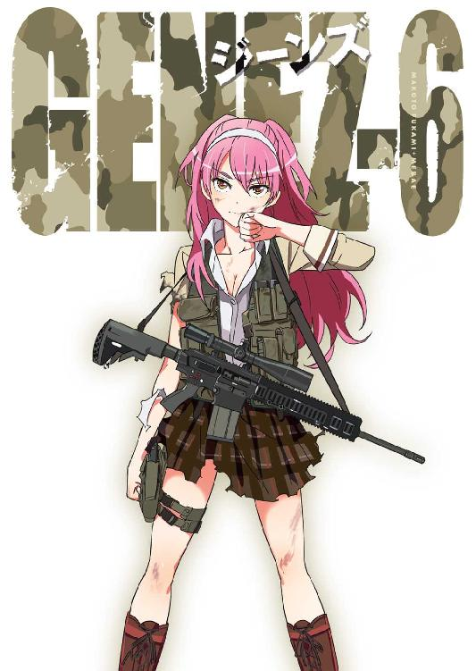
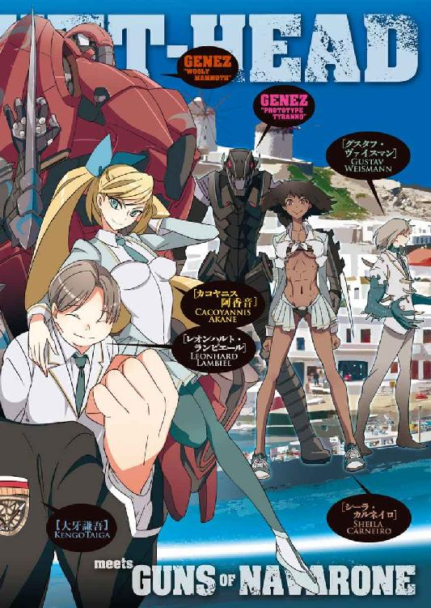
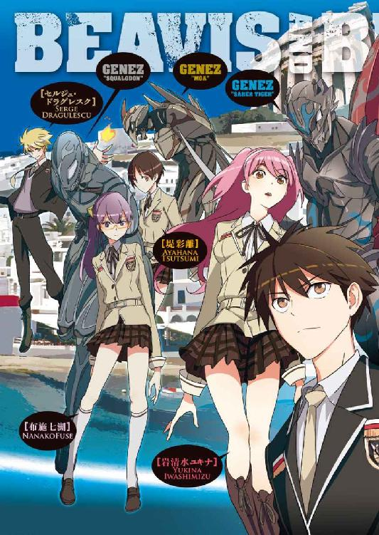
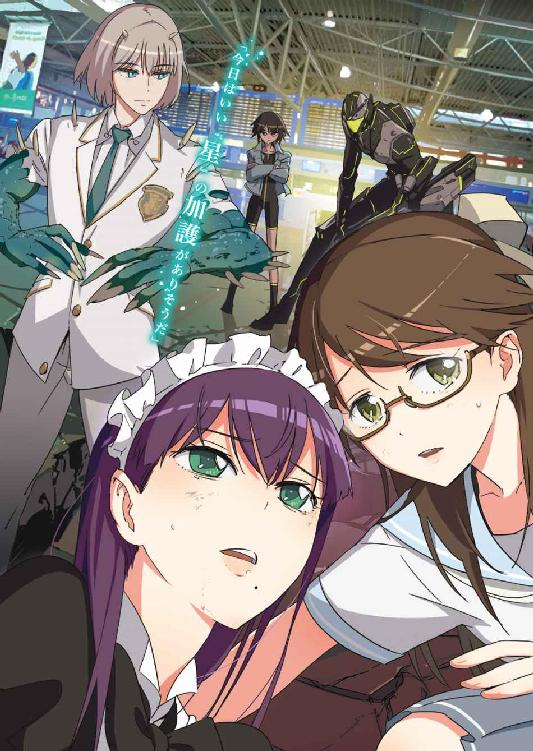
本作品の全部または一部を無断で複製、転載、配信、送信したり、ホームページ上に転載することを禁止します。また、本作品の内容を無断で改変、改ざん等を行うことも禁止します。
本作品購入時にご承諾いただいた規約により、有償・無償にかかわらず本作品を第三者に譲渡することはできません。
本作品を示すサムネイルなどのイメージ画像は、再ダウンロード時に予告なく変更される場合があります。
本作品は縦書きでレイアウトされています。
また、ご覧になるリーディングシステムにより、表示の差が認められることがあります。
口絵・本文イラスト mebae
ＣＯＮＴＥＮＴＳ
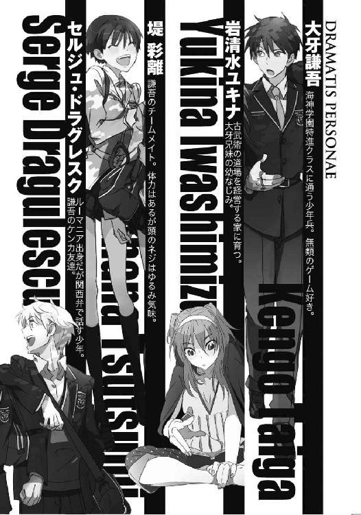
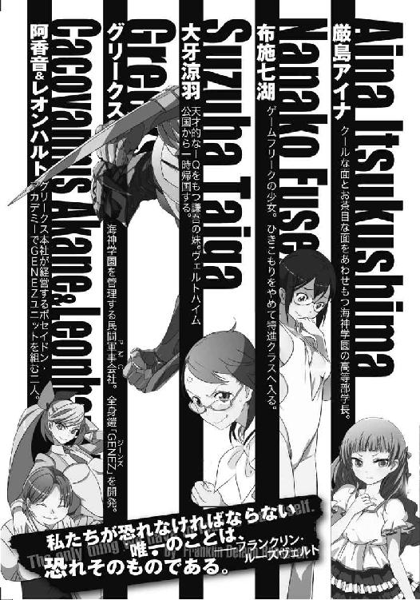
プロローグ
地球周辺の宇宙空間には、一万を超える数の人工衛星が存在している。そんな人工衛星のうちの一つ、地球同期軌道上の静止通信衛星「ソクラテス 」は、国家ではなく民間軍事会社グリークスの所有物だ。このソクラテスを介して、今日もグリークスの傭兵たちは衛星通信の会話を交わしている。
」は、国家ではなく民間軍事会社グリークスの所有物だ。このソクラテスを介して、今日もグリークスの傭兵たちは衛星通信の会話を交わしている。
『......こちらチーム「スコーピオン・トキシン」。コンゴでの任務に失敗した。現在後退戦を続けているが、弾薬も不足してきている。航空支援を要請する』
『こちらグリークス・コンゴ支部戦闘指揮所です。残念ながら、コンゴ政府から空爆の許可はおりませんでした』
『誰でもいい、近くにいるグリークスのチームに応援を要請！』
『幸運でしたね、チーム「スコーピオン・トキシン」。本社の精鋭がアンゴラで訓練中でした。掃除チームとしてそちらに急行します』
『よろしく頼む。こっちはもう限界だ！』
＊
アフリカ中部、コンゴ民主共和国。広大な面積の、熱帯の国。世界有数の鉱産資源産出国であり、原油の輸出も行っていることから、その利益を巡って長年争いが絶えなかった。現在内戦は終結したことになっているが、国内では過激な反政府武装組織がいくつも活動しており、平和にはほど遠い状態だった。
コンゴ、北キブ州の森林地帯で、グリークスの特殊任務分隊「スコーピオン・トキシン」が凄絶な後退戦を演じていた。部隊は三名の戦死者を出して、残りは九名。この森に拠点を置く国際的な麻薬密輸組織を壊滅させる作戦に失敗し、現在およそ五〇〇人の武装した敵に追いかけられている。
「分隊長、こっちのミニミはもう弾切れです！」
「隊長、自分のＭ４は残りマグ一本！」
「グレネードは!?」
「とっくの昔に品切れですよ！」
スコーピオン・トキシンの分隊長である日系アメリカ人柿沢は、自分自身もアサルトライフルを撃ちながら、部下から次々と届く悪い報告を頭の中で整理していた。ようするに、そろそろ店じまいだ。
部隊の行動にミスはなかった。問題は、グリークス・コンゴ支部の情報部が敵を過小評価していたことだ。情報部は麻薬組織を「主武装はＡＫ47、最も強力な武器でもＲＰＧ－７対戦車ロケット程度」と分析していたが、実際は違った。麻薬組織は重機関銃を搭載した戦闘車両を乗り回し、中古の戦車やヘリまで保有していたのだ。敵が使うライフルは、最新型のＨＫ４１６だった。
間違った情報のために、柿沢は三人の部下を失った。
次々と押し寄せてくる敵兵。大量の弾丸が柿沢たちの周囲を跳ねる。木の破片が飛び散り、地面の土が弾ける。こちらは森の木々を遮蔽物にして身を守りつつ、撃ちまくる。空薬莢が宙を舞う。
柿沢が使っているＭ４カービンは、すぐ近くで弾を食らった仲間の血で汚れていた。連射のしすぎですっかり熱くなった銃身に、乾いた泥がこびりついていた。柿沢のライフルの予備弾倉は残り六〇発分。それで終わりだ。
敵の嵐のような銃声に、砲声が混ざった。
柿沢たちの近くで、立て続けに爆発が起きる。砲弾の爆風で部下の一人が転倒し、破片を浴びた部下が血まみれになって二度と起き上がらない。
「迫撃砲か......！」
柿沢は、低くうめくように言った。
迫撃砲は厄介だ。とにかく数を多く用意できるし、持ち運びも楽だ。敵が狙いを修正して、着弾地点が近づいてきたら、こちらは成す術もなく全滅だろう。
さっき衛星通信を行った際、コンゴ支部の通信担当は『本社の精鋭がアンゴラで訓練中でした。掃除チームとしてそちらに急行します』と言っていたが、どうやら間に合いそうにない。逃げることもできない。
──ここまでか。
柿沢が全滅を覚悟した、そのときだった。
突然、敵兵に混乱が生じた。
凄まじい砲声のあと、あちこちで断末魔の悲鳴があがる。敵の、柿沢たちへの攻撃が一時的に止んだ。
「なんだ......？」
ライフルの銃声。それを弾くような金属音。
激しい戦闘の音だけが聞こえてくる。
「どうなってるんだ、いったい」
柿沢は、戸惑いの声をあげた。やがて、重く機械的な足音が響く。木の枝をへし折り、葉っぱを踏み潰し、邪魔する敵兵はなぎ倒し、何者かが近づいてくる。
どうやら敵ではないらしいが──。
「本社の『掃除チーム』が間に合ったのか......」
柿沢たちの前に、異形の巨体が姿を現した。
最新鋭のＤＮＡコンピュータを搭載した獣系遺伝子制御強化外骨格──ＧＥＮＥＺだ。
一般的なＧＥＮＥＺよりも、柿沢が見ているＧＥＮＥＺはずっと大きい。全長三メートルを超えている。
「お待たせして申し訳ない」
そのＧＥＮＥＺの、フルフェイスヘルメットに仕込まれた拡声器を通して声が出た。
「その鎧......もしかして......」
柿沢は半ば呆然としていた。
「はい。ＧＥＮＥＺです。ユニット暗号名『ハングオーバー１』」
「......噂には聞いていたが、初めて見た」
「その、僕のことあんまり人に話しちゃだめですよ」
まるで子供のような声だった。
グリークス本社のＧＥＮＥＺ。その操縦者は、イメージと違ってずいぶん物腰が柔らかい。
最大のサイズ、最強の重武装・重装甲を誇るウーリー・マンモス型だ。
「とにかく、間に合ってよかったです。あとは任せてください」
ウーリー・マンモス型ＧＥＮＥＺ──ハングオーバー１──は、その巨体に相応しい、とてつもない武器を腰だめに構えていた。
戦車の砲塔に似たその武器は、機関砲だった。
ブッシュマスター・チェーンガンを、ＧＥＮＥＺが持ち歩けるように改造したものだ。
機関部の電動機で、給弾、排莢、次弾装塡を行う。
砲弾はベルトリンクでドラム状の弾倉につながっていて、簡単に交換することができる。
口径は二五ミリだから、運が良ければ低空飛行の戦闘機を撃墜できる。
弾種にもよるが平均的な有効射程はおよそ三キロ、発射速度は最大一分間二〇〇発。
「では、『掃除』を始めさせていただきます」
ドンドンドン！ とＧＥＮＥＺ専用のチェーンガンが火を噴いた。その強力な砲弾は、森の木々を貫通し、人体をバラバラにしていく。コンゴの豊かな森が血に染まる。
迫撃砲を片付けるために、ハングオーバー１はジャンプした。ほんの数秒間だが、ジェット燃料を使って滞空することができる。
重装甲の巨体がロケット打ち上げのように飛び上がり、空中で迫撃砲の位置を確かめた。ＧＥＮＥＺには敵を画像で認識する高性能センサーがついている。一秒以下の時間で敵の配置や戦場の状況を把握する。
ハングオーバー１は、自由落下しつつ、チェーンガンを立て続けに発砲した。上から、正確な射撃で重要な目標から片付けていく。迫撃砲陣地は蹂躙され、テクニカルが派手に爆発して引っくり返る。
敵にとっては地獄絵図。
味方にとっては、守護天使がやってきてくれたような感動の光景だった。
──ただ、なんだろう。
柿沢の目には、ハングオーバー１がその作業を実に淡々と行っているように見えた。つまらなそうな──本当はやりたくないのに、無理やり戦っているような。とにかく、命が助かったのは間違いなさそうだ。
第一章 戦うお正月
──数年前。
黒海とカスピ海の間に位置する、小さな国──チェチェン。
この国は、大国ロシアと対立していた。
チェチェンの独立を、ロシアが武力弾圧したのが始まりだ。総合的な戦力で劣るチェチェン独立派はゲリラ戦とテロを繰り返し、それにロシアは虐殺で対抗した。
民間軍事会社グリークスの学生契約社員である大牙謙吾は、チェチェン軍に軍事顧問として雇われていた。
軍事顧問は、兵士の教育や作戦の立案、武器の調達を行って雇い主を援助する。もちろん軍事顧問本人も前線で戦う。戦場の「何でも屋」だ。
謙吾はまだ少年だったが、それでも徹底的な訓練を受けたプロフェッショナルで、すぐに現地のチェチェン兵たちにも技術を認められ、すっかり溶け込んでいた。
チェチェン系の難民キャンプが襲撃されたと聞いて、謙吾はＡＫ47アサルトライフルとＲＰＧ－７対戦車ロケットを持って現地に向かった。
隣国グルジア、パンキシ渓谷の難民キャンプだ。部下として預けられたゲリラ兵が八人ついてきた。敵は民間人相手でもかなりの無茶をする──急いで難民を助けようと思っていたら、待ち伏せを食らった。キャンプを攻撃したのは、グリークスの軍事顧問をおびき出すための、ロシア軍の誘いだったのだ。
「ＦＳＢの特殊部隊か......！」
ＦＳＢ──ロシア連邦保安局。
テロ対策部、特殊任務センターの特殊部隊アルファだ。ごてごてとパーツが追加された最新型のＡＫ、ガスマスクと防弾のボディアーマー、そして輸送ヘリに装甲車──装備はゲリラよりも圧倒的に上だ。しかも数は四〇名近い。
「大急ぎでＧＥＮＥＺを寄こせ！」
謙吾は、デジタル暗号機能つきの衛星通信装置を使い、グリークスのグルジア支部に連絡を取った。
『契約上の問題で、チェチェンの作戦には投入できない！』
と、グリークスの支部長。
「知るか！ 急いで投下してくれなきゃこっちは全滅だ！」
言い捨てて、謙吾は通信を切った。
「くそったれが！」
謙吾の近くにいた味方の兵士が、ハチの巣にされて崩れ落ちた。ライフル弾が頭蓋骨をかち割り、周囲に脳をばらまいていた。大口径のライフル弾は、胴体に炸裂すれば内臓を射出口から引きずり出す。
敵は山林に陣取っていた。
謙吾は背負っていたＲＰＧ－７を撃ちこんで牽制し、敵部隊に向かって猛然と突進していった。
生き残っている味方の援護射撃を頼りにしつつ、地面を力強く蹴って大きくジャンプする。
枝を踏み台にして猿のように木の上を移動し、謙吾は一気に敵の中心に飛び込んだ。
相手は数が多い。銃器類を撃ちまくっていたらすぐに弾が切れてしまうので、近い間合いではコンバット・ナイフを使う。どうせ、弾倉を交換する余裕はなさそうだ。
ロシア軍の特殊部隊兵士の喉に、迷わず突き刺した。気管を抉り、頸動脈をかっ切る。パキンッ！ と、喉仏を割るような感触が手に残る。
敵の兵士には、申し訳ないと思う。敵から見ればこちらはテロリストだ。
返り血を浴びながら、謙吾は殺した敵をつかんで盾のかわりにした。
死体から奪った銃を撃つ。
怒りを燃やすように発射炎が輝く。
耳をつんざく銃声が続く──。
「──ッ！」
謙吾は、自室のベッドの上で跳ね起きた。
「あれ......？」
夢を見ていた。
いや──ただの夢ではない。
本当に経験したことを──チェチェンの仕事を、夢の中で思い出していた。
ここは日本だ。海神学園の学生寮。
謙吾は、枕元に置いてある腕時計を手にとった。
時刻は深夜一時。日付は──。
「もう、一月一日か！」
思わず驚きの声をあげる。
「新年の目覚めが、こんなかよ......」
１
年末ぎりぎりまで続いていた特殊な期末試験──集団模擬戦や軍隊格闘技のトーナメント戦を含むハードなやつ──のせいで、海神学園の生徒たちはそのほとんどが紅白歌合戦やゆく年くる年を見る余裕もなく眠りについていた。
軍隊の格言「訓練より厳しい実戦はない」とはよく言ったものだ。実際はもちろん実戦のほうが色々な意味で厳しいのだが、それくらいのつもりでやらないと訓練の効果は上がらないということ。
しかし、こんな海神学園の特進クラスにも正月休みはある。
「明けましておめでとうございます！」
新年早々、謙吾の妹──涼羽の部屋に、チームの全員が集まった。
大牙涼羽はＩＱ１６０、一四歳でハーバード大学を卒業。史上最年少博士号取得の記録保持者。伝承と神話学専攻。ヴェルトハイム公国公女の家庭教師だが、ここ最近はグリークス日本支部の依頼で、エレナ・ヴェガから入手した様々な資料の解読と分析を行っている。
堤彩離、布施七湖、大牙涼羽の三人は普通に制服姿だが、ユキナだけは田舎から送られてきた豪華な振袖をしっかりと着込んでいた。目の覚めるような赤い着物に、梅の花の模様。帯は黒くて幅広く、ユキナの腰を美しく締めつけている。
「......ちょっとユキナさん」
七湖が自分のメガネをくいっと押した。
「一人だけ目立とうと思って、いくらなんでもそれはやりすぎじゃないスか!?」
「目立とうなんて思ってないよ！ ただ、正月でもないと着ないだろ、振袖なんて。せっかく両親が送ってくれたものだから......」
ユキナは恥ずかしそうに顔を真っ赤にしている。
「ちなみに、着つけは早朝のうちに、こども学長に手伝ってもらいました」
「で、学長は今はいない？」
セルジュが周囲をきょろきょろと見回して言った。
「手伝ってくれたあと、公用車で厳島の実家のほうに。親戚一同に挨拶をすませたら、学長も私たちと遊びたいって言ってた」
「そっかそっか」
学長が「遊びたい」なんて珍しい。やはり、正月気分ということなんだろう。
涼羽の部屋のテーブルに、正月料理が並んだ。海神学園学生寮の各部屋には、大体キッチンがついている。そこを使ったのだ。
「おぞうにだー、おせちだー！」
彩離が歓声をあげる。口笛も吹く。
「珍しく張り切って作った」
と、謙吾がなにげない口調で言った。
「え!? これ謙吾が作ったの？」
七湖が目を丸くした。
「サバイバルのためには色々なものを調理しなきゃいけない。そういう技術を学んでいるうちに、料理はわりと得意になったんだ」
謙吾が作った料理は、見た目も香りも上々だった。おせちは三段重ねで、海老や角煮も冷凍ではない作りたてのものが入っている。
「雑煮の汁は醬油と出汁な。豚肉とかも入ってる」
「謙吾のうちはそうなんだったんだ」七湖が感心したように言った。「こういうの、家とか地方によって違いがあるっていうけど本当だったんだね。うちは海老が入ってて、味付けは辛味噌だったよ」
「うちには餡子が入ってた」と彩離。
それを聞いた謙吾は思わず首を傾げて、
「それ、お汁粉じゃないのか......？」
みんな、腹が減っていた。
さっそく「いただきます！」と箸をつける。
新年最初に口にするのが謙吾の手料理で、涼羽、七湖、彩離──そしてユキナは上機嫌の笑顔だった。
「懐かしいな......」
雑煮を味わって、ユキナが顔をほころばせた。
「どこかで食べたことがある味だ」
「まだ俺と涼羽の母が生きていたころ、こういう雑煮を作ってくれたんだ」
「そうだ。子供のころごちそうになったことがあったんだ」
「......そういえば、二人は幼なじみなんだよね」
七湖は面白くなさそうだ。さっきからずっと、ユキナに押されている。
「テレビつけようー」
いい感じにだらけてきて、彩離がリモコンをいじった。涼羽の部屋のリビングには、大画面の液晶テレビが設置されていた。
「どうせ毎年おんなじ番組や」
と、セルジュがせせら笑う。
「そんなことないよ！ テレビを崇めよ！」
意味不明のことを口走る彩離。
「じゃあ、どんな番組やってん」
「ええと......」
デジタル放送ならではの、番組表機能を使ってチェックする。
「お笑いに、クイズに、駅伝......」
「ほら、毎年おんなじや」
勝ち誇るセルジュ。
「ぐぬぬ」
悔しがる彩離。
呼び鈴が鳴った。涼羽がインターホンで来客に対応する。
「あけましておめでとうございます」
「年賀状来てるよー」
やってきたのは、寮長を務めている女子だった。
各部屋に郵便物を配っているらしい。
謙吾やユキナたちに届いた年賀状は少なかった。それもそのはず、ビーバス＆バットヘッドは学生傭兵の特殊部隊であり、その住所は秘匿されている。関係者か、よほどの事情通でなければ手紙どころかＥメールを送るのも難しい。
「セルジュ、どうしたの？」
彩離が声をかけた。
セルジュが、一枚の手紙を見つめたまま表情を固くしていたからだ。彩離は、セルジュの手元を覗きこんで「すごい、エアメールだよ」と驚く。
「退役軍人のロバート・ウエストモーランドからや。年賀状なんて日本独自の風習なのに、気ィつかいおって。義理がたいやっちゃ」
「退役軍人？」
「ほら、俺はゴーレムで年をとっても見た目がかわらへんやろ？ 俺はこう見えて、第二次世界大戦で戦ったことがある。ロバやんは、米軍の特殊作戦組織──戦略事務局の同僚やった」
２
──第二次世界大戦中、一九四五年。
戦術級ゴーレム、セルジュ・ドラグレスクは、同僚のロバート・ウエストモーランド中尉とともに、ヒトラーが最後の抵抗を試みたベルリンに潜入していた。
逃げ損ねたドイツ軍の生化学兵器研究者の身柄を、ソビエトより先に確保し、アメリカのものにするためだ。
セルジュを作ったのはユダヤ人勢力であり、ソビエトよりもアメリカに協力的だった。最初は一兵卒として世界各地の戦場で力試しをさせられたセルジュも、やがてその特殊性が認められ、ＯＳＳの一員として極秘作戦に投入されるようになっていた。
ナチス・ドイツの首都ベルリンは、五〇万のソビエト赤軍に完全包囲されていた。
セルジュとロバートは、目立たないように市民と同じみすぼらしい洋服を着て、ベルリン動物公園の近くに身を潜めていた。目的の研究者の邸宅まであと少しだ。その研究者は人格に問題があり、ドイツ軍にも見捨てられ、完全に逃げるタイミングを失っていた。
遠くから自走式多連装ロケットランチャーの発射音が聞こえた。そして、爆発音。すべてが奇妙な音楽のように響く。カチューシャ・ロケットの演奏──「スターリンのオルガン」だ。大量のロケット弾が、第三帝国首都の見事な街並みを瓦礫の山に変えていく。
「いこう、セルジュ」
「ああ」
ロバートは減音器つきの拳銃を構えている。炎の精霊を使うセルジュは武器は何も持っていなかった。用心しつつ、移動を開始する。
通りのあちこちに、兵士や巻き込まれた民間人の死体が放置されている。両手を砲撃で失った青年が、虚ろな目つきでうろついている。道端に、骨や内臓が露出した死体が山積みにされ、腐った魚の臭いを周囲にまき散らしていた。
目的の研究者──シュタイナー博士の邸宅には、先にソビエト赤軍の兵士たちが侵入していた。セルジュたちと同じ特殊任務に従事しているようだ。赤軍参謀本部直属の精鋭部隊に違いない。一人の兵士が、抵抗する初老の博士を短機関銃のストックで殴りつけた。
敵の数は一五人。短機関銃かボルトアクションのライフルしか装備していないから、戦車と互角以上に戦えるセルジュが負けるわけがない。
「突っ込む。ロバート、援護を」
「了解」
セルジュが、赤軍の精鋭に攻撃を仕掛けた。炎の精霊の力──爆発する火球をばらまいて敵兵を焼き殺し、粉々に吹き飛ばす。火球で仕留め損ねた敵は、直接殴る、蹴る。セルジュの怪力で殴られた敵は、あっさり頭蓋骨が陥没し、派手に吹き飛んで壁にめり込む。
「シュタイナー博士ですね」
すぐに敵部隊を全滅させた。
「アメリカ軍です。あなたを保護します」
「私は戦争犯罪者だぞ」
「その技術さえ提供していただければ、大統領からの免責があります。ご心配なく」
シュタイナー博士を連れて、ベルリンから脱出することになった。エルベ川まで逃げれば、味方──米軍と合流できる。
しかし、すでにベルリン市環状防御線は突破され、ドイツ国民突撃隊も壊滅。ソビエト赤軍の攻撃はどんどん激しくなってくる。
やがて目の前に、不気味なキャタピラ音とともに巨大な敵が現れた。
「赤軍、親衛戦車軍団のＴ－34か！」
ずんぐりとした外観の中戦車だ。メカニズムは単純だが洗練されていて、極めて高性能。八五ミリの主砲に、七・六二ミリの機銃を装備。戦車の死角をカバーするために、大量の随伴歩兵もいる。Ｔ－34が手前に二両、奥に二両。セルジュたちの行く手を阻んでいた。
「セルジュ、ここは無理だ。迂回しよう」
「そんな時間はない。俺が片付ける......！」
セルジュは、両手に炎を生みだして戦車に飛びかかっていった。真上から、燃料タンクやエンジン、砲塔後部の予備弾薬を狙って火球を叩きつける。無数の銃弾、至近距離で炸裂する砲弾に傷つきながら、セルジュの悪魔のような戦いによって突破口が開いた。
──シュタイナー博士を救出したあとも、しばらくセルジュはベルリンで特殊任務に従事していた。ヒトラーの自殺、ドイツ国会議事堂と内務省の陥落──。歴史が変わる瞬間を、間近で見ていた。
ソビエト赤軍のベルリン包囲線で、多数の民間人が巻き込まれて死んだ。もちろん、戦争なのでそれだけではすまなかった。ソビエト赤軍は、占領したベルリンの女性を強姦した。金目のものを奪い、逆らうものは容赦なく殺した。セルジュは任務の途中、たくさんの女性をソビエト赤軍兵の手から救ったが、焼け石に水とはこのことだった。諸説あるが、少なくとも一〇万人のドイツ人女性が赤軍兵に強姦されたという。
セルジュ・ドラグレスクは地獄を見た。そして、怒りや悲しみといった感情の「摩耗」だけをリセットする、第三世代ゴーレム特有の機能をよく使うようになった。リセットとは、すり減った神経や感情を一度元の状態に戻すことだ。だからセルジュはどんな経験をしても感情が豊かなままなのだ。
ただし、直接感情に結びつかないだけで、記憶だけはしっかりと残っている。
「セルジュ、どうしたの......？」
彩離が心配そうに訊いてきた。
──少しだけ、セルジュは過去の悲惨な記憶にのみこまれかけていた。
「......ん？」
「凄い、ぼーっとしてたよ」
「あ、すまんすまん」
苦しいことばかりだ。どうせならいっそ、心のない本物の戦闘兵器にしてくれればよかったのに──。いや。セルジュは一人で静かにかぶりを振った。そんなことを言ったら、またきっとこども学長に怒られる。
たぶん、もう大丈夫だろう、とセルジュは思った。どんなつらい過去の記憶にも耐えてみせる。仲間の顔を見れば、仲間の言葉を思い出せば、正気を取り戻す。
「年賀状、返事かかなきゃな」
ユキナが言った。
「せやな......」
そう答えたが、返事は書かない。きっと、転職の誘いだろう。年賀状をきっかけに、昔話に花を咲かせて、そのうち「久しぶりに直接会わないか」と持ちかけてくる。
アメリカ軍に引き抜きをはかるつもりなのだ。
日本の高校なんかで働いてないで、ＣＩＡで派手な仕事をやらないか、と。
ベルリンのあとも、ロバートとは色々な作戦で組んできた。楽しくなかったといえば噓になる。歴史を裏から動かしているような、万能感に満ちた日々だった。
（でも、今は......）
ＣＩＡにも、高い給料にも興味はない。
大事なのは、仲間たちだ。
長い間生きてきて、こんなにしっくりくる居心地のいい場所は初めてなのだ。
それに、こども学長だ。何かとセルジュによくしてくれる。生徒たちには冷たいこどもサディストぶりが恐れられているが、セルジュは彼女が頭がいいだけのごく普通の女の子で、寂しがりやで、とても優しい性格だと知っている。
「問題ですね......こんな年賀状が届くなんて......まったく、うちの情報部はちゃんと働いているのかしら......」
誰かが、セルジュの年賀状を見てそう漏らした。
「あからさまに、引き抜き狙いじゃないですか......」
「確かに、退役軍人とは仮の姿で、きっと今でもロバートは......」
答えようとして振り返り、そこにこども学長──厳島アイナが立っていることに気づいて、セルジュや謙吾たちは引っくり返りそうになった。
「いつの間に!?」
「......人を幽霊みたいに言わないでください......まったく......」
眠そうな顔に、ひらひらの黒いドレス。こども学長は相変わらず、西洋人形のような可愛らしい雰囲気だ。
「厳島家のほうはどうでしたか？」
謙吾が訊ねた。
「別に......うちは普通の家庭とは違いますからね......」
こども学長の声から、疲れが滲み出ていた。日本有数の大富豪で、民間軍事会社グリークスの大株主でもあり、経営陣にも人を送り込んでいる。日本支部──海神学園の大学部・高等部・中等部は、ただの学生傭兵訓練施設ではなく、事実上厳島一族の私立軍隊だ。それだけに、親戚同士でも権力争いは避けられないことは容易に想像がつく。他人には話せない苦労を山ほど抱えているのだろう。
「お疲れ様です、学長」
彼女の苦労を察して、セルジュは微笑みかけた。
「べ、別に......疲れてなど......」
こども学長は、なぜか顔を赤くしてぷい、とそっぽを向いた。
それから数分後──。
「なんかゲームでもしようよ」
テレビがつまらないことを思い知った七湖が提案した。
「謙吾、いいの持ってないか？」と、ユキナが軽い調子で話を振った。「多人数でできる、楽しいやつ。テレビゲームはたくさん持ってるんだろう？」
しかし謙吾は赤面して、「えッ!? 俺が？」とみっともなく慌てた。
「無理やて。こいつギャルゲーしか興味ないんやから」
すかさず、セルジュがからかうように言った。
「失敬な！ 俺は海外の残酷ゲームやシューティングも好きだ！」
「どっちみち、そんなん正月にみんなでワイワイ遊ぶ感じちゃうやろ！」
「マリオパーティ的な、そういうの、一本もないの......？」
涼羽が、残念そうに瞳を曇らせた。
「えと......あ......確かに持ってないな」
「偏ってる......残念なお兄ちゃんのことが心配......」
「こ、こら！ 妹が兄をそういう哀れみの目で見るな！」
３
「みんなでカルタをしよう！」
彩離がアホみたいに明るい声をあげた。
「俺たち、カルタってトシか？」
当然、謙吾のノリは悪い。セルジュも少し呆れている。
「カルタに年齢も性別も国境も関係ないよ！」
めちゃくちゃなことを言っている。
「国境は関係あるだろ。俺たち、ヘブライ語のカルタとかあっても遊べないだろ」
謙吾はあくまで冷静だ。
「このヘリクツボーイ！ キライ！」
と、彩離は妙なテンションで謙吾に平手打ち。もしかしたら、未成年には絶対に許されないことだが──どこかで酒でも飲んだのかもしれない。
「ぶばッ！」
パシン！ とかなりいい音がしたが、謙吾は怒りもせずにすぐに落ち着いた声でこう返した。彩離の異常な言動には、もうすっかり慣れている。
「ヘリクツボーイってなんだよ。彩離お前さ、いい加減、脊髄だけで会話するのやめようぜ」
「ふんすふんす！」
と、鼻息を荒くする彩離。
なぜか、平手打ちをした彼女のほうが怒っているらしい。
「とにかく、やるの！ やらないの？」
「やるよ、正月っぽいのは間違いないし」
最初に謙吾が賛同した。彩離をなだめようとしているようだ。
七湖が挙手し、
「私もそれで賛成ー」
特に反対意見があがることはなかった。
「それにしても、よくカルタなんか持ってたな。どんなのだ？」
という謙吾の問いに、
「キコキコキコーン！」
と、彩離は自分の口で効果音を鳴らした。大山のぶ代だったころのドラが、四次元ポケットから道具を出すときの音だ。ポケットからプラスチックのケースに入ったカルタを取り出し、高々と掲げる。
「『戦争映画名ゼリフカルタ』ー！」
予想外の珍妙な商品の登場に、全員が思わずこけそうになった。代表として、謙吾が彩離にツッコミを入れる。
「なんでこんなカルタ買ったんだよ！」
「買ったんじゃないよ。寮の娯楽室から借りてきた」
「備品かよ！ これ」
「でもさ、さっき謙吾も言ったけど」と、七湖が言う。「私たち高校生なんだから、ただのカルタじゃつまんないよね」
「まあ、確かに」「一理あるな」
謙吾もセルジュもうなずいた。いくら正月気分とはいえ、ただ普通にカルタをやってもすぐ飽きてしまうだろう。
「そこで、特別ルールを発表します」
七湖が一人でどんどん話を進めていく。
「そう......脱衣カルタです」
「なんだそれ!?」
嫌な予感がしたのだろう。
ユキナの顔色がさっ、と青ざめた。
「ルールは単純。カルタをします。人数が多すぎても少なすぎてもつまんなくなるので、読み手一人、プレイヤー三人でやります。ここまでは普通です」
七湖は続ける。
「で、プレイヤーが札を五枚集めたら、他のプレイヤーの服を一枚脱がすことができる。全部終わって、一番服を脱がされていない人が勝ち。スリリングだし、駆け引きもある。面白いでしょ？」
目を白黒させて涼羽が訊ねる。「それって......脱衣カルタの公式ルールかなにかですか？」
「いや、たったいま私が考えた」
と言って、胸をはる七湖。
「反対です。っていうか新年早々カンベンしてください」
青ざめた顔のまま、ユキナが彩離に土下座をした。
それを見て七湖が「土下座するのはやッ！」と驚く。
ユキナがそこまで頭を下げているのに、それを無視して涼羽が「私は、大賛成です。やりましょう、脱衣カルタ」と言った。温厚で知的で優しい性格の涼羽には珍しく、ちょっと怒っているような顔だ。
「一番まともなはずの涼羽ちゃんが!?」
と、驚く一同。
「......だって、悔しいんだもん」
涼羽は可愛く唇を尖らせている。
「──え？」
「私も、振袖くらい持ってます。でも、ヴェルトハイム公国に置きっぱなしだから......ユキナさんだけが和装なんて、ずるいです。勝負して、脱いでいただきます......！」
「な......が、学長！」
ユキナはこども学長にすがりついた。しかし彼女は冷たく笑ってユキナを見下ろしている。
「......面白そうだと思う......もちろん、私は参加しませんけど......」
「そんなあ！」
「ふふふ」
──計算通り！
ユキナ一人が目立っていて悔しいのは、七湖も同じだった。
なんとかユキナにひと泡ふかせる方法はないか──。
そんな悪だくみをしていたら、彩離がカルタを持ち出したので、七湖は「これだ！」と利用することにした。
無理やり脱衣ルールをくっつける。
なんとなく、涼羽は「七湖側」のような気がしていたのだ。
彩離と涼羽が賛成すれば、もうユキナは従うしかない。根がサディストなこども学長は、きっと事態を面白がってやらせてくれるだろう。
謙吾とセルジュは顔を真っ赤にして「それはちょっと......」みたいなことを言っているが、強引にいけば間違いなく勢いで押し切れる。男子二人は戦いのプロかもしれないが、日常生活では妙に気が弱い。
（さあ、ユキナさん覚悟！）
彩離が持ってきた戦争映画名ゼリフカルタは、読み札と取り札が五〇枚ずつ。
その名前通りのカルタで、読み札には戦争映画の名ゼリフが書いてあり、読み人がそれを読む。取り札には、その名ゼリフが出てくる映画のパッケージ写真と、名ゼリフの最初の一文字がひらがなで大きく印刷されており、読み人に合わせて取り合うのだ。
テーブルの上に、殺伐とした絵柄のカルタが広がった。
ユキナはあまり映画に詳しくないので、一覧表を見て、大急ぎでどの読み札にどの取り札が対応しているのかを覚えた。
「じゃあ、いきます」
最初の読み人は、涼羽になった。プレイヤーは、七湖、ユキナ、彩離だ。
「はい」
「『一発じゃ足りない。弾倉には三発入れろ。ここから逃げ出すんだ』」
と、涼羽が読む。
「はいッ！」
彩離がすかさず反応した。
「『ディア・ハンター』！」
最初に五枚の取り札を集めたのは、彩離だった。
当然のように、最初に脱がせるのはユキナだ。
「あれやりたい」
と、彩離はわくわくした顔で言う。
「帯を引っ張って、女の人をくるくる回すやつ。『お代官様、あーれー』っていう。ほら、時代劇でたまにやるやつ」
「そ、そんな......！」
「よいではないか、よいではないか！」
「うわあああッ！」
彩離は、手早く紐と帯を解いてユキナを引っ張った。本当にコントでやる時代劇のパロディのように、くるくる回って着物がはだける。
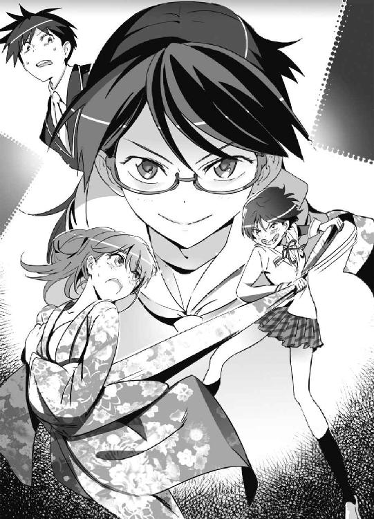
少し目を回したユキナは、
「ひ、ひどい......」
と瞳を潤ませてへたれこんだ。頰も紅潮していて、状況は間抜けなのにかなり色っぽい表情だ。謙吾とセルジュは同時に「ぶっ！」とふいて思わず視線をそらした。本当は凝視したいところだが、それではあまりにもユキナに申し訳ない。
とにかく、振袖の着物はこれでなくなった。
残るは、長襦袢、肌襦袢、裾よけ──あとは下着だ。
ちなみに、本来和服では洋風の下着はつけない。和装のためのワイヤーが入っていないブラも発売されているが、やはりそれは邪道だ。古風な家に育ったユキナには、下はともかく、着物にブラは我慢できない。だからユキナも、今日はつけていない。お尻のあたりに下着のラインが出るのが嫌で、わざわざ普段は絶対にはかないＴバックを選んでいるほどだ。
──まずいことになってきた。
肌襦袢を脱がされると、大変なことになってしまう！
確実に全裸よりも恥ずかしい格好だ。
「じゃあ、次行きます」
涼羽はメガネを光らせて冷静に札を読み続ける。
「......あれ、こんな妹だったっけ......？」
謙吾は不安を覚えずにはいられなかった。
４
勝負が進む中、涼羽が「『これがみんな夢だったらいいのに』」という札を読んだ瞬間、彩離の動きがほんの一瞬だけ固まった。負荷がかかりすぎたパソコンが、嫌な音を立ててフリーズするように──。そのセリフは、韓国の戦争映画、『ブラザーフッド』に出てくるものだった。彩離は、自分の過去を思い出さずにはいられない。
──堤彩離は、子供のころに「ある国」に拉致された。
そこで特殊工作員として洗脳、訓練されたのだ。
無抵抗な人間をいたぶったり、死刑囚と戦わされたりした。そして独裁者への忠誠を頭の奥にまで植えつけられた。彩離の周囲には、同じように拉致されてきた子供たちがいて、厳しい訓練の中で命を落とす者もいた。
美しい少女に成長した彩離は、ある政治家を殺すために、日本に帰国──いや「潜入」した。
あの頃の彩離は、本当に自分のことを独裁者に忠誠を誓った暗殺者だと思い込まされていた。プラスチック製の特殊な暗殺用拳銃を持ち込んで、東京都知事杯全国中学生レスリング大会の表彰式で標的の命を狙った。
しかし、その暗殺作戦は失敗する。
大牙謙吾が、その政治家の護衛任務についていたのだ。
彩離が標的に向けて放った弾丸を、防弾ベストを着こんだ謙吾が体をはって止めたのだ。失敗するわけのない任務──予想外だった。謙吾のことを、政治家の近くにいるただの学生だと思って油断していたのだ。
彩離は逃げて、追跡された。
謙吾に、袋小路に追い詰められた。
「特殊工作員の堤綾花だな」
「............」
「民間軍事会社のものだ。お前を取り押さえる。必要なら殺す」
──二人は、そんな出会いかたをした。
（......それなのに）
それなのに、今はこうして仲間たちに囲まれて、脱衣カルタに興じている。こんな幸せな生活を送ることができるなんて、昔は夢にも思ってみなかった。国家への忠誠のために、自分の命を犠牲にして任務を果たす──そんな幻を、謙吾のおかげで払拭することができた。
もう堤綾花ではない。グリークスの彩離だ。
「どうしたんですか、彩離さん」
七湖が怪訝そうな顔をした。
「さっきからやたらニコニコして」
「なんでもないよ。ただ、カルタが楽しいだけ！」
５
脱衣カルタは続く。
「『何もない。しかし、すべてだ』」
「『キングダム・オブ・ヘブン』！」
「このカルタ、歴史戦争映画も入ってるんですね」
「『今のは、やつのおふくろには見せられませんね』」
「『プライベート・ライアン』！」
「『アイリーン！ ファッキン、アイリーン！』」
「『ブラックホーク・ダウン』！」
「『口から垂れるクソの前と後ろにサーをつけろ！』」
「『プラトーン』！」
「違う、『フルメタル・ジャケット』だ！」
「『ホリョだー』」
「『ウインドトーカーズ』！」
「え、今のは名ゼリフとしては微妙じゃないか!?」
「それを言い出したら全部ちょっとおかしいですよ。このカルタ」
いまやユキナは、白い足袋に、あとは肌襦袢だけというマニアックな格好だ。重装甲の着物を剝ぎ取られて白い肌が露出していくさまが、あとで夢に出てきそうなほど艶めかしく、謙吾もセルジュもすっかり困り果てていた。お尻がほとんど丸出しなので、かなり過激な下着をつけていることまでわかってしまう。
もちろん、ユキナも持ち前の反射神経を駆使して反撃した。
七湖も彩離も、制服をどんどん脱いであと少しで下着姿だ。
「いいよ！ 脱げば！ 脱げばいいんだろう！」
ユキナはほとんど自暴自棄だ。
「これはいかん！」
少女たちの全裸を見るわけにはいかないので、謙吾とセルジュは慌てて部屋の外に出た。彩離が「こら、逃げるな！」と呼び止めてきたが、ここは振り切る。
「なんだかな......」
「ホンマ、正月早々騒がしいこっちゃ」
なんとなく、二人はそのまま寮の屋上に移動した。
静かな元旦だ。周囲の交通量が減っているし、授業も行われていないから、寮の各部屋で笑い声があがっているのが聞こえる。生徒会憲兵隊が、もちつき大会の準備をしている。校庭で凧揚げをしているのんきな生徒もいた。みな、休みが明ければ任務のために世界中の戦場に飛んでいく。
謙吾とセルジュは屋上から空を見上げた。青さが宇宙まで突き抜けそうな、一月らしい、雲ひとつない爽やかな空だ。
「平和やな」
「ああ」
日本には平和ボケという言葉がある。
この言葉を、世界各地の戦場で生きる人々が聞いたら怒るだろう。
誰もが、平和を求めて戦っている。
謙吾はしみじみとつぶやいた。
「......やっぱり、正月はこうじゃなきゃな」
「ここにいたのか、探したぞ」
声をかけられた。
屋上に、林力也と張鐘もやってきたのだ。
林力也は謙吾たちの先輩で、精鋭ぞろいで有名な軍隊格闘技研究会のエースだ。実戦的な筋肉をたっぷり身につけた大男。若いころのアーノルド・シュワルツェネッガーに似ている。ただ、彼は顔の老け具合をいつも気にしている。
そして張鐘は、特進クラスでも一、二を争う狙撃の名手。顔が悪く、しかも無愛想。強面だが、休暇のほとんどを恋愛シミュレーションゲームの攻略に費やす緩い一面もある。謙吾とは同好の士、というわけだ。
「あけましておめでとうございます、先輩」
しっかり頭を下げる謙吾。
「あけましておめでとう。今年もよろしく」
つられて、丁寧に挨拶を返す先輩二人。
「で、どうしたんですか？」
「お前だよ、お前」
と、林が謙吾を指さす。
「はい？」
「一年の計は元旦にあり。今年も充実した戦いを願って、お前とスパーリングがしたい」
──そういえばそうだった。
「なんか、去年もやりましたね......これ」
思い出して苦い顔をする謙吾。
「ここ数年は毎年やってるな。いつも俺が勝ってる」と林。
「張鐘さんは？」
「部屋でギャルゲーやってたら、林に無理やり連れ出された」張鐘は不愉快そうに答える。「『正月くらい仲間と一緒に行動しろ！』だってさ。余計なお世話だっつーの」
「張鐘！ お前の協調性のなさには腹が立つ！ で、謙吾！ やるのかやらんのか！」
「いいですよ。やりましょう」
謙吾は右拳を握って、左の掌に叩きつけた。
「ジムか道場にいきます？」
「ここでいい。軽くすませよう」
林が腰を低く落として構えた。打撃にもタックルにもいける、ほどよく力の抜けたコマンドサンボ系軍隊格闘技の構えだ。
「ルールは顔面なし、倒れた相手への蹴りはなし」
そう言って、謙吾も構えた。コマンドサンボも使えるが、ここは腕を長く伸ばして東南アジアの格闘技──シラットの構えをとる。
「それでいい」
屋上で、謙吾と林のスパーリングが始まった。軽いジャブから入って、ボディを撃ち合い、隙あらば関節をとろうと腕をからめる。骨と骨、肉と肉がぶつかる鈍い音が鳴り響く。ハイレベルな攻防に、はたで見ているセルジュが思わず口笛を吹いた。
「どんどん成長してるな！ 謙吾！」
「林先輩こそ！ そろそろ衰えてくださいよ！」
「俺はまだ若いんだよ！ 老けてるのは顔だけだ！ バカにすんな！」
「そ、そんなつもりで言ったんじゃないですよ！」
謙吾は、獣のような姿勢から林に飛びかかる。
空中で回転しながら、二連続の回し蹴り。
林はそれをバックステップでかわし、謙吾が着地したところにタックルを合わせる。危うく倒されそうになるが、謙吾は林の背中の上を転がるようなアクロバットな動きでタックルを切り、間合いをとる。
林の下段蹴り。
謙吾はそれをすねを上手く使ってブロッキング。
ここで林は逆回転し、下段の後ろ回し蹴り。足を払われて謙吾は引っくり返るが、ここからのリカバーがシラットの真骨頂だ。寝技に持ち込もうと近づいてきた林に、謙吾は寝転がったまま真上に蹴りを放ち、林の顎を打ち抜く。さらに謙吾は片手で逆立ちしながら二段蹴り。
「！」
慌てて後退する林。その隙に、謙吾は一瞬で立ちあがる。
二人が構え直し、ほぼ同時に不敵に微笑んだ──。
そのときだった。
「──っ！」
突然、謙吾の胸から血が噴いた。
少し遅れて、はるか遠くからの銃声が聞こえる。
超音速の、超遠距離狙撃で撃たれたのだ。
６
──謙吾の意識は闇に落ちた。
致命傷を受けて、倒れた。
体がぴくりとも動かない。
（ここは、どこだ......？）
無重力の闇の中をさまようような感覚だ。
自分の体が麻痺している。それなのに、ひどく寒い。
（誰かに、撃たれた。かなりの遠くから）
無差別テロだろうか？
いや、違う。謙吾が狙われた。プロの仕事。依頼主は誰だ？ チェチェン時代の敵か、それともダルフールで買った恨みか......心当たりが多すぎてまったくわからない。
人を殺す人間は、いつか自分も殺されるかもしれない。当たり前のことだ。殺した相手に家族がいれば、復讐を願ってもなんの不思議もない。謙吾も、仲間が殺されたら必ずやり返すだろう。そして永遠に戦いは続く。この星に人間がいる限り。
どんどん、自分が奈落に落ちていく気がする。
──死ぬのだろうか、こんな、唐突に。
しかし謙吾は、落下が止まるのを感じた。何か、暖かいものに受け止められた。
優しい女性に抱かれているような、いい気分だ。
（......母さん？）
「............」
謙吾が目を覚ますと、学校の保健室だった。ベッドの上だ。
「よかった......謙吾......！」
すぐ近くに、ユキナがいた。脱衣カルタで最後まで負けたらしく過激な下着にバスタオルを羽織っただけというとんでもない格好だった。しかも、それで謙吾に抱きついてきたので、その拍子に大事なバスタオルまで床に落ちてしまった。
謙吾はいつの間にか服を脱がされていて、上半身裸だったので、ユキナの胸の感触があまりに直接的で心臓が止まりそうになった。このままでは弾丸ではなく、興奮のせいで死んでしまいそうだ──。
だんだんと謙吾の意識が冴えてきて、状況を把握することができた。謙吾は撃たれて、意識を失った。犯人はわからないが、とにかく凄腕だろう。普通なら確実に死んでいるところだったが、ユキナが駆けつけてきてキスをしてくれた。
ユキナの特殊能力──ナイチンゲールの不思議な力によって、謙吾はギルガメシュと呼ばれる不死身の兵士になる。
不死身になるのは短い時間だが、傷は完全に再生するので、謙吾は危ないところで一命をとりとめたわけだ。即死していたら、いくらギルガメシュでもアウトだった。
「ウチのセキュリティも、時々頼りにならないな......」
それとも、敵の腕がセキュリティの想定を超えていたのか。
プロフェッショナルの想像を超えるプロフェッショナル──？
「まあ、いいか......」
謙吾は、涙目のユキナを抱きしめた。
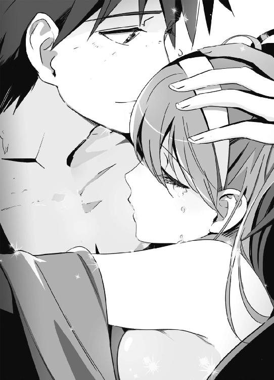
──彼女には、助けられてばかりだ。
必ず守ると約束した。
それなのに、守られているのはこっちのほうだ。
「大好きだよ、ユキナ......」
謙吾は、そう考えただけのつもりだった。
だが、もしかしたら声に出してしまっていたかもしれない。
──今年も、ひどい一年になりそうだ。
第二章 招待状
俺たちはまともな世界を知らない。
俺たちにとって、世界がまともだったことなんて一度もない。
第二次世界大戦を最後に、大きな戦争は起きていない。
だが、内戦や紛争で、世界大戦クラスの死者が今日も出続けている。
──わかるか？
日本は「たまたま」平和なだけなんだ。
ここは、戦いの星だ。
殺し合ったり憎み合ったりするのが当たり前。人間と人間は決して理解し合うことはできない。常に相手から奪うことを企み、奪われることを恐れている。それでいいじゃないか。そういう世界のほうが、居心地がいいんだ。
なあ──。
お前だって、そうなんだろ？
１
まさかの元旦に、謙吾が撃たれた。
狙撃で、死にかけた。
本来なら致命傷だったが、ナイチンゲールの力によって傷はすでに完全に治癒した。ユキナのおかげだった。
狙撃の翌日、謙吾は高等部の学長──厳島アイナに呼びだされた。学長室には謙吾の他に、ユキナ、七湖、彩離、セルジュ──そして特進クラスの先輩である張鐘翔太もいた。ソファが足りなかったので女子だけ座って、男子は立ったまま壁に寄り掛かったりした。殺されかけた謙吾は不機嫌そうに腕を組んでいる。
ふと、ユキナと謙吾の目があった。「──っ！」するとユキナは、顔を熟したリンゴのように真っ赤にして、もじもじと顔を横に向けた。謙吾には、なぜユキナがそんな態度をとるのかがわからない。撃たれたあと、頭がぼんやりしているとき、何か言ったような気もするが......。
張鐘は海神学園特進クラス最高の狙撃手だ。学生離れした凄腕で、恐らく世界でもトップクラスに入る。
犯人を割り出すために、張鐘が学園所属の科学捜査チームを率いて分析と証拠集めを担当したのだ。海神学園の力があれば、わざわざ面倒くさい手順を踏んで日本警察の力を借りる必要はなかった。
弾丸が謙吾の体に侵入した角度、貫通した弾丸がめり込んだ位置、周囲のロケーションなどを数値化して、七湖やファンタスティック・スリーの面々が弾道計算ソフトに入力。そうやって浮かび上がった狙撃者の位置は、なんと──。
「四キロも離れた、超高層マンションの屋上からだった」
張鐘が苦い顔で言った。
「弾丸の分析は？」と、こども学長。
「これがふざけた話でな......」と、張鐘は悔しそうに頭をかき回す。「狙撃地点のマンション屋上に俺や鑑識スタッフが向かうと、へりの部分に空薬莢が立ててあった」
薬莢とは、弾丸を包むケースのことで、撃ちだすための発射薬が詰まっている。発砲後は、必ず銃本体から排出される。犯人が現場に空薬莢を残していれば、捜査の手掛かりになることが多い。
ユキナが首を傾げて、
「立ててあった？ 空薬莢が？ 偶然そうなっていたのか？」
「犯人が、わざと残していったんだよ」
腕を組んだまま、謙吾が険しい目つきで断言した。
「......っ！」
その言葉に、事情を知っていた張鐘以外の全員が戦慄した。
狙撃者が、証拠となるものをわざと残した──。
「追いかけてこい」とでも言いたげに。
つまり、挑戦状ということだ。
謙吾は冷静に見えたが、内心ははらわたが煮えくり返っていた。なにしろ殺されかけたわけだし、しかも狙撃者はこちらをなめきっている。
「薬莢の口径や種類は？」
とセルジュ。
「口径二〇ミリ。機関砲弾だよ。薬莢の長さは一三〇ミリ。使用弾種は徹甲弾。ライフリングは四条右回り」張鐘の口調は、得意とする分野のことだけによどみがなかった。推測に、自信がこもっていた。「これに当てはまる狙撃銃は、少なくとも大量生産はされていない。誰かが一からオリジナルで組み立てたか、極端なカスタムガンか......どちらかだ」
「そんなんくらってよう助かったなお前」
セルジュが腕を組んで大袈裟に感心した。
「頭か心臓の中心だったら即死だったろうな」
謙吾が他人事のように言って、ユキナと七湖が青ざめる。
「もうちょっと、弾丸について聞きたいのですが」
こども学長が話を先に進めた。
「はい」と張鐘。「詳しく調査した結果、銃と同じく弾丸も市場ではまず見かけないもので、ファクトリー・ロードではありませんでした」
ファクトリー・ロードは、工場で大量生産された弾丸のこと。安価だが、精度は標準的だ。精密狙撃は、銃だけではない、弾丸の質によっても結果が変わってしまう。
「犯人が使ったのはハンド・ロードの弾丸です」
自分の目的に合った弾丸を、手作りしたのだ。
薬莢を整形し、研磨する。
パウダーメジャーとデジタルスケールを使って弾丸の発射薬を調整する。
そうやってできた弾丸は、職人の腕にもよるが、ファクトリー・ロードの弾丸では考えられないような高精度を発揮する。
「そんな手作りの弾丸なんて、証拠のカタマリみたいなもんじゃないの？」
彩離が軽い調子で言った。
張鐘は悔しげに目を細めて、
「ところが、空薬莢にさえ指紋一つ残っていない。弾丸に使用された金属や発射薬の成分を分析しても、ありふれた材料という結果しか出てこない」
「つまり、こういうことか」
謙吾が、張鐘の話を整理した。
「俺を撃った犯人は、わざとらしく空薬莢を犯行現場に残していった。しかし、使用した銃は不明。ハンド・ロードの弾丸で世界最高峰の精度を実現できる凄腕。色々と推測はできても、有力な手掛かりはなし」
「......そういうことだ」
張鐘は苦々しい顔でうなずいた。
「しかし......四キロも離れた標的を撃てるもんですかね？」
七湖が、ピンとこない、という顔をしていた、無理もない。四〇〇〇メートルだ。そんな遠くの標的に当てるなんて、そう簡単に信じられるものではない。
「四キロだろうがなんだろうが、やったんだよ、この犯人は」
「何か道具とか機械は使わなかったのかな？」
七湖が続けて訊ねた。
張鐘が答える。
「何かしらの弾道計算ソフトは使っただろう。最近は、大規模な機械を使ったリモコン式の狙撃システムなんてものも存在するが、今回の現場からその痕跡は見つけられなかった」
「機械を使うと何か現場に残るんですか？」
「大口径の狙撃銃には強い反動がある。リモコン式で撃つなら、機械は固定したほうがいい。どこかに固定した痕跡がなきゃいけないってことだ」
「なるほど」
「ということは......やっぱり人間がやったんだ......」
そう言った彩離の目はまんまるで、驚きが隠せていなかった。
「超望遠のスコープをのぞいて、伏射で撃った。弾道と着弾を何度計算しても答えは一つだよ。お前を倒したのは狙撃なんてチャチなもんじゃない。──芸術だ」
と、張鐘がため息まじりに言った。
「敵を褒めるんですか？」
謙吾は眉間にしわを寄せた。
「狙撃の芸術。芸術は芸術としか言いようがない」
こども学長も難しい顔をしていた。
「......世界各地の主要な国際空港の利用記録を調べてみました......」
「成果は？」
成果があったのなら、こども学長はこんなに暗い顔をしていないはずだと思いつつ、それでも一応謙吾は訊いておいた。
「特になし」
こども学長は予想通りの答えを口にした。
「......バビロン・メディスンや、プロの殺し屋の仕業ではなさそうです。もしもこれがプロの仕業だとしたら、今までどんな仕事でも一切証拠を残してこなかったか、初めて仕事を請け負った新人ということに......」
「新人、はないでしょう。いくらなんでも」
張鐘が言った。
謙吾も同感だった。これが犯人にとって初めての仕事だったとしたら、それはきっと神か悪魔の子供なのだろう。
「ちなみに、張鐘さんにはできますか？ この狙撃」
ふと疑問に思って、謙吾が訊ねた。
「四キロで、謙吾の胸部に着弾、か──」
張鐘は自分の顎に手を当てて少し考えてから、答える。
「悔しいが、俺の腕と、俺が手に入れることができる範囲の武器じゃ無理だ」
張鐘よりも狙撃の腕が上──。
つまりそれは、海神学園の特進クラスで、この犯人に狙撃で対抗できるものはいない、ということだ。
「おい、謙吾」と張鐘。
「はい」
「世の中、広いな」
２
「しかし......手掛かり探しも大事やとは思いますけど、他にも考えとかなあかんことあるんちゃいますか」
セルジュがそんなことを言い出した。
「......たとえば......？」
こども学長がきょとんとした顔で首をひねった。
「なぜ、謙吾が撃たれたのか、っちゅう」
「──っ！」
そういえば、そうだ。
犯罪には、動機があるものだ。
セキュリティが厳重な海神学園内にいる謙吾を撃つために、わざわざ四キロも離れた場所から狙撃してきたのだ。
なんの理由も目的もなく、やるわけがない。
「謙吾は、誰かに恨まれたりとかは──」
ユキナが、申し訳なさそうに訊ねた。
「こう言っちゃナンだが......」
謙吾は少し困ったように自分の髪の毛をかき回しつつ、答える。
「心当たりは山ほどある。数え切れないほどだ」
「............」
謙吾の言葉には、幼いころから戦ってきた人間特有の重さがあった。
ＧＥＮＥＺを着用すれば、その力は最新鋭の戦車中隊に匹敵する。着用できるのは、遺伝子に適性のある若者のみ。望むと望まざるとにかかわらず、謙吾はＧＥＮＥＺが「選んだ」少年であり、戦う宿命の中にあった。
潰した犯罪組織、傭兵部隊の数は一〇や二〇ではない。
「俺は世界各地で敵を作ってきた。俺は『いいこと』をしたつもりでも、当然、向こうには向こうの都合があるだろう。クリスマスも、逆恨みで襲われたばっかりだしな」
謙吾は唇を微かに歪めて自嘲した。彼には珍しい、やや卑屈な表情だった。
「戦場にも正義はある。だが、たくさんある。敵にも味方にも。それが問題だ」
「今までの敵に、凄腕の狙撃手ってのはいるかい？」
と、張鐘が質問してきた。
「たくさんいた」と謙吾。「でも、張鐘さんより腕がいいなんてやつは思い浮かばない」
「はーい」
と、七湖が手をあげた。
「ちょっと、色々と思いついたんだけど、いいかな？」
「......もちろんです」
豪奢なデスクの上で手を組んだこども学長が、重々しくうなずいて許可を出した。
「推測するにしても何にしても、とにかく論理的に考えてみようよ」
理系の七湖らしい発言だった。
「逆恨みや復讐のセンは捨てたほうがいいと思うんだよね」
七湖以外の全員が、なぜ？ という顔をした。
「だってさ」と、七湖は続ける。「犯人は、わざわざ空薬莢をこれ見よがしに置いていったんだよ？ 謙吾を殺すのが目的なら、そんなの必要ない」
言われてみればその通りだった。わざわざ空薬莢を残していったのは、謙吾を撃ったあとの展開を考えてのことだろう。
「もしかしたら......殺すつもりはなかったんじゃないかな」
七湖は、探偵の謎解きのように自分の推理を披露していった。
「私は銃のことはよく知らないけど、人を撃つのに徹甲弾って向いてないよね？」
「ああ、そうだ」
七湖の言いたいことを理解して、張鐘が「あッ」と小さな驚きの声をあげた。
徹甲弾は、装甲を貫通するための合金製だ。
貫通力が「強すぎる」ので、人体を破壊する前に抜けてしまう。
「二〇ミリの榴弾や焼夷榴弾だったら、謙吾が死ぬ可能性はより上がっていた」と張鐘。
「あえて、急所以外の場所を徹甲弾で撃ち抜いて......」
言いながら、こども学長がガタッと椅子から腰をあげた。
「......ユキナが、謙吾を助けるように仕向けた？」
こくり、と七湖はうなずく。
「なんて回りくどいことを......」
彩離がそんな疑問を口にしたので、
「ユキナの力って、極秘なんですよね？」
七湖はさらに推測を進めていった。こども学長の目を見て、確認を求める。
「もちろん、極秘中の極秘......グリークス日本支部の切り札です」
「『どの程度の力を持ったナイチンゲールなのか』──それを確かめたかったとか。あるいは、挑発です。謙吾を撃って、サインでもするかのようにあの空薬莢を置いていった。犯人は、もう一度謙吾に会うつもりなのかも」
「その両方かもしれない」そう言って、謙吾は微笑む。「さすが七湖だ。読みが鋭い」
「えへへ！」謙吾に褒められると素直に嬉しい。もしも七湖が子犬だったら、主人に撫でられたときのように、千切れんばかりに尻尾を振っていたことだろう。
「......やり方を変えましょう」
こども学長が目つきを鋭くした。
「......もしも敵の目的がユキナの力を見定めることだったなら、狙撃があった時間帯、海神学園の近くに無人偵察機か何かが飛んでいた可能性がある......。他にも、偵察衛星で監視されていなかったか。学園内に侵入者がいなかったか。今までとは違う角度から捜査します」
「時間がかかりそうですね......」
謙吾は焦燥にかられて、足下に火がついたような思いを味わっていた。犯人は不明、動機も不明。第二、第三の狙撃がある可能性も捨てきれない。この状況で気分が落ち着くほうがおかしい。
「......でもやります......」とは言いつつも、こども学長も面倒くさそうだ。「そして、手掛かりを見つけます。これは、グリークスへの......いや、私たちへの挑戦です。挑戦は受ける。そして最後に勝つ。厳島家の......いえ、海神学園のモットーです」
３
学長室から、謙吾が学生寮に戻った。「あまり外はうろつかないように」と、学長から厳命がくだされていた。謙吾も、あんな狙撃をくらったあとだと、さすがに気分が冴えなかった。
「犯人探しはセルジュや張鐘、林に任せて、謙吾はゆっくりしていなさい......」とのこと。謙吾が「ですが......」と反論しようとしたら、こども学長はぴしゃりと「今回は、あなたを守らないといけないんです。警備の人間に余計な手間をかけないように！」と言い放ち、それで終わりだった。
謙吾は事件の捜査からも外されて、屋外でやる授業には参加しないように言われて、期末試験のたぐいも一段落しているので、部屋でゲームをしたりＤＶＤを観たりするくらいしかやることがなくなった。なんだかんだで忙しい日々を送ってきた謙吾は、まるで急激に燃え尽きたかのような感覚を味わい、「ああ、働き者だったサラリーマンが定年退職したらこんな感じなのかな......」としみじみ思った。
「そういや、まだクリアしてないゲームがあったな......」
謙吾は買ったまま放置していたゲームソフトを開封した。ＸＢＯＸ３６０のソフトだ。最近３６０で発売される国内メーカーのゲームはほとんどがいわゆる美少女ゲーム、ギャルゲーであり、今謙吾が本体にセットしたのもまさにそのジャンルだった。
謙吾の部屋はものが多くてごちゃごちゃしているが、ゲームを楽しむためのスペースは確保されていた。柔らかい背もたれのリクライニングチェアーに深々と腰を沈めて、コンパクトなサイドテーブルに飲み物とお菓子を置いて、万全の状態でプレイするのが幸せなのだ。
ペプシコーラをグラスについで、冷蔵庫に入れっぱなしだったもうすぐ賞味期限の切れるチーズをテーブルの上に置いて、コントローラーのしいたけを上から見たようなボタンを押し込んでゲーム機の電源を入れる。３６０のコントローラーはワイヤレスだ。
ゲームで美少女といちゃいちゃするのは楽しい。
──どうして俺、こんなにギャルゲーが好きになったんだっけ？
少年兵キャンプで唯一の娯楽がゲームボーイだった。それからグリークスに入って、世界各地の戦場で戦ううちに、謙吾の精神は急激に疲弊していった。内戦、紛争、難民キャンプ、民族浄化、大量虐殺──。何千何万という死を、直接その目で見て回った。
謙吾は、まったく眠れなくなった。
体に害があるほどの睡眠薬を服用しても、ほんの数時間で目が覚めた。
指先が勝手に震えだし、気づかないうちに大量の汗をかいていたりした。食欲もなくなり、ほんの数日で何キロもやせた。
戦争神経症だった。
極度のストレスによって、自律神経に不調をきたしてしまったのだ。
休暇を取った謙吾は、ずっとゲームをやった。他のことが手につかなかった。今はもう平気だが、あの時期は人が死んだり暴力が登場するゲームが一切プレイできなかった。そこで、美少女恋愛ゲームを大量に購入して、何日も眠らずに次々とクリアしていった。
謙吾に必要なのは、回復するための時間だった。その時間を、美少女ゲームが稼いだ。
定期的に精神科医のカウンセリングも受け、なんとか任務に復帰し、セルジュや彩離と出会った。仲間とのきずなが謙吾をさらに強くした。
やがて──。
謙吾は、戦場に慣れた。
考え事をしているうちに、ほとんど無意識に指が動いてゲームの攻略が進んでいた。ただの恋愛や告白だけでなく、夫婦生活まで楽しめるというのがウリのゲームだった。いつの間にか妹タイプのキャラの攻略に入っていて、可愛らしい美少女が「お兄ちゃん！」と呼びかけてくる。
「お兄ちゃん......」
「ん？」
今までとは違う、やけにリアルな音声だった。
「あれ、急に音質変わったかな」
「ええと、その......」
油断していたのだろう。
部屋に、妹の涼羽が入ってきていることに、ようやく気付いた。
「！」
フルハイビジョンの液晶テレビには、謙吾のことを「お兄ちゃん！」と呼ぶ二次元の美少女が、やたらと短いスカートをひらひらさせてこちらを誘惑しているところだった。謙吾はわたわた！ と慌てて、テレビの電源を落とした。
「いきなり入ってくるなよ涼羽！」
「ちゃんとノックもしたんだよ！」
涼羽には、この部屋の合鍵が渡してある。ノックにも、ドアを開ける音にも気づいていなかったとすると、今の謙吾は自分でも信じられないほど緩んでいたようだ。
「心配して様子を見に来たのに、こんな昼間からギャルゲーやってるなんて！」
「そ、それは......」
謙吾が言い訳しようとすると──。
「もう、バカ！」
涼羽が大声をはりあげた。怒り顔のまま泣いていた。そういえば、謙吾が撃たれたと聞いた直後、妹はその場で気を失ったそうだ。いくら完全に治癒したとはいえ、不安にさせたのは間違いなかった。
「............」
謙吾が立ちあがると、涼羽が抱きついてきた。少し驚いたが、謙吾は涼羽の細い腰に手を回して受け止めた。こうやって抱き合っていると、子供のころに戻ったような気がしてくる。謙吾がまだ兵士ではなく、涼羽がまだ天才少女ではなかったころに。
「......ごめんな、涼羽」
「いいよ、許してあげる。お兄ちゃん」
「よかった」
「そのかわり、お願いがあるの」
「どんな？」
「お兄ちゃん、グリークスは辞められる？」
「......それは無理だ」
「だと思った」
「ごめん」
「さっきから謝ってばっかりだね、お兄ちゃん」
「............」
「わかった。グリークスの仕事が大事で、お兄ちゃんが欠かせない人材だってのはわかってるの。だから、とにかく頑張って。そして一つだけ約束して」
「約束？」
「うん。お兄ちゃん......絶対に、死なないで......！」
妹の涙と健気な申し出に、謙吾の胸は熱くなった。ああ、死ぬもんか。まだやりたいことがたくさんある。ちゃんとした彼女も作らないうちに死んでしまうなんて、想像しただけで泣けてくる。
涼羽のおかげで、謙吾は自分がひどく苛立っていたことに気づいた。人間は調子が悪くなると、まず最初に自分自身のことがわからなくなる。妹の体温、そしてぬいぐるみのような柔らかい抱き心地に癒されて、ようやくいつもの調子を取り戻していく。涼羽も、兄の厚い胸板に安心したのか、いつの間にか泣きやんで安らかな笑みを浮かべていた。
「ところで......」
しばらく抱き合っていたら、謙吾は気になっていたことを思い出した。
＊
「久しぶり、お兄ちゃん」
「涼羽......！」
「お兄ちゃん、大事な話があるんだけど......」
＊
「急に思い出したんだが」
「なに？」
「涼羽からの大事な話って、なんだったんだ？ まだ聞いてない」
謙吾がそう訊ねた次の瞬間、やっと泣きやんだ涼羽の表情が曇った。
「それは......」
と口ごもる。やはり、話しにくいことなのだ。なんとなく、謙吾もそれは察していた。どんなに重要でも、口にしにくい話題はある。涼羽にも葛藤があるのだろう。言うべきか、言わざるべきか──。互いに何度か話し合おうとしたが、その時々タイミングも合わなかった。
「今じゃなきゃ、ダメ？」
涼羽はそれでもためらった。
「ようやく、こういう機会がきた。次がくるとは限らない。またタイミングがずれだしたら延び延びになる。せっかくだから、聞いておきたい。そんなに話しにくいことなのか？」
「うん、ちょっと......」
「じゃあ、やっぱり今聞いておきたい」
涼羽が、一歩謙吾から離れた。そして、「ふうっ......」と深呼吸をした。──数秒の静寂。謙吾も緊張してしまう。それから涼羽は、覚悟を決めたように目に力を込めた。
「お母さんを殺した犯人の情報なの」
「............」
謙吾の表情が凍てついた。なるほど。涼羽が言うのをためらっていたわけだ。この兄妹にとって、これほど避けたい話題もない。
政治家の父、大牙厳一。
その愛人で、のちに正妻となった兄妹の母。
母は、父の政治活動を快く思わない集団によって、爆弾で殺された。
「どんな情報なんだ？」
荒ぶる気持ちをなんとか理性で抑えつけて、謙吾はさらに訊ねた。どの程度具体的な情報なのか、情報の出どころや精度は信頼できるのか。
「ヴェルトハイムにいたとき......公女様が新しく雇った護衛が、元イギリス陸軍の特殊部隊で」
「ＳＡＳか」
「その人が話してたの。『ある極悪非道の殺し屋を追っていた。その殺し屋は、自動車に爆弾を仕掛ける手口を得意としてた。日本でもある政治家を狙って仕事をしたことがあるらしい』......って」
「確かに、それっぽいな。当たってみる価値はありそうだ」
「どうするの？ お兄ちゃん......」
「どうもこうも」
ヴェルトハイムに急行して、その元ＳＡＳから情報を聞き出す。今の謙吾に、そんな旅行は許可がおりないだろう。目的が個人的すぎる。何か少しでも任務に役立つことがあれば、今すぐにでもいきたいところだが──。
「とりあえず、狙撃事件が解決してから考えるさ」
命を狙われている現状では、学校から歩いて五分の書店にいくのさえ学長の許可がいる。そして護衛がつく。動きがとりにくいなんてもんじゃない。
４
その翌日のことだった。
再び、学長室にチーム「ビーバス＆バットヘッド」が集められた。
「どうしたんですか？ 狙撃犯の捜査に何か進展が？」
と、期待を込めて謙吾。
「進展のほうは、まだありません......」こども学長はかぶりを振った。「別件です。こんな招待状が届いています」
「招待状？」
何のことだ、と謙吾やセルジュが顔を見合わせる。
「ポセイドン・アカデミーからです。短期交換留学の申し出が......」
こども学長は淡々と続ける。
「まず、こちらから一チームをポセイドンに送ります。期間はおよそ半月。それが終わったら向こうから一チームが海神にやってくる」
「ええと、すみません......」
ユキナがおずおずと手をあげた。
「ポセイドン・アカデミーってなんでしょう？」
「海神の姉妹校じゃないか」と、当然のことのように謙吾が言った。「グリークス本社の付属校だ」
「本社？」
「そっか。ユキナは知らないのか」
まったく話がかみ合っていないことに、謙吾も気づいた。
「ユキナ。もしかして、この海神学園がグリークスの本社だと勘違いしてたのか？」
「勘違い、というか......興味がないのであまり深く考えたことがなかった」とユキナ。
「ここは、支社ですよ。グリークス日本支社。本社は、ギリシャにあります」
こども学長の説明に、ユキナは「ギリシャ！」と驚きの声。
「......ポセイドン・アカデミーは、本社付属の学生傭兵育成機関です。その点は海神学園と同じですが、向こうのほうが歴史が古い。生徒数も所有している兵器の数も、ポセイドンにはかなわない。あの学校が本気になれば、小さな国なら半日で焦土と化します......」
ユキナはなにを大袈裟な、と思った。だが、この海神学園が軍艦や攻撃ヘリまで所有していることを思い出し、ポセイドンがそれ以上となれば確かに小国の軍隊を超える戦力であってもおかしくはない。
「ヨーロッパじゅうから集められた、才能ある少年少女が全寮制で訓練を受けています」
「それで、もしかして学長は......」
セルジュが訊ねる。
「俺らをギリシャに送る気ですか？」
「......社長直々の命令ですからね......」
そう言って、こども学長は苦虫をかみつぶしたような顔をした。本社の社長──謙吾たちのような「現場」の人間にとっては、雲の上のような存在だ。こども学長以外、誰も直接顔をあわせたことがない。
こども学長は続ける。「......それに、好都合だと思いました」
セルジュが首を傾げる。「どこがですか？」
「ポセイドン・アカデミーのセキュリティは、海神よりも上です。謙吾がそこにいけば......」
「あ！」と、ここで謙吾もこども学長の狙いがわかった。「俺がそこにいけば、さすがの凄腕狙撃手も手を出しにくくなる」
「そういうことです」
「しかし、なんで社長がわざわざそんな指示を？」
「......理由は......なんというか......色々でしょう」
謙吾の問いに、こども学長は言葉を濁した。
たぶん、三台目がからんでいる、と謙吾は推測した。
海神学園──つまりグリークス日本支部は、三台のＧＥＮＥＺを所有している。
当然、獣系遺伝子への適応者も三人。
謙吾、彩離、七湖だ。
本社──ポセイドンの適応者は二人。
ＧＥＮＥＺは二台と聞いている。
「向こう」が何かを警戒しているのかもしれない。
謙吾たちにはわかりにくい、政治的なパワーゲームの話だとしたら、あまり巻き込まれたくないものだ、と謙吾は思った。
第三章 グリークス、そしてポセイドン
１
海神学園の歩兵課特殊強化白兵戦小隊──暗号名「ビーバス＆バットヘッド」は、民間機を擬装したグリークスの輸送機でギリシャのアテネに飛んだ。当然のように、謙吾と彩離のＧＥＮＥＺも積んである。
軍用の輸送機だが、擬装の一環として客席はファーストクラス、ビジネスクラス、エコノミークラスにわかれていた。ビーバス＆バットヘッドに割り当てられたのは、ファーストクラス。横四列で縦五列の、合計二〇席。真ん中縦の二列目が通路になって、少し離れていた。
チームの正式なメンバーは、現在謙吾、セルジュ、彩離、ユキナ、七湖の五人。それを指揮するのが、教師でもあるくたびれた雰囲気の中年男、大迫伝次郎。そして今回は、こども学長こと厳島アイナもついてきている。ポセイドン・アカデミー、すなわちグリークス本社はそれほど特別な場所なのだ。本当は大牙涼羽も同行を希望したのだが、正当な理由がないので却下された。涼羽は天才でも、任務の役には立たない。
出発する直前、謙吾と涼羽は二人きりで少し話した。「留守番は残念だけど、足手まといになっても仕方ないから......」と、最後は涼羽も納得していた。そして、兄の頰に軽くキスをしてから、うっすらと涙目で「頑張ってね」と一言。謙吾はすっかり赤面してしまい、まともな返事をすることすらできなかった。
謙吾たちが短期交換留学で海外に出ている間、狙撃犯探しは張鐘、林先輩、そしてファンタスティック・スリーの面々に任せておく。ＧＥＮＥＺはなくとも、全員がそれぞれ得意分野を持つ優秀な学生傭兵ばかりだ。帰ってくるころには、きっと大きな進展があることだろう。
謙吾は、備え付けのモニタで映画を観ていた。公開されたばかりの、ハリウッド製フルＣＧアニメだ。賑やかで楽しそうな内容なのに、まったく謙吾の頭に入ってこなかった。難しい顔で、画面を睨みつけるようにしている。どうしても不安なことがあり、緊張していた。
「謙吾、顔色悪いよ」
隣の席の七湖が、話しかけてきた。
「......うん、ちょっとな」
座席の配置はグリークスの航空部門が決めたもので、ユキナは謙吾から少し離れた席だったので不満そうだった。しかし仮にユキナが隣だったとしても、会話は弾まなかっただろう。彼女は最近、すっかり様子がおかしく、謙吾を避けている感じもする。
「何かあるんなら、話してほしいな」
七湖が、強い目で見つめてきた。
謙吾は、その視線を受け止めることができなかった。思わず顔をそらして、
「平気だ」
とごまかした。
すると、七湖は少し怒ったように眉を歪め、唇を尖らせた。
「なんか、そういうのヤだな」
「七湖」
「謙吾が『平気だ』って言って、それで『はい、そうですか』で終わると思ってるの？」
厳しく責める口調に、謙吾は目を見開き、たじろいだ。七湖は、滅多にこんなふうには怒らない。普段とのギャップが、より一層彼女の怒りを強く感じさせた。
七湖はずい、と身を乗り出して謙吾の顔をのぞきこんだ。
「平気じゃないのに平気ぶるのは、仲間に噓をついているのと同じだと思う」
「............」
謙吾は何も言い返せなかった。さすが七湖。ただ感情的に怒っているのではない。理屈が通っている。
「ああ、そうだな」
謙吾は素直に間違いを認めて頭を下げた。
「七湖の言う通りだ。反省した」
「謙吾」
「ポセイドン・アカデミーのセキュリティはかなり厳重だ。学長も言っていたように、海神にいるよりも安全なのは間違いない」
謙吾は、難しい顔をしていた理由を説明する。
「その判断は正しいと思う。でも今、この飛行機が撃墜されたら、みんなに迷惑がかかる。そんなことを考え出すと、すごく怖い」
「心配しすぎだよ。狙撃犯は、謙吾をあえて生かした」
「ああ。でも、すべては推測だ。敵が何をしてくるかなんて、こっちにはわからない」
「仮に巻き込まれても、誰も謙吾のことを恨んだりしないよ。だから、安心して」
そう言った七湖の口調は力強かった。
「そうは言っても......」
「謙吾は、仲間が狙われて、それに巻き込まれるのは、イヤ？」
「あ......」
謙吾は「はっ」として、思わず口を開けて驚きの表情を作った。逆の立場だったら、と仮定するだけで、七湖の痛みがより強く伝わってきた。
「イヤじゃない。なんとか力になりたい」
そう口にした瞬間、謙吾は自分の体が軽くなるのを感じた。重荷をおろしたように、気持ちが楽になった。
「そういうこと。わかった？」
と、七湖は可愛らしくウインクする。
「七湖は頭がいいな」
謙吾が真顔でつぶやくと、
「へ？」
七湖は虚を突かれたように、ちょっと間抜けな声を出した。
謙吾は静かに言う。心をこめて。
「勉強ができるとか、コンピュータに強いとか......そういうんじゃなくて、もっと本質的な賢さを持っているような気がする。相手の立場でものを考えたり、間違っている人間を理屈で正そうとしたりするのは、とても大事なことだと思う」
「ん、まあ......そんな......そんなふうに言ってもらえると、照れちゃう......」
七湖は照れ隠しにうつむいた。
「隣が俺みたいなもんですんませんなあ」
「別に......私はどうとも思っていませんわ！」
「なんでちょっと怒っとるんですか」
「だから、どうとも思ってないんですって！」
セルジュの席は、こども学長の隣だった。エコノミークラスへと通じる階段のすぐ近くだ。航空部門も大急ぎだったらしく、本当に座席の配置が雑だ。学長は偉い立場なのだから、もっと落ち着く席にするべきだった。
「私は映画を観ます。邪魔しないでください」
「もちろん、邪魔なんかしませんよ......」
謙吾に対するユキナの態度がおかしいように、ここ最近、セルジュに対するこども学長の態度もどんどんおかしくなってきている。セルジュは、ユキナが謙吾に好意を抱いていることにはもちろん気づいているが、自分のこととなるとさっぱり頭が働かなかった。なにしろ、こども学長は──まだこどもなのだし。
こども学長こと厳島アイナは、ファーストクラスらしい立派なステレオヘッドホンを耳につけた。そしてモニタの電源を入れる。
「！」
そこで、アイナが間違えてスイッチを操作したのか、ただの偶然なのかはわからないが、いきなり彼女のヘッドホンに凄まじい悲鳴が反響し、モニタには残酷な死体が大写しになった。これ以上ないほどのタイミングで、超残酷なホラー映画が流れていたのだ。
「ひあっ！」
不意打ちの上に、もともと怖い映画は得意ではない。すっかり怯えたアイナは、思わず手すりを越えてセルジュに抱きついた。
セルジュも、あっと声をあげた。アイナの驚きかたに驚いた。体が触れ合うと、彼女の体があまりにも小さいことを改めて感じてどきっとする。
「きゃあ！」
抱きついてしまったアイナが、なぜか勝手に怒りだしてセルジュをぽこぽこと叩く。
「な、なんやねん！」
「うるさい！ セルジュのせいで変な映画が流れたではないですか！」
「俺が選んだんちゃいますよ！」
（なんだかな......）
彩離は隣に気づかれないように、こっそりため息をついた。
二列の席に、彩離とユキナが並んでいた。謙吾が撃たれて以降、すっかりユキナはおかしくなって、授業中はほとんど上の空。ミスやちょっとしたドジが増えて、ひどいありさまだ。
今だってユキナは、はっきり「Ｒ」「Ｌ」と書かれたヘッドホンを左右逆につけて、しかもプラグはプレイヤーに刺さっていない。無音なことにも気づかず、ぼんやりとハリウッドの恋愛映画を眺めている。
放っておけばいいような気もするのだが、そこで彩離のおせっかいな性分が発揮された。なんとなく、危なっかしいのだ。
「ねぇ、ユキナ」
話しかける。しかし、無反応だ。
「ちょいちょい、ゆーきーなー」
彩離は、ユキナの肩を軽くつついた。それでようやく、彼女も気づく。
「あ、どうした......彩離。なにかあったのか？」
と、ユキナは逆さまのヘッドホンを外す。
「ええと、いくつもあるんだよ」
彩離はびしっ！ とユキナを指さし、
「まず、そのヘッドホン左右逆！ しかも、プラグが刺さってない！ それに、時代劇以外あんまり興味がないユキナがハリウッドの恋愛映画をつけっぱなしってのも変！」
「............」
彩離の勢いに圧倒されたのか、ユキナはきょとん、とした。
「......そうか。教えてくれてありがとう」
「だあっ！」
彩離は、ユキナの気の抜けた反応に苛立った。
「そうじゃないでしょ！」
「なにがだよ、変な彩離だな」
「変なのはユキナだよ！」
謙吾と七湖の席が近くて、彩離でさえやきもきしているというのに、ユキナがこんな調子なのが納得いかない。彩離は、別に謙吾とユキナにくっついてほしいわけでもないのだが、途中から入ってきた七湖の圧勝、という展開はあまりにも面白くないのだ。
「なんだか......心配をかけているようだが」
ユキナは穏やかな笑みを浮かべていた。
「私は大丈夫だ。本当に」
「さっきから、謙吾と七湖がいちゃいちゃしてるみたいだけど、いいの？」
「仲間同士なんだから、隣の席になったら仲良く話してもおかしくはないだろ」
「むう......」
──どこから来るのだろう、ユキナのこの余裕は？
もしかしたら、謙吾が撃たれたあと、二人の間に何かあったのだろうか？
そして飛行機はエメラルドの輝きを放つ地中海を越え、バルカン半島南部に達する。
三千もの島によって構成される、ギリシャ共和国だ。
東にエーゲ海、西にイオニア海、南は地中海という、三方を海に囲まれている。
少年少女たちをのせた輸送機は、エレフテリオス・ヴェニゼロス国際空港に着陸した。
２
エレフテリオス・ヴェニゼロス国際空港──短く、アテネ国際空港と呼ばれることのほうが多い。ここで、ビーバス＆バットヘッドはギリシャ空軍の輸送機に乗り換える。
民間軍事会社グリークスの大口スポンサーの一つが、ギリシャ政府なのだ。
飛行機の旅が長かったので、ギリシャ空軍が気を利かせて休憩時間をとってくれた。
国際線到着ターミナルから、二階のレストランへ。
ちょうど昼飯時で、みな腹が減っていた。ギリシャ料理を注文する。
全員で一つテーブル、というのは無理だった。
やや小さめのテーブルにユキナと彩離、そしてこども学長。
もう少し大きなテーブルに、大迫先生、謙吾、セルジュ、七湖が座る。
サラダを注文したら、それがいかにも地中海という感じだった。パプリカ、トマトといった新鮮な生野菜に、オリーブの実とヤギのチーズがのっている。
育ち盛りの少年少女がそろっているので、当然サラダだけでは足りない。
肉料理も注文する。スブラキ、という。
鉄串に刺したチキンやポークを炭火で焼いたものだ。シンプルに岩塩で味付けしてある。
少しクセはあるが、ギリシャ料理は後味はあっさりしたものばかりだ。
「思ってたより混んでないな」
もしゃもしゃと肉を嚙み砕き、のみこんでから、セルジュが店内を見回して言った。
「観光シーズンじゃないからね」
大迫先生は、昼間からのんきにワインを頼んでグラスを傾けている。別にふざけているわけではなく、少しくらい酒が入ったほうがこの先生はよく働くのだ。
しかし──。
「ちょっとくらい遊びたかったなあ、アテネ」
七湖まで緩んでいるのは問題だった。
「ギリシャはやっぱり、平和な国だと思うか？ 七湖」
「え、うん......」少し考えてから、七湖は答える。「だって、ロマンチックな神話の舞台だし、あちこちに神殿や教会があって......そうそう、ちょっと前にオリンピックもやったし」
「確かに日本では観光地のイメージが強いが......」
「あかん、謙吾が『こうるさいモード』に入ったで」
「戦争ばっかりやってる国だよ、ギリシャは」
セルジュの皮肉は無視して、謙吾は続ける。
「古代はペルシアと戦い、スパルタと内戦。延々と続く戦いは後世の歴史家に『ギリシャの自殺』と名付けられた」
「知ってる、それ！ でぃす・いず・すぱるた！ ってやつだ」
隣の席の彩離が、身を乗り出して話に入ってきた。
「『３００』だったっけ。タイトル」
「彩離があんな映画観てるなんて珍しいな」
「だって、男たちがみんな上半身ハダカなのがおもしろかった」
横から妙なちゃちゃが入ったが、気を取り直して謙吾は話を続ける。
「ギリシャは、ヨーロッパ文化のルーツの一つだ。そして現在は国連、ＥＵ、ＮＡＴＯの加盟国。グリークスの大口スポンサーでもある」
話しつつも、合間合間に食事も進めていく。どの料理もオリーブオイルがよく効いていて美味い。このオイルが口に合わない人間もいるらしいが、一度ハマるとまず抜けられない。クセがある、ということは、クセになるかもしれない、ということだ。
「アテネとスパルタとの戦争後、ギリシャはマケドニア王国に征服される。アレキサンダー大王の死後、帝国は分裂。ギリシャはローマ帝国の属州となる。しかしそのローマ帝国も、東西に分裂。ローマの没落後は、イスラム王朝のオスマン・トルコ帝国が勢力を伸ばす。
一五〇三年、ギリシャ全土がオスマン帝国の支配下に。
それからおよそ四〇〇年間、ギリシャは占領地だった。その最初の二〇〇年間で、ギリシャの総人口は四分の一になってしまったそうだ。それほど厳しい占領政策をしかれていたんだな」
四〇〇年、といえば日本では戦国時代から江戸時代ほどの長さか。
謙吾は続ける。
「そして一九世紀、ギリシャ独立戦争が本格的に始まる。オスマン帝国はこれを鎮圧するために、シオス島で二万三〇〇〇人、プサラ島で二万二〇〇〇人を虐殺した」
「万単位の虐殺......」
七湖が呆然とつぶやいた。
戦争犯罪のスケールが大きすぎて、ピンとこないのだ。あまりにも、自分が持っていたギリシャのイメージからは遠いものだった。
「つまり、島民を皆殺しにしたんだろうな。元寇みたいに。
やがてギリシャ独立戦争に、イギリス、フランス、ロシアが介入。とうとう独立を果たす。こうしてギリシャ人の国家が復活するが、そのあとも戦いは続いた。クレタ革命、マケドニア戦争、軍事クーデター、バルカン戦争、第一次世界大戦、第二次世界大戦──。ギリシャの抵抗が強かったために、ヒトラーはバルカン半島に強力な軍隊を常駐させねばならず、それがドイツ敗北の一因となったなんて説もある」
謙吾の話に、七湖はめまいすら覚えた。グリークスに入ってから、この世がいかに戦いに満ちているのかを知った。
「第二次世界大戦終了後、再び軍事クーデターがあり、内戦。そしてキプロス紛争は、現在も火種としてくすぶっている」
「キプロス紛争？」と七湖。
「領土をトルコと争ってるんだよ。現在キプロスは分断国家になっててテロも起きてる。昔、イギリスが植民地として支配してたころ、民族対立を煽ったんでややこしくなった。
ギリシャの血みどろの歴史の中で、俺たちの会社──民間軍事会社グリークスは大きくなっていったんだ。対テロから、非合法の破壊活動まで。ギリシャ政府がスポンサーになってくれたのは、そういう事情がある。そしてグリークスは、世界でもトップクラスの軍事力を誇ることに」
謙吾はミネラルウォーターをぐいっ、と飲んで、一息ついた。
「火種はあるものの、ギリシャは今とりあえず平和だ。日本と同じように。しかし、その平和は決してタダではなかった」
３
昼食後、少し休んで、ギリシャ空軍の輸送ヘリコプターに乗り込む。
情報漏れを防ぐために、パイロットや空港の関係者には運んでいるのが何者なのかはまったく知らされていない。
さすがに、ここまで来たら謙吾も安心な気がしてくる。
すべてが極秘のうちの移動だった。狙撃犯も、まさか謙吾がギリシャにいるとは思いつかないだろう。思いついたとしても、ポセイドン・アカデミーに入ってしまえば手は出せない。
飛びたった輸送機は、アテネから西へ飛ぶ。
途中、輸送機の窓からサラミス島が見える。
有名なサラミス海戦の舞台だ。
「......あれが、グリークス本社ですよ......」
こども学長がそう言ったので、謙吾たちは思わず窓をのぞきこんだ。
サラミス島の中央にある山地の奥深い場所に、ツインタワー方式の巨大なビルが天に向かって力強く屹立していた。伝説の戦いの島に相応しく、タワーの周囲は擬装陣地と防御建築によって要塞化されている。
グリークス本社ビル。
通称「双子の塔」だった。
そして飛行機は、ペロポネソス半島の上空に入った。
この半島には、オリンピック発祥の地オリンピアや、アポロン神殿がある。
半島南部、タイゲストス山脈の麓に広がる平野に、スパルタがある。
スパルタ教育の由来として有名な、最近は映画の題材にもなった、あのスパルタだ。
現在のスパルタは、遺跡や神殿、そして荘厳華美な教会が名所の観光地だ。それほど大きな町ではなく、周囲はオリーブ、オレンジ、ブドウなどの畑に囲まれていて、ひどくのどかな雰囲気であり、かつての軍事都市国家の面影は残っていない。
「今ふと思ったんだけど、海神学園もある意味スパルタ教育だよね」
七湖が軽い口調で言った。
「スパルタほどひどくないだろう」と謙吾。「あくまで伝説だが、スパルタではワインを産湯にしてたそうだ。生まれたての赤ん坊をアルコールにつけて、もしも痙攣を起こしたりしたら、それは『弱く育つ』という理由で山に捨てた」
「めちゃくちゃだ！」
その光景を想像して、七湖は一瞬で泣きそうになった。あまりにもひどすぎる。
「定期的に身体検査があって、スパルタ市民の男子は、太っていたり瘦せすぎたりしたら厳しい拷問がくわえられたり、追放されたりしたという話も」
「野蛮な時代だったんだね......」
「全部が本当ではないんだろうけど、野蛮だったのは間違いないな。それが古代だ」
スパルタから南西に数キロ離れた郊外に、堅固な石灰岩の壁に守られた学園がある。
ポセイドン・アカデミーだ。
東京ドームが何十個分もすっぽり収まる広い敷地に、まるで中世の城塞を再現したような古めかしい外観の校舎が並んでいる。その地下や建物の中には、海神学園を超える兵器類が隠されているはずだった。
謙吾たちをのせた輸送ヘリが、敷地内のヘリポートに着陸した。
ヘリポートには、事前に連絡を受けていたらしく、ポセイドンの教師らしい女性が腰に手を当てて仁王立ちのように待ちかまえていた。タイトなミニスカート姿で、黒いスーツのジャケットが豊満な乳房ではちきれそうになっている。
ブラウンのロングヘアで、目つきが鋭く、小さな右の泣きぼくろが妙に印象的だった。
ヘリから降りたこども学長に、その女性が握手を求めて手を伸ばした。
「グリークス日本支部、海神学園高等部学長の厳島アイナ様ですね？」
ヘリが起こした風がまだ残っているので、フリルがたくさんついたこども学長のドレススカートが船の帆のようにはためいていた。下着を見られないように、ちょっと恥ずかしそうに左手でスカートを押さえている。
「はい、あなたは？」
「こちらの中等部で教師をやっております。メリナ・デモクリトス。グリークスでの階級は大佐。一応、ある精鋭部隊の指揮も担当を」
「よろしくお願いします」
「こちらこそ。日本のグリークスは本社に次ぐ精強さを誇ると聞いて楽しみにしておりました」
軍人らしい、はきはきとした喋り方だ。
「きみたちがチーム『ビーバス＆バットヘッド』だな」
メリナは、謙吾たちに向き直って言う。
「ようこそ、スパルタのポセイドン・アカデミーへ」
やってきた海神学園の精鋭チームを、ポセイドン・アカデミーの高等部に所属する四人の少年少女が校舎の窓から密かに眺めていた。
「あれが、ビーバス＆バットヘッドかあ」
「向こうの高等部学長はこどもだと聞いてたけど、本当にこどもだ。思ってたよりもずっと小さい。かわいいな」
「本当に精鋭なのかにゃー？ ものすごく素人っぽいのもいるよ」
「素人っぽいのは、特殊技能の持ち主だろ」
「共感覚者のハッカーと......そして、海神のナイチンゲール」
「じゃあ、狙い通りだ」
「ちょっと乱暴でしたけど......『招待状』を送ったかいがありましたね」
第四章 ＧＥＮＥＺバーサスＧＥＮＥＺ
１
ギリシャの教育制度は日本と同じ六・三・三になっていて、ポセイドン・アカデミーもそれに準じている。初等教育、中等教育、高等教育、そして大学進学だ。
ポセイドン敷地内の大きな建物は六つ。
初等部・中等部棟。
高等部棟。
職員棟兼兵器格納庫。
学生寮。
体育館兼武道場。
そして屋内訓練場だ。
三つの中庭と広い屋外訓練場を囲み、堅固な建物がその威容を誇っている。職員棟兼兵器格納庫が最も大きく、フランス式城塞建築の天守閣のようにも見えた。
確かにセキュリティも厳重だ。ポセイドン・アカデミーには、海神と違って一般の生徒が一人もいないので、建物の陰に無造作にＥＣ６６５ティーガー戦闘ヘリコプターが待機していた。ドイツとフランスが共同開発した最新鋭機。ロケット弾ポッドを吊り下げた、火力支援型だ。
他にも、スカイシールドシステム、三五ミリ機関砲を搭載した八輪装甲車ボクサーの姿もあった。海神にもスカイシールドシステムは配備されているが、装甲車搭載型は謙吾たちも見るのが初めてだった。
こういった兵器はまだまだ氷山の一角で、地下や屋内といった目立たない場所に地対地、地対空ミサイル、戦域高高度防空ミサイルも目を光らせているはずだ。
謙吾たちは、メリナ・デモクリトス教官の案内で学生寮に向かった。外からは石造りに見えたが、中は鉄筋コンクリート構造でフローリングだった。
「ここがゲストルームになる」
と、メリナ教官が全員にカードキーを渡してくれた。
「カードそのものに使用者の生体情報がすでにインプット済みだ。偽造はほぼ不可能と言っていい」
豪華なことに、ゲストルームは九階建て学生寮の八階に、一人一室用意されていた。どうしてもいちいち比べてしまうが、巨大学園とされている海神よりも、ポセイドン・アカデミーはさらに一回り二回り大きい。
メリナ教官は続けて言う。「大牙謙吾というのは、きみだな？」
「はい」
「命を狙われたらしいが、もう大丈夫だ。このポセイドンに敵は侵入できない。二四時間常に無人機が半径数百キロ圏内の空中を哨戒しているから、狙撃の心配も無用だ」
「ありがとうございます。お気づかい感謝です」
「なに、ちょうどよかった。噂に名高い日本支部の最精鋭『ビーバス＆バットヘッド』を迎えることができて私も嬉しい。グリークスが抱える学生傭兵育成機関も、世界中にできて数が増えてきた。たまには交換留学を行い、互いの戦技上達をはかるべきだと思う」
「......おっしゃる通りだと思います......」
こども学長が賛同の意を示した。無表情なので、本心からの言葉かどうかはよくわからない。
「このあと、私が率いるチームを紹介したい。部屋に荷物を置いて、一五分後にこの学生寮の前でまた会おう。では、ちょっとだけ失礼する」
そう言って、メリナ教官は歩き去った。
彼女の姿が見えなくなった途端、セルジュがうっとりとつぶやく。
「美人やなあ......」
ああ、また出た、と謙吾や彩離はほぼ同時に思った。
セルジュはああいった「大人の女」といった雰囲気の美人に弱い。
とにかく、惚れやすい。
──とはいえ本人にふざけた気持ちは一切なく、一目ぼれでも必ず本気なのだ。
だからこそ、失恋したり愛する人を失ったりしたときはゴーレムとは思えないほど全身で悲しむ。その「感情」はやがてゴーレムの精神防衛機能によってリセットされるが、決して忘れてしまうわけではない。──セルジュが、忘れたくないのだ。今まで出会ってきたすべての女性に敬意を払いつつ、それでもセルジュは前に進んでいく。人でないからこそ、人を愛さずにはいられない。
「............」
しかし、ほとんど目がハート型になっているセルジュを見て、明らかに不機嫌そうなのがこども学長厳島アイナだった。
「......なんてだらしない顔をしているんですか......セルジュ......！」
「あ、いや......すんません」
「部屋に荷物を置いて、再集合ですよ......！」
ぷんすかと頰を膨らませて、こども学長は小柄なりに精一杯の大股で歩き、自分に割り当てられたゲストルームに入っていった。
「なんやねん......変な学長やな」
ゲストルームは、それぞれバス・トイレつきという、ホテルの客室のような豪華さだった。しかもリビングと寝室に分かれていて、ベッドはいわゆるワイドダブルサイズで広々としている。シーツは真っ白、毛布はふかふか。リビングにはかなり大きなサイズの液晶テレビも設置されている。
謙吾は、リビングのテーブルの上に荷物を置いて、待ち合わせ場所の学生寮前に向かった。
一五分で、再び全員──謙吾、ユキナ、七湖、セルジュ、彩離が集合する。こども学長と大迫先生は、ポセイドン・アカデミーの上層部に挨拶をしなければならないので、しばらく別行動をとるそうだ。
「私が率いているチーム『ガンズ・オブ・ナヴァロン』」
メリナ教官が、四人の少年少女を連れてきていた。制服姿なので、ポセイドン・アカデミーの生徒たちだとすぐにわかる。男女ともに基本は白色。男子は黒いネクタイに、ダブルのジャケット。女子はリボン状のクロスタイに、シングルのジャケット、そしてタイトなミニスカートだ。
四人のうちの一人を指さして、彼女が紹介する。
「我が校のウーリー・マンモス型ＧＥＮＥＺを操るエース──暗号名『ハングオーバー１』だ」
「スイス出身、レオンハルト・ランビエールです。よ、よろしくお願いします」
ＧＥＮＥＺを操る、と聞いて謙吾たちは目を見張った。
レオンハルトと名乗った少年は、恐らく同い年だろう。背はやや低く、小太りのぽっちゃり体形だ。当たり前の話だが、外国人みんなが長身でハンサムというわけではないのだ。目元に温かみがあり、口が大きく、温厚そのものの顔つきだった。
「お前さあ」
レオンハルトの隣にいた女子生徒が、いきなり彼の尻を蹴った。
「！」かなり乱暴な蹴りだったので、謙吾たちは驚きの声をあげそうになった。
その女子生徒は粗雑な口調で言う。
「自己紹介するときは、語尾に『でぶ』をつけろって言っただろ！」
「え、で、でも......」
「言いなおせよ！ レオンハルトでぶー、って。よろしくでぶー、って」
「ひ、ひどいよう」
「あなたは......日本人？」
戸惑いつつ、ユキナが訊ねた。
「ギリシャ人と日本人のハーフ。国籍は一応ギリシャ。カコヤニス阿香音」
と、レオンハルトの尻を蹴った女子生徒が名乗る。
「暗号名は『マンマ・ミーア１』ね。レオンハルトの相棒。よろしく！」
カコヤニス阿香音は、気の強そうなツリ目で、ギリシャ系っぽく鼻が高い。同じ高校生のはずなのに、すでにメリナ教官よりも胸が大きく、全体的にタイトな制服が窮屈そうだ。レオンハルトよりも頭一つ背が高く、一八〇センチ近い。
ポセイドン・アカデミーの精鋭チーム「ガンズ・オブ・ナヴァロン」には、もう一人女子生徒がいた。
やはり長身で、肌は褐色。
髪はショートカットの、美少女というより野生児といった雰囲気の持ち主だ。
「彼女は『ハングオーバー２』。プロトタイプ『ティラノ』ＧＥＮＥＺの操縦者」
と、メリナ教官。
「ブラジル出身、シーラ・カルネイロですヨ！」
野性味あふれる少女が言った。下手な英語だった。
ラテン系の血がそうさせるのか、露出過剰だった。ポセイドン・アカデミーの制服を勝手に切り刻んで、水着のようにしているのだ。少し動くだけでスポーツブラがのぞき、ミニスカートというよりはただの布切れなので、下着のかわりにＴバックのサポーターをつけている。むき出しの腹筋は六つに割れてこんもり盛りあがっていた。
太陽の娘、といった感じだ。
「ゲイシャ、フジヤマ、セップク」
謙吾たちを見て、シーラは合掌して言った。
「ニホン、ダイスキ。ブシドー」
「なんだかバカにされてる気がするぞ......」
ユキナが眉間にしわを寄せた。
「彼女は本当に日本が好きですよ」と、レオンハルトがフォローする。「リオデジャネイロの空手道場で黒帯をとっています」
「空手」
謙吾はへえ、と思った。ブラジルなので、てっきりブラジリアン柔術かカポエイラだと思っていた。確かに、一般的な空手の世界大会でも、ブラジル選手の上位入賞はどんどん増えている。基礎体力、そして運動神経が抜群なのだ。
「レオンハルト......いい名前だね！」
彩離が、笑顔で話しかけた。目がハート型になっているのは、セルジュだけではなかった。実は、彩離は本来太った人間のほうが好きで、子供のころなんて舞の海の追っかけをやっていたことがある。
「あ、そんな......どうも......」
と、照れくさそうにレオンハルトは自分の頭をかく。
「こら！」
阿香音は──信じられないほど乱暴な話だが──いきなりレオンハルトの眉間に縦の肘打ちを叩きこんだ。彼は「うぎゃあ！」と悲鳴をあげてその場にうずくまる。
「デレデレすんな！ レオンハルトのくせに！」
「ちょっと、あなた乱暴すぎませんか？」
彩離が、少し怒った声で言った。
「あン？ いいんだよ。私とこいつはこういう関係なの」
「どんな関係だろうと、こんな暴力は......」
阿香音と彩離。二人の口論が激しくなっていく中──。
「まだ俺の自己紹介が終わってないんだけどな......」
うんざりした声で、ガンズ・オブ・ナヴァロンの四人目が言った。体の大きな男子生徒だ。
「あ......」と彩離。
「ごめん、ついつい」と阿香音。
「......で、俺はハングオーバー２の相棒。暗号名『マンマ・ミーア２』」
こほんと咳払いをして、彼は続けて言う。
「グスタフ・ヴァイスマンだ」
やや長めの金髪に、青い目。肩幅が広く、背中が大きい。しかし腰が細く、セクシーなハリウッド俳優体形だ。
「今日はいい『星』の日だ。きみたちとの出会いには、星座の加護があるだろう」
と、占い師のようなことを言い出すグスタフ。
「は、はあ......」
日系ギリシャ人に、スイス人。
ブラジル人に、ドイツ人。
確かに、ポセイドン・アカデミーは世界中から人材を集めているようだ。
「ビーバス＆バットヘッドが滞在中は、このガンズ・オブ・ナヴァロンと競い合ってもらう」と、メリナ教官が言った。「お互いを高め合い、情報を交換し、有意義な時間となることを願う。レオンハルトと阿香音は、このまま海神のチームに校内を案内してやれ」
「はい」と、生真面目な感じでレオンハルト。
「りょーかい、センセ」と、砕けた調子の阿香音。
２
学校内の施設を、レオンハルトと阿香音の案内で見て回った。やはり充実した兵器類が目を引き、どの施設も金がかかっていた。重要な場所は部外者立ち入り禁止なので、見学にそれほど時間はかからなかった。完全に陽が落ちたころ、全員すっかり腹が減っていることに気づく。そこで、食堂に向かうことに。
食堂は学生寮の地下にあった。学生食堂というと長いテーブルに並んで座る印象があるが、ポセイドン・アカデミーの食堂は違った。サイズが異なる丸いテーブルがいくつも設置され、その一つ一つに銀の燭台がのっている。
食堂で働く中年の男女職員によって、ギリシャ料理が次々と食卓に並べられた。新鮮なタコのグリルに、オマールエビのチーズ焼き。ローストチキンの赤ワインソースに、ラム肉のギリシャ風串焼き──。何を食べても、いかにも地中海らしい味付けが斬新で頰が落ちそうになる。
丸いテーブルは、ビーバス＆バットヘッドの五人、そしてレオンハルトと阿香音もギリギリ同時に席につける大きさだった。
食事中も、阿香音はレオンハルトの皿から料理を奪ったり、フォークで彼の頰を突ついたりとひどいことばかりしている。どういう関係なのかが気になって、ユキナが「あの......二人はコンビを組んでもう長いんですか？」と訊ねた。
「二年目かなあ」
と、少し首を傾げて思い出しながら阿香音。
「たぶん、二人で達成した任務は、六〇を超えてるはず」
「凄い！」
「こいつ、こう見えて腕は結構いいんだ。ナマイキに」
そう言って、阿香音はレオンハルトの額にびし！ びし！ と強烈なデコピンを何発も打ち込んだ。レオンハルトは涙目になって「い、いたいよ......やめてよ......！」と弱々しい声をあげる。
「なんか、いじめられっこみたいな声出すなよ、お前ー」と阿香音。「なんだよ。あたしがいじめてるみたいじゃん」
ビーバス＆バットヘッドの面々は内心『そうだよ！ いじめてるじゃん！』と思ったが、口には出さなかった。
しかしそれにしても──。レオンハルトがＧＥＮＥＺの着用者で、本社でも指折りのエースだとはどうしても思えない。人は見かけによらないというが、レオンハルトに戦場は似合わなさすぎる。
「そっちは三台もあるんだよね、ＧＥＮＥＺ」
レオンハルトをいたぶるのに少し飽きたらしく、阿香音がこちらに話を振ってきた。
謙吾がうなずく。「そうなりますね」
「いいなあ。最新型はきっとイケてるんでしょ？ うちの二台は、ちょっと古いんだよねー」
阿香音が右手の人差し指を伸ばして、何かを探すようにさ迷わせる。
「えっと、三台目の操縦者は......」
「一応、私ってことに......」
七湖が挙手。
「おお、スゲー！ 可愛い女の子！」
と、阿香音は大袈裟に驚く。
「あ......そ、そんなことは......」
七湖は照れて謙遜し、自分の頭をぽりぽりとかいた。
「古代ハクジラ亜目、スクアロドン型だよね」
「はい」
「いい感じ？」
「私、去年グリークスに入ったばっかりで......それまで戦ったことなんて一度もなかったんで......大変です。ちょっとずつ慣れてきてはいますけど」
「そっか、一般人だったんだよね」
「そっちのＧＥＮＥＺは、ウーリー・マンモス型と、プロトタイプ・ティラノですか」
興味があったので、謙吾が訊ねた。
「そう。でぶのレオンハルトが操るのがマンモス。シーラがティラノね」
阿香音は答えた。でぶと言われても、レオンハルトは恥ずかしそうにうつむくだけで、何も言い返さなかった。
二台とも、名前は聞いたことがある。しかし謙吾も、直接目で見たことはない。
「プロトタイプ・ティラノって変わった名前ですね」
「その名前通り、試作品だったわけ」
と、阿香音は謙吾を指さして言う。
「きみが使ってるのが、剣歯虎型だよね？」
「ああ」
「ティラノは、そのプロトタイプ」
「へえ」
初耳だった。
「試作品はあくまで試作品だから、格納庫で眠るはずだったんだけど......そうするには惜しい性能だった」
「プロトタイプなのに？」と謙吾。
「プロトタイプだからこそ」と阿香音。「普通じゃありえないような高額の部品が、惜しみなく使われてる。で、もったいないから今も現役で稼働中。性能は、当然剣歯虎型のほうが上だろうけど......シーラは強いよ。とびきり、ね。戦ったらどうなるかはわかんないと思う」
挑発的に意味深に舌なめずりをした。
獲物を狙う肉食獣の目だ。
「たぶん、明日以降はスパーリングや模擬戦とかやるんでしょ！ 楽しませてね！」
とんだ女王様だった。
周囲の人間は自分を楽しませてくれるものだと信じて疑っていない。
３
夕食を終えて、それぞれ部屋に戻った。謙吾は、自分が大量の汗をかいていることに気づいて風呂に入ろうと決めていた。──いつ汗をかいたのか？ さっきの夕食のときだろう。平和な食事のようだったが、謙吾の体は無意識のうちに危険信号を発していたのだ。だが、いったい何が危険だったのか？ こんな奇妙な感覚は初めてだった。
ドアを開けて、中に入ろうとすると──。
「ちょっと、いいかな」
ユキナに声をかけられた。
「話があるんだ」
「ああ、わかった。まだ寝るには早いしな」
「寝る......」
その単語を聞いて、ユキナは顔を真っ赤にした。変なユキナだな、と謙吾は思う。
一緒に部屋に入って、電気をつけた。
「ちょっと風呂に入ってくる。ユキナは、テレビでも見てて待っててくれ」
「あ、ああ......」
風呂......と聞いてますます顔を赤くするユキナ。謙吾はそんな彼女の様子に多少胸の高鳴りを覚えつつ、リモコンでテレビの電源を入れた。地元のニュース番組が流れている。少しザッピングする。
「お、衛星やケーブルでチャンネルも豊富だ。映画もやってる」
そう言って、謙吾はリモコンをユキナに手渡した。
「じゃあ、すぐに戻ってくるから」
「わ、わかった。ゆっくりどうぞ」
ゆっくり、と言われても、ユキナをあまり待たせるのも悪い。ぱっとシャワーを浴びるだけですませよう、と謙吾は考える。
謙吾は脱衣場に入って、海神学園の制服を脱いだ。手早くシャツ、トランクスの下着もかごに放りこんでいく。ずっと戦場で生き抜いてきた、筋肉質な体だ。体中に銃創や刃物傷が刻まれている。
全裸になって浴室へ。壁や床、浴槽が模造大理石でできていて、お湯の注ぎ口が獅子を象ったものになっていた。それを見た謙吾は思わず「こういうの、久しぶりに見たな......」と独りごちる。
シャワーを手にとって、まず水を出した。それからカランをひねって、出てくるお湯の温度を調節していく。何度かいじったあと手で触れてみて、ちょうどいい温度になったところで「よし」とうなずく。
──そのときだった。
浴室のドアが開いて、謙吾は「はっ！」と身構えた。不意をつかれたら、反射的に敵襲を思いつくのが傭兵の習性だ。ユキナが勝手に浴室に入ってくるわけがないから、何かあったと考えるのが当たり前だ。
ところが──。
入ってきたのは──勝手に入ってくるわけがないはずの──ユキナだった。一瞬彼女も全裸かと思ったが、違った。ユキナは水着姿だった。懐かしい、グアムのタモンビーチで着用していたものだ。極端に布地の面積が小さな、いわゆるマイクロビキニで、色は黒。形のいい、張り詰めたような乳房に水着が食い込み、緊張しているのかしっとりと全身が汗ばんでいる。
「うわあああッ──！」
謙吾はすっとんきょうな悲鳴をあげてしまった。
「おいおい、ユキナ！」
慌てて洗面器で自分の体を隠す。
「なんで入ってきたんだよ！ 俺が入ってるの知ってただろ!?」
「うん、知ってた」
「じゃあ......」
「いいんだ」
ユキナは「きゅっ」と唇を軽く嚙んで、そして続ける。
「今日は私も、覚悟を決めてきた......！」
「え......ええ!?」
「あ、あっちを向いてろ......背中を流してやるから」
「で、でも......」
「いいから！ 私に恥をかかせるな！」
「............」
ユキナの剣幕に圧倒されて、謙吾は言われた通り彼女に背中を向ける。まったく予想外の展開に、心臓が爆発しそうだ。
ユキナは、スポンジにボディソープを含ませて謙吾の広くたくましい背中に触れた。触れたユキナも、触れられた謙吾も「びくん！」と震えてしまう。彼女の手がゆっくりとスポンジを上下させると、謙吾の体に神経を直接くすぐられているかのような快感が走る。
やがてユキナは、興奮しきった息遣いで謙吾に抱きついた。
「！」
謙吾の背筋に、ユキナの乳房が張りついた。すでにボディソープが塗られていたので、肌と肌の密着度が一瞬で高まる。互いの神経と神経が結びついていく錯覚。このまま謙吾が正面を向くだけで、すぐにでも一つになれそうだ。
「謙吾が死にかけて......本当にギリギリで......」
ユキナは、ぽつり、ぽつりと語りだす。
「でも、なんとか助けることができて......気づいたんだ」
瞼を閉じて、思い出す。
＊
「まあ、いいか......」
謙吾は、涙目のユキナを抱きしめた。
「大好きだよ、ユキナ......」
謙吾は、そう考えただけのつもりだった。
だが、もしかしたら声に出してしまっていたかもしれない。
＊
「あのときの、あの言葉......嬉しかった」
ユキナは、幸せをかみしめるように微笑した。
「......あの言葉？」
謙吾は胃が引っくり返りそうになった。
──やばい、覚えていない。
なにしろ臨死直後だったので、混乱していたのだ。
シャワーが出しっぱなしなので、浴室の温度はどんどん上昇している。ユキナと密着している興奮や焦りも相まって、謙吾の頭がぼんやりしてくる。
「......謙吾？」
と、ユキナは不安げな表情で言う。
もうダメだった。限界だ。謙吾はいっそもう気絶したいと強く願って──事実、その通りになった。「謙吾！」と呼びかけてくるユキナの声が急激に遠くなって、意識がすとんと闇に落ちていく。
気絶する寸前、謙吾は正直「ああ、よかった」と思った。まるで逃げるようでユキナには申し訳ないが、蘇生した直後に言ったらしい「あの言葉」とやらを思い出さないと、彼女の覚悟に応えることは許されない気がしたのだ。俺って人間のクズだなあ、と謙吾はしみじみ自分自身にうんざりしてしまう。
４
──ひどい夜だった。
結局、謙吾は翌朝ベッドの上で目を覚ました。風呂場で全裸で気絶した謙吾に、部屋のクローゼットに置いてあった寝間着が着せられていた。体を拭いたりここまで運んできてくれたのは、考えるまでもない、ユキナに迷惑をかけたのだ。突然気絶した謙吾に怒りを抑えきれなかったのか、洗面台の大きな鏡に、口紅で「バカモノ！」と殴り書きがされていた。
「鏡に口紅って......昔の映画かよ」
このままではいけない──謙吾は頭を抱えてため息をついた。なんとしても、ユキナにかけたという「あの言葉」を思い出す。そして、今の自分のもやもやとした気持ちを整理して、彼女との関係を大きく前進させるときがきたのだ。
「謙吾、ぼやっとすんなや」
「──ん？」
そうだった。謙吾は気持ちを引き締め直した。
今、ビーバス＆バットヘッドの五人は、朝食後、メリナ教官に「短期留学生ども！ いよいよ実戦訓練だ！ 海神特進の力を見せろ！」と呼び出されて、ポセイドン・アカデミーの屋内訓練場に向かっていた。謙吾がユキナに話しかけようとすると、彼女はぷいとそっぽを向いてすっかりすねていた。そりゃそうだ、と謙吾は自分のことが情けなくなる。「もう二度と顔も見たくない！」と罵声を浴びせられないだけましだった。
「ああ......悪い悪い。気合い入れていこう」
「頼むで。こっちは『海神学園代表』なんや」
屋内訓練場は、地上三階、地下二階。学校の体育館のような外観だが、スケールはけた違いだ。それぞれのフロアが、国際試合に使われるちゃんとしたサッカーのグラウンドがそのまま五つか六つは入りそうなほど広い。
「ようこそ」
出入り口の前に、メリナ教官が立っていた。
「うちのチームが地下でお待ちかねだぞ」
厳重なセキュリティを抜けて、移動する。
屋内訓練場地下一階の片隅に、輸送機で運ばれてきた海神学園のコンテナが設置されていた。ポセイドンのスタッフではなく、日本から同行してきた厳島家直属の傭兵が警備しているそのコンテナは、ＧＥＮＥＺ格納用のものだ。メンテナンス用の設備も兼ねている。中には、三台のＧＥＮＥＺがスタンバイしている。謙吾の中で、緊張感が高まる。
「こちらの用意はもうできているぞ」
メリナ教官はせっかちだった。
地下一階は、コンクリートがむき出しの機動兵器実験場だった。殺風景で、すり鉢状に中央がへこんでいて、まるで闘技場のようになっている。見物する人間のために、掩蔽壕スタイルの待機場所がいくつか用意されている。
「──っ！」
その実験場に、二台のＧＥＮＥＺ。
異形の巨体──全長三メートルの、ウーリー・マンモス型。
自分たちが使っているＧＥＮＥＺとあまりに違うので、謙吾や彩離は驚く。
最大のサイズ、最強の重武装・重装甲──そんな噂は本当だったようだ。
ブッシュマスター・チェーンガンを携帯用に改造した二五ミリ機関砲を構えている。
そしてもう一台──プロトタイプ・ティラノＧＥＮＥＺ。
色は、メタリックなブラウン。
謙吾の剣歯虎型ＧＥＮＥＺの原型というだけあって、シルエットがよく似ている。両腕には伸縮式の超硬合金の「牙」が組み込まれ、鱗が折り重なったような複合装甲は弾道学の計算に従ってシャープに洗練されている。
「ＧＥＮＥＺ対ＧＥＮＥＺのスパーリングだ。そちらにとっても、こちらにとっても大きな意味がある」
メリナ教官が高揚感をこめて言った。
「私としては反対なのですが......」
しばらく別行動をとっていたこども学長・厳島アイナも、大迫とともにこの実験場にやってきていた。
「グリークスの社長許可も出てますよ。確認しますか？」
「いえ......」
こども学長はそれ以上食い下がらなかった。社長許可、という言葉を聞いた瞬間、彼女の小さな体が一瞬強張ったような気がした。それを見たセルジュは、なんとも言えない切ない痛みを胸の奥に感じる。
「では、どういう順番でいこうか？」
というメリナ教官の言葉に、
「ハーイ！」
ハングオーバー２──プロトタイプ・ティラノを着用したシーラ・カルネイロが、元気よく手をあげて応えた。
「アタシ、日本のＧＥＮＥＺとチョー戦いタイ！ テポドン！」
「めちゃくちゃな言葉遣いだなあ」と、少し呆れてユキナ。「......テポドン？」
「じゃ、まずは......」
と、一歩前に進み出たのは──。
「このわたくしめが、やらせていただきましょうかね」
堤彩離だった。
「さぁてと、いきますか謙ちゃん。海神学園のために」
「『謙ちゃん』はやめろよ......」
謙吾と彩離は、はるばる日本から運ばれてきたコンテナに入った。今回は七湖の出番はなし、だ。訓練とはいえ、互いの学校の誇りをかけた戦いになる。海神の看板を背負うには、まだまだ七湖は経験不足という、こども学長の判断だった。
三台のＧＥＮＥＺが神像のように並んでいる。これから出撃するのは、前腕に長い牙を生やした灰色の剣歯虎型と、ジェットパックを背負った青色の恐鳥型。二人はどんどん服を脱いで下着姿になり、ＧＥＮＥＺのインナーであるフィルム状のスキンスーツを着込む。
パスワードを打ち込んでＧＥＮＥＺの背面装甲を開放。脚部に自分の両足を突っ込んで、次に腕を通す。それから指の内側に仕込まれたボタンを押すと、背面装甲が閉まる。手足の関節部分から圧縮ガスが漏れる。
「必要項目チェック」
「オールグリーン」
最後にフルフェイスのヘルメットを被り、接続部分をロック。センサー類をすべてＯＮに。自分の運動神経とＧＥＮＥＺの制御系をリンクさせ、メインＤＮＡコンピュータを起動する。
「バットヘッド１、ＧＥＮＥＺスタンバイＯＫ」
「バットヘッド２、スタイバイＯＫ」
５
機動兵器実験場の中央で、プロトタイプ・ティラノＧＥＮＥＺを着用したシーラが待ちかまえていた。
恐鳥型ＧＥＮＥＺを身につけた彩離が近づいていく。
こども学長やメリナ教官、ユキナや七湖は、流れ弾を食らわないように掩蔽壕スタイルの待機場所に移動した。そこには、ポセイドン・アカデミーの女子生徒らしきオペレーターが二人いて、軍事用の改造ＯＳを搭載したノートパソコンを操作している。
「モニタリング開始します」
オペレーターの一人が、メリナ教官に告げた。
「......いいんですか？」
七湖が、こども学長に訊ねた。だいぶ言葉を省略している。つまり、相手がいくら「味方」とはいえ、ＧＥＮＥＺのデータをとらせていいんですか？ という確認だった。
「......もちろんです......」勘のいいこども学長は、七湖が何を不安視しているのかすぐに察して答えた。「こちらも、同じことをしていますから」
さすがに、抜け目がなかった。こちらのデータもとられるが、一方的に損をするわけではない。損どころか、七湖の三台目を温存しているぶん有利な取り引きと言えなくもない。
「貴重なＧＥＮＥＺ同士の対決だ」
メリナ教官が、拡声器を使って言う。
実験場の中央で、装甲で身を包んだ彩離とシーラが対峙している。
プロトタイプ・ティラノＧＥＮＥＺは、前腕の牙を折り畳んでいた。真剣勝負に近いとは言っても、今日は殺し合いをするために集まったのではない。同じ理由で、彩離の恐鳥型も足の爪を取り外している。
「スリー、トゥー、ワン──スタート！」
その合図で、まず彩離が仕掛けた。
ＧＥＮＥＺによって信じられないほど急激に加速した彩離のハイキックが、ミサイルのようにシーラの頭部に襲いかかる。
その蹴りを、シーラは右前腕で受けた。そのまま円を描くように動かして、蹴りの威力を完全に後方に流す。
空手の「回し受け」だ。真似ごとの技ではない。洗練されていて、無駄がない。
強い空手家と戦うと、空手の「受け」が防御のための技術ではないことがわかる。
本物の空手の「受け」は、必ず「攻め」につながる。
攻防一体なのだ。
空手の達人なら、一発も相手を殴らなくても、ただ受けているだけで相手を倒せる。
その証拠に、回し受け一つで彩離の体勢は崩された。
足が伸びきってしまい、まるで関節技をかけられたかのように股関節が痛む。
「！」
崩れたところに、シーラの腰の入った拳が飛んできた。
ガツンッ！ と激しい金属音。
火花が飛び散り、ＧＥＮＥＺの全身の関節部分が軋み、彩離の体が仰け反る。
（強い！）
その一撃を見た誰もが、同時にそう思った。
ＧＥＮＥＺを着用しているのに、シーラはまるで生身のように動きが滑らかだ。
プロトタイプ・ティラノＧＥＮＥＺの性能は高くないかもしれない。武器の性能差を、シーラは高すぎる身体能力で補っている。
よろめく彩離を追いかけて、シーラは上段回し蹴りを放った。
首筋を狙って、居合いの袈裟斬りのように蹴る──ブラジリアン・キックだ。ブラジルの空手道場ではそのまま「クビゲリ」と呼ばれている技だ。この蹴りで、空手界全体が震撼した時期もあった。
紙一重で蹴りをかわす彩離。
勢い余ったシーラの足が、鉄筋コンクリートの床に食い込んで、破片を散らす。
「やるじゃん！」
「ソッチもネー！」
彩離も、得意のテコンドーやカポエイラの蹴りで対抗。
二人の蹴りが速すぎて、素人にはとても目で追えないほどだ。
鋼鉄を含んだ嵐が激突するかのように、超高速の火花が散る。
６
五分が過ぎたところで、メリナ教官が「そこまで！」と言った。
激しい戦いを繰り広げていた彩離とシーラは、出しかけていた攻撃をキャンセルし、かわりにがっちり握手して互いの健闘を称え合った。そしてシーラはポセイドン・アカデミーの整備スタッフのもとに、彩離は海神学園のＧＥＮＥＺ用コンテナに戻る。
「苦戦したな、彩離」
謙吾と彩離はすれ違う。目は合わせずに、互いに移動しつつ会話する。
「......相手は、まだ本気を出してない気がする」
「彩離は、本気出したか？」
「七割くらいまで、引っ張り出された。気をつけて」
「了解」
彩離と交替する形で、実験場の中央に謙吾が進み出た。
さっきの戦いの影響で、あたり一面がボロボロになっていた。
謙吾の剣歯虎型ＧＥＮＥＺと、レオンハルトのウーリー・マンモス型ＧＥＮＥＺが向かい合う。装甲のぶんが足されて、今、謙吾の身長はほぼ二メートル。しかし相手は、さらに一メールほど大きい
「中に入っているのは、レオンハルトなのか？」
謙吾は言った。ヘルメットに組みこまれた拡声器を使っていた。
「あ。は、はい......！」
やはり拡声器越しに、気弱な声が返ってくる。
すると、待機場所にいたカコヤニス阿香音が無線で怒鳴りつけてくる。
「レオンハルト！ この色白○×！」
とてもではないが、女の子の口から出てきた言葉とは思えなかった。
「無様な戦いやりやがったら、あとでお仕置きだからな！」
「うわあ......」
謙吾は、思わずレオンハルトに同情してしまう。
「が、頑張るよう......」
重装甲の奥で、涙目になっている彼の顔が目に浮かぶようだ。
「機関砲を使うのか」
と、謙吾は訊ねた。
「これは標準装備なのでつい持ってきただけで......」
レオンハルトは機関砲を床に置き、滑らせるようにして遠くにやった。
「ほら、二五ミリじゃそちらのＧＥＮＥＺには通用しないでしょうし」
「それはこっちも同じだ」
謙吾も、実戦では重火器を使う。フィンランドで第二次世界大戦時に使われていた、ラハティＬ39対戦車ライフル。それを改造した特殊作戦用。使用する弾丸は、特製の二〇ミリ×一三八高速徹甲弾。さらに、超硬合金のバヨネットをとりつけて振り回すことが多い。ＳＯＰＭＯＤ－ラハティ対戦車ライフルの二〇ミリでは、ウーリー・マンモス型ＧＥＮＥＺの装甲を貫通するのはほぼ不可能だろう。
「それにしても......その重装甲で、格闘戦なんかできるのか？」
「えっと......たぶん、できると思います......」
レオンハルトはおどおどしている。しかし、その言葉の裏には微かに自信が感じられた。
メリナ教官が「スタート！」と大声で言う。
謙吾も、さっきの二人と同じように、前腕の牙は収納していた。
対強化外骨格格闘の基本は二つ。
──打撃でセンサー類の破壊を狙うこと。
──関節を攻撃して動きを封じること。
相手はどう見ても重すぎる。謙吾の剣歯虎型がスピード、小回りで負けるわけがない。
謙吾は軽快なフットワークで、低い姿勢でレオンハルトの側面に回り込み、膝関節を狙って下段蹴りを打った。
その蹴りが──空を切る。
「んッ!?」
よく見れば、ウーリー・マンモス型ＧＥＮＥＺの脚部には、最新式の電磁力サスペンションが組み込まれていた。その名前通り、電磁力の反発を応用して超強力な「ばね」として使っているのだ。そのおかげで、巨体に似合わず跳ねるように動く。
思っていたよりも、ずっと速い。
原理は単純だが、操縦はかなり難しいだろう。ＤＮＡコンピュータのサポートがあると言っても、限度はある。戦うのは機械ではない。結局は人間のセンス次第だ。
三メートルの巨体が体当たりしてきた。
謙吾は、自分が神話の登場人物となり、巨人と戦っているかのような気分になる。
レオンハルトは、いざ戦いが始まるとためらいや恐怖を感じさせない──むしろ獰猛なファイトスタイルだ。
（これが本性かよ──！）
謙吾は、軍隊用にアレンジされた東南アジアの格闘技シラットをメインで使う。
体当たりを横にかわし、両手を獣の爪のようにして、腰を低く落として構える。
そこから謙吾はぴょん、と跳んで空中で回し蹴り。
体をひねりながら打つ、シラット独特の軌道の読みにくい高速の蹴りだ。
ギンッ！ という鋭い金属音がした。
大量の火花が、美しい放物線を描いて飛散している。
「！」
謙吾の蹴りが、ウーリー・マンモス型ＧＥＮＥＺの肩をかすめていた。かすっただけだが、その衝撃で一瞬レオンハルトの動きが止まる。
謙吾はあえて背中から着地した。
これも、シラットの戦い方の一つだ。自分から倒れ込んで、床の上でブレイクダンスのように逆立ち回転しながら、レオンハルトの足に自分の足を引っかけて倒そうとする。
謙吾の意図を察したのか、レオンハルトは瞬時に反応した。
膝をあげてから、謙吾のみぞおちのあたりを狙って、突き出すような中段前蹴りを打ったのだ。空手の蹴りでも、ムエタイでも、中国拳法の蹴りでもない、これは──。
レオンハルトの蹴りをギリギリのところでかわしつつ、謙吾は慌てて数歩後退し、間合いをとって構え直した。かなりの重量差があるから、今の蹴りが直撃だったらかなりのダメージだったろう。
レオンハルトは謙吾を追いかけて、右の肘を打ちおろした。高い所から落ちてくるので、勢いがついて恐ろしい切れ味の肘打ちになっている。謙吾はそれを上体を反らしてかわす。するとレオンハルトは、肘を振り子のように逆に動かした。二連続の肘打ちだ。
「！」
二発目は、かわし損ねた。直撃ではなかったが、ヘルメットの一部が重量級の肘打ちによって吹き飛んだ。謙吾のヘルメット内蔵ディスプレイの画像が大きく乱れる。やばい、と思ったがセンサー類は無事だった。
謙吾は確信した。
──レオンハルトは本物だ。彼も「戦い方」を知っている。
今の連続肘打ちで、彼が使う格闘技の正体もわかった。
（パンクラチオン、だ──）
パンクラチオン、とはギリシャ語で「すべての力」を意味する。それはつまり、これが「総合格闘技」だということを暗に示している。反則は目潰しと嚙みつきのみ。しかしそんなたった二つの反則さえ、状況によっては無視して試合が続行されたという。古代パンクラチオンの試合では、死者が出ることも珍しくなかった。
謙吾に言わせれば、パンクラチオンは「世界最古の軍隊格闘技」だ。古代オリンピックは、戦争のための競技会だった。ボクシングやレスリング、パンクラチオン、そしてやり投げもマラソンも、すべて兵士の訓練や戦場が起源なのだ。
レオンハルトが使っているのは、より洗練された近代パンクラチオンだろう。
ここで反撃しなかったら、ずるずると追い込まれる──そう判断した謙吾は、画像の乱れも収まらないうちに、渾身の右上段後ろ回し蹴りを繰り出した。
こんな大技を、このタイミングで出すなどありえないことだ。
──だからこそいい奇襲になる、と謙吾は考えた。
「──っ！」
謙吾の計算は的中した。
金属質の打撃音、そして火花。
謙吾の蹴りが、ウーリー・マンモス型ＧＥＮＥＺの胸部に炸裂した。その巨体がぐらりと揺らいで後ろにさがる。しかし、ここで敵の重装甲が謙吾にとって問題になる。ちゃんとダメージになったかどうか、怪しいところだ。
（やはり、頭をぶん殴らなきゃダメだな！）
謙吾はジャンプして、ウーリー・マンモス型の頭部を狙って右フック。
ところが──。
「なっ！」
レオンハルトは謙吾の行動を読んでいた。謙吾の右手を両腕でがっちりとつかんで、肩に担いでぶん投げる。
（まずい！）
パンクラチオンのショルダー・スローだった。
謙吾のＧＥＮＥＺが、実験場の床を割って、数十センチもめり込んだ。周囲でコンクリートの破片が宙を舞う光景が、謙吾の目にはアドレナリンの大量分泌のせいでスローモーションのように見えた。凄まじい衝撃で、謙吾の呼吸が一時的に止まっていた。ＧＥＮＥＺも全身で悲鳴をあげていた。背面装甲の一割が破損し、駆動系の部品がいくつもショートした。運動機能が二割も低下している。
（これが本社のエースの力か！）
さらにレオンハルトは、謙吾を踏み潰してとどめをさそうと右足をあげた。
謙吾は慌てて横に転がってレオンハルトから離れた。
「そこまでだ！」
と、メリナ教官が鋭く言った。
レオンハルトはぴたりと動きを止める。
「びっくりしました。あなたは強い」
謙吾ははっとした。そうだった。──これは訓練だった。
レオンハルトが予想以上の強敵だったので、途中から熱くなりすぎていた。
「ＧＥＮＥＺの重量差があるのに、さすがですね」
と、レオンハルトは温厚な声をかけてくる。
「............」
何が「さすがだ」と謙吾は思った。正直、悔しくてたまらない。一対一の格闘戦なら、ＧＥＮＥＺの性能からいって有利なのは謙吾だったはずだ。
こっちは、相手の頭部に強烈な打撃を一発ねじ込むだけでよかった。
ウーリー・マンモス型ＧＥＮＥＺのディスプレイやセンサー類にダメージを与えれば、巨体はますます動きが鈍くなって、謙吾がいくらでも攻撃を打ち続けることができた──そのはずだった。
それが、上手くいかなかった。
（人は見かけによらないというが──）
阿香音に好き勝手にいじられているレオンハルトの姿を見て、同情していた自分がバカみたいだ、と謙吾は思った。あれが演技だった、というのは考えにくい。ただ単に、レオンハルトは「そういう性格」なのだろう。女子の尻にしかれているからといって、それは戦闘の才能とはなんの関係もない。
第五章 イエニ・チェリとの遭遇
１
そのころ──日本では。
情報収集の専門家、ファンタスティック・スリー──コバさん、鞠歌、ヒデヨシ──の面々がいつもたむろしている海神学園パソコン部の部室に、今日は狙撃の張鐘と軍隊格闘技の林も顔を出していた。みなで、謙吾の狙撃事件を調べているのだ。
「あまりにも手掛かりがないので、調べる方向性を変えてみた」
ファンタスティック・スリーのリーダー格であるコバさんが言った。そもそも張鐘と林がここにやってきたのは、彼が「進展があった」と連絡してきたからだ。
コバさんは続けて言う。
「情報がないのは、情報が書き換えられているからかもしれない、と思ったんだ」
「そんなことが可能なのか？」
林は腕を組んで首を傾げる。
「グリークス内部の人間の仕業なら、簡単だ」
そこで、コバさんは続きを言うのを一瞬ためらった。
「......たとえば、本社とか」
だが、結局口にした。事件の真相に近づいていくためには、必要だった。
「............」
本社、という言葉に張鐘がぴくりと眉を動かして反応した。現在謙吾たちは、本社のポセイドン・アカデミーに短期留学している。
「で、民間や米軍の衛星を使って調べなおしたんですよ」ファンタスティック・スリーの紅一点、鞠歌が言った。「グリークスの情報網は一切使わずに、ね」
「そうしたら」と、ややのんびりとした口調でヒデヨシ。「ポセイドン・アカデミーの人間が、狙撃の前日、密かに日本に入国していたことがわかった。ギリシャ大使館経由で、武器らしき何かを持ちこんでることも、ね」
ヒデヨシがマウスを操作して、自分のパソコンモニタに一枚の画像を映しだした。成田空港の防犯カメラから、ファンタスティック・スリーが勝手に拝借したものだ。
「しかも」とコバさん。「狙撃事件発生時。海神学園上空を旋回していた所属不明の無人機も見つけられたよ」自分のパソコンモニタに、米軍の偵察衛星が撮影した画像を拡大したものを映す。「小型の無人ヘリコプターだ。電磁迷彩にステルス塗料。誰かが、謙吾が撃たれたときの様子を監視していた。──そして、すべてのデータを消去した」
「ってことは──」張鐘が苦笑を浮かべて言った。「俺たちはもうマークされている、と考えるのが妥当だな。俺と林が捜査担当に選ばれてる。ファンタスティック・スリーがサポートについてることも、職員室のパソコンをのぞけばすぐにわかる」
「だーいせいかーい」コバさんがビシッと張鐘を指さす。そしてマウスを操作。カチカチとクリック。さきほどの衛星写真の上に、別の画像が重なる。そこに映っているのは、林だった。海神学園近くの薬局で、肉体作りのためのプロテインを買っているところだ。
「なぜ俺の写真が？」
林が眉をつり上げた。
「俺が撮ったんじゃないよ」コバさんが慌ててかぶりを振った。「誰かが、薬局の防犯カメラをハッキングして林さんを監視してたの。下手に動いたら、俺たち消されるかもしれんよ」
「そう簡単にやられるつもりはないが」林が憮然とした表情で言った。「用心は必要だな」
「謙吾たちに知らせんといかん」と張鐘。「この狙撃犯らしき連中、そして偵察映像の画像も届けたほうがいい。衛星通信は通じるか？」
「試してみた」コバさんがため息をつく。「もう妨害されている。通じない。ピンポイントなブロックだから、謙吾たちは自分たちが孤立してるなんて気づいてないだろう。直接、こっそりとギリシャに行って、真相を伝えるしかない」
「俺たちがギリシャに飛べば、怪しまれるぞ」林が眉間にしわを寄せる。「もう、監視されてるんだろ」
「まだマークされていない人間に、それらしい理由をつけてギリシャにいってもらう......ってのはいかがでしょうか」
鞠歌が提案した。
「それしかないな」とコバさん。でも、と言葉をつなぐ。「ギリシャにいく理由がある生徒なんているか？」
「大牙涼羽」
すかさず、林が言った。
「いくら謙吾の妹さんとはいえ......」張鐘が嫌そうに唇を歪めた。「......限りなくトーシロに近い女子を巻き込むのか？」
「でも、妹が兄に会いにいくのは自然だ」コバさんがうなずく。「『例の研究に進展があった。こども学長に報告したい』って理由もつけられる」
「あとで謙吾に怒られるぞ......やっぱやだ。反対」
張鐘は眉を「へ」の字にして浮かない顔だ。まったく乗り気でない。
「でも、このままじゃ学長の身も危ないんだよ......」
ヒデヨシが不安そうに言った。
「護衛に、亜佑美部長をつけよう」と林。「彼女なら、何があっても大牙涼羽を守り抜く」
「......そういうものですか？」と鞠歌。
「武装メイド部の誇りがあるからな。部員のユキナが危ないとなれば、こっちが止めても動きたがるだろう」
２
ギリシャ、ペロポネソス半島──ポセイドン・アカデミー。
レオンハルトのウーリー・マンモス型。
そしてシーラのプロトタイプ・ティラノ。
──想像以上の強敵だったと、認めざるをえなかった。
ＧＥＮＥＺ対ＧＥＮＥＺという珍しい練習試合のあとは、何事もなく通常の訓練が進んでいった。射撃、格闘、キリングハウス突入など──普段、海神の特進クラスでやっていることとほぼ同じ内容だ。謙吾と彩離も、傷ついたＧＥＮＥＺを脱いで訓練に参加した。ポセイドン・アカデミーのエースたちを相手に満足に戦えなかったせいで、何をやってもあまり身が入らず、ただ疲労ばかりがやけに募った。
訓練終了後の夕食も、会話は弾まなかった。謙吾とユキナは例の浴室の一件のせいでなんだか気まずいし、ブラジリアン空手を相手に苦戦した彩離は自信喪失気味。こども学長は不機嫌で、そんな彼女をセルジュは心配している。他の四人がこんな調子なのに、七湖だけが明るく振る舞えるわけもない。七湖だって、「実力不足」を理由に練習試合に参加できなかったことを気に病んでいる。
一方、レオンハルトも、相棒の阿香音に「もっと上手くやれただろ！ この○×！」とひどいことを言われて、げしげしと尻や太腿を蹴られていた。パンクラチオンの達人で、優秀なＧＥＮＥＺの操縦者でも、なぜか阿香音にはまったく頭が上がらないらしい。どういう関係なのかさっぱりわからない。
──夕食後、食堂近くの女子トイレに向かう通路で、ユキナはカコヤニス阿香音とばったり出くわした。「............」あまりにも凶暴なイメージが強いので、ユキナは目を伏せて軽い会釈をして通り過ぎようとする。怯える小動物のような自分を恥ずかしく思っていたら、阿香音に「ちょっといいかな」と声をかけられた。
──このひと、怖いよう。
「はい、なんでしょう......？」
逃げ出したい気持ちを我慢して、立ち止まって微笑してみせる。
「そんなに緊張しなくても、あたしは女の子には優しいよ」
と、阿香音が見透かしたように言った。
「あ、そんな......」
ますます恥ずかしくなって、ユキナはもごもごと唇を動かした。何か言い訳しようと思ったのだが、言葉が出てこなかった。
「上手く言えないんだけどさ」
阿香音は、ずい、とユキナに顔を近づけて言う。
「あたしとあなた、似てる気がしない？」
「......え？」
なんて強い目だ、とユキナは圧倒された。ただのいじめっこではない。
この少女には、何かがある。
阿香音は続ける。「確かに顔も性格も全然違うけど、直感的にっていうか......」
──あ。
言われてみれば、確かにそんな気はする。
「うん、やっぱりね」
と、阿香音は笑った。夏に飲むサイダーのような、弾けるような笑顔だ。
阿香音もナイチンゲールなのかもしれない、とユキナも直感する。
──だとすれば、ギルガメシュは例の相棒なのだろうか？
「たぶん、ポセイドンも海神も、似たような学校だと思うんだよね......」少し声のトーンを落として、阿香音は言った。「......やっぱりさ、まともな組織じゃないよ。少年少女を集めて超兵器で戦争なんて」
「............」
「『道具』だと思われてたらヤだよね、って話」
阿香音が何を言いたいのか、ユキナにもなんとなく伝わってきた。
「あたし、なんだかあなたのこと気に入ったな。なんでも相談してよ」
「あ、はい！」
実は、いいひとなのかもしれない──ユキナの中で、阿香音のイメージが第一印象から大きく変わっていた。
（でもやっぱり、レオンハルトくんに対するいじめはやりすぎだよね......）
一方彩離は、学生寮の廊下で、部屋に戻る途中のレオンハルトをつかまえて「あのさ！」と話しかけていた。
「はい？」と応えて振り返ったレオンハルトは、相変わらずぽっちゃりしていて、のんきそうな表情を浮かべていた。
「気になって仕方ないんだけど......」
まだ相手は知り合ったばかりだ。彩離は言葉を選んで質問する。
「なんでしょう？」
「いじめられてるの？ 彼女に。嫌じゃないの？」
「ああ、阿香音のことですね」
と、レオンハルトは微かに苦笑する。
「いいんです、彼女はあれで。僕は、その、嫌じゃないと言えば噓になりますけど......彼女にいじめられるぶんには、まあ、別にいいかなって......」
「どうして？ 我慢できるの？」
「我慢......は違うかなあ」レオンハルトは照れたように自分の頭をかく。「本当は優しいんですよ。彼女。野垂れ死にした傭兵の息子で、信じられないほど貧しい家の出身だった僕は、『普通の世界』ではどこに行っても浮いていた。孤独だった僕に、唯一手を差し伸べてくれたのが彼女だった」そしてレオンハルトは、寂しげに笑った。さっきの微苦笑とは違う、絶望から這い上がった人間にしかできない笑い方だ。その笑い方は、彩離にもできる。
「えっと、あなたは......」
「堤彩離」
「そうでした。彩離さんはどうして僕のことを気にしてくれるんですか？」
「ちょっと好みのタイプだから」
彩離は顔を赤くして、しかしはっきりと言った。
「......ぼ、僕がですか？」
「うん、きみ、かわいい」
「か、からかわないでくださいよ！」
と、レオンハルトは逃げるように彩離から離れた。
自信喪失気味の彩離だったが、彼と話しているとなんだか癒された。色々あったが、今日は気持ちよく眠ることができそうだ。
３
謙吾は自分の部屋に戻った。服も脱がずに、ベッドに倒れ込んでしまう。
「......ふう」
天井を見上げて、ため息をつく。
元旦に狙撃されて以降、謙吾は何をやっても上手くいかない。ユキナを相手にヘマをやらかし、今日の訓練も散々だった。張鐘の言葉を思い出す。
『世の中、広いな』
まさにその通りだ。レオンハルトと戦って、思い知った。
──あんな男が「味方側」にいたなんて。
それからしばらくして謙吾は、制服のポケットに入れっぱなしだった携帯電話が振動していることに気づいた。何か受信したのだ。
寝転がったまま、携帯を取り出して確認する。七湖からのメールだった。
文面は──。
『ごめん、謙吾。助けて。困ってる。こっそり来てほしい』
というシンプルなもの。
謙吾はがばっ、と体を起こした。テンションは落ちているし、疲労もたまっているが、仲間が困っているなら放っておけない。文面も気になる。わざわざ「こっそり」をつけたということは、謙吾以外には知られたくない何かがあるのだ。自分がいくしかない。
七湖の部屋の鍵は開いていた。かなりの音量でテレビがつけっぱなしになっている。ギリシャ国営放送のスポーツニュースだ。ドアを閉めて、リビングを見回すが七湖の姿は見当たらない。もしかして誘拐でもされたのか？ と謙吾は不安を覚えた。
すると、寝室のほうから物音が聞こえた。
「七湖！」と謙吾は寝室に飛び込む。
「謙吾......！」
七湖がいた。誘拐は杞憂だった。
しかし彼女は、明らかにいつもと様子が違った。
「な、どうしたんだ、いったい！」
七湖は下着姿だった。黒い小さな下着に、黒いストッキング。七湖がこんなセクシーな下着を身につけているなんて考えたこともなかった謙吾はそれだけで戸惑ってしまう。
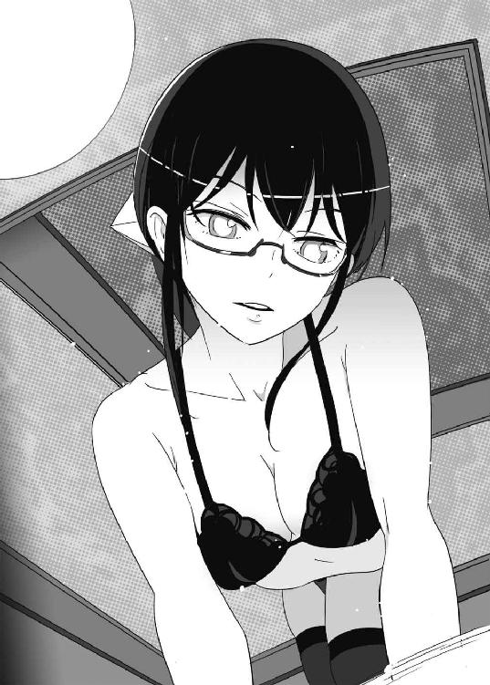
しかも七湖の瞳は切なげにうるんでいた。
肌は興奮のせいかピンク色に染まり、呼吸も荒い。すでにかなりの汗をかいていて、少女が放つ濃厚な香りに少年はめまいを覚える。
「謙吾......体が熱いの......助けて！」
七湖が凄い勢いで抱きついてきた。
「！」
確かに、七湖は謙吾に対しては積極的な娘だ。しかし、今の七湖は積極的すぎる。あまりにも不自然だ。咄嗟に謙吾は七湖の瞳を覗きこむ。瞳孔を確かめたのだ。通常よりもかなり拡大している。催眠術にかかった状態に近い──。
すぐに謙吾は見当をつけた。
──薬物か。
人間を性的に興奮させる──媚薬のような効果を持つ何かを、恐らく夕食時に飲み物にでも盛られていたのだ。薬物に対する耐性を持ち、専門の知識を有している謙吾、彩離、セルジュならすぐに気づいただろうが、七湖はまだそういった分野では限りなく素人に近い。そしてその効果が、今になって燃えあがっている。
──だが、誰が？ なんのために？
謙吾の思考を妨害するかのように、七湖は彼の唇を奪った。
「んッ......」
謙吾と七湖。二度目のキス。
前回は、少年少女らしい軽いキスだった。
でも、今回は違う。もっと激しい。謙吾は混乱して、七湖をはねのけられない。
謙吾はバランスを崩して倒れた。
七湖に押し倒されるように。
首筋に彼女の息を感じて、謙吾は全身が痺れるように気持ちがいい。
七湖は欲情したまま、謙吾の服を思い切り引き千切る。
謙吾の厚い胸板があらわになった。
「んむ......んっ......」
七湖は、今度は謙吾の胸に舌をはわせる。子猫がミルクを味わうようになめる。
「う......！」
謙吾の体が、びくん！ びくん！ と痙攣するように何度かはねた。少年には、あまりにも強すぎる刺激だった。再び、キス。唇をつなげたまま、とうとう七湖の手は謙吾のベルトを外しにかかる。
（まずい......！）
欲望に負けてはいけない。七湖は、明らかに薬品よって我を失っているのだ。
このままではまずい。何かが、謙吾の知らないところで動いている。七湖を操る卑劣な何者かがどこかにいる。そいつのてのひらの上で踊るわけにはいかない。
（ごめん、七湖......！）
謙吾は、七湖の肩をつかんで、素早く体を入れ替えた。謙吾が上になって、コマンドサンボの技で肩を固めて抑え込む。そうやって一度動きを封じてから、さらに七湖の背後をとって、慎重に彼女の首に腕を回して、裸絞めにかける。
映画やドラマでは「当て身」で気絶させるシーンがたまにあるが、あれはフィクションだ。頭や腹をなぐるのはリスクが大きすぎる。
謙吾には、安全に彼女を気絶させる自信があった。何度もやってきたことだ。
ほんの六、七秒で、七湖はぐったりと動かなくなった。
「本当に、すまない......」
謙吾は七湖を持ち上げて、ベッドに寝かせた。あごを持ち上げるようにして、気道を確保しておく。ちゃんと彼女が呼吸していることを確かめて、ようやく一安心だ。
──しかし、さすがの謙吾も、七湖に熱烈に迫られたせいでかなり冷静さを失っていた。プロフェッショナルである前に、まだ思春期の少年に過ぎないのだ。下腹部に熱いもやもやとしたものを感じて、さらに頭がぐるぐると混乱して、この部屋に隠しカメラが仕掛けられているという、当然ありそうな展開を想像することができなかった。
一連の騒動は、ずっと撮影されていた。
阿香音と別れたあとユキナは、長風呂に少しのぼせて、タオルで軽く体を拭いてから、丈の短いバスローブ姿でソファに座った。彼女にしては珍しく、行儀悪く足を伸ばしてテーブルにのせてしまう。田舎の、武術の道場で厳しく育てられたユキナだが、だらけたいときはある。
「謙吾のバカ......」と、独りごちる。
思い出すのは、狙撃のあと、学校の屋上で謙吾の口から聞いたあの言葉。
『大好きだよ、ユキナ......』
そう言われた瞬間、ユキナの頭は真っ白になって、胸には温かい感動が溢れた。幸せ、とはこういうものかと思った。謙吾のものになっていい、と強く思った。だからこそ昨晩、覚悟を決めて謙吾の部屋を訪ねたのだ。──結果は空振りだったが。
謙吾は、まるで愛の告白などなかったことのように振る舞っている。
（もしかして──本当に覚えていないとか？）
だとしたら、それは──ひどすぎる。
一度不安を覚えると、なかなか振り払うことができない。もやもやして、そわそわして、いつも地面から足が少し浮いているような気持ちだ。落ち着かない。
「まったく......」
同じナイチンゲール──岩清水ニキの件もある。東京に来てくれたはずの両親も、なぜかユキナに会ってくれない。なんだか悩みは増えるばかりだ。
ちょっとだけ泣きそうになった。
「いかん、いかん......」
と、自分の頰を軽く叩いて気合いを入れ直すユキナ。そろそろちゃんと寝間着を身につけようと立ちあがったとき、ドアのほうで物音がした。
「ん？」音がした方向に視線をやる。
ドアと床の隙間から、薄い封筒がさしこまれていた。
「......誰だ？」
怪しみつつ、ユキナは封筒を手にとった。たとえ中にカミソリが入っていようと、不死身のナイチンゲールだからまったく問題ない。普通のケガならほんの数十秒で完治し、傷痕も残らない。無造作に封筒を開けて、中身を確かめる。
入っていたのは、三枚の写真だった。
デジカメで撮影され、プリントアウトされたばかりのものだ。
「──っ！」
謙吾と七湖が写っている。七湖はセクシーな下着姿、謙吾は半裸だ。一枚目は、二人の濃厚なキスシーン。二枚目は、七湖が謙吾の胸板をなめているシーン。そして三枚目では、謙吾が上になって七湖を押し倒している。
ユキナは、後頭部をガツンと殴られたような気がした。全身から汗が噴き出して、頭が熱くなって、指先が震えた。深呼吸して、なんとか自分の気持ちを落ち着けようとする。
三枚の写真は、どれも隠し撮りだ。物陰越しのカメラワークだからすぐにわかる。
つまり──これは何かの陰謀だ。
わざわざこんな写真をユキナに送りつける人間には、何かよからぬ企みがあるに違いない。
（だけど──）
ユキナは立っていられなくなって、ぺたん、とその場に尻餅をついた。バスローブしか身につけていないので、床に触れたお尻が冷たかった。
陰謀だとしても、謙吾と七湖が愛し合っているのは事実だ。
ユキナは震えつつ携帯電話を手にとって、謙吾にかけた。が、通じない。電源を切っているのか、電波が届かない場所なのか。すぐに七湖にもかける。これも通じない。
「どういうこと......？ 謙吾......」
さっき我慢した涙が双眸から溢れた。
「ひどいよ......」
４
「媚薬......ですか？」
謙吾に事情を聞いて、こども学長は顔を真っ赤にしていた。高等部の学長で、厳島一族の天才少女と呼ばれていても、幼い彼女に性的な話は刺激的すぎた。謙吾も、七湖の名誉に関わることなので、できることなら誰にも話したくなかったが、薬を盛られたのだとしたらやはり大問題だ。
場所は、七湖の寝室だった。謙吾とこども学長が話し合う横で、七湖はのんきにすやすやと寝息を立てている。
部屋に呼んだのは、こども学長だけだ。これ以上、七湖に恥をかかせたくなかった。
「誰かが薬を盛った」と謙吾。着替える余裕はなく、ボタンが千切れ飛んだので半裸のままだ。「だが、その目的がわかりません......」
「むう......」とこども学長は考えこむ。「......盛ったとしたら......ポセイドン・アカデミーの関係者？ いたずらでしょうか......」
「いたずら、じゃすみませんよ。これは」
と、苦い顔で謙吾。
「ん......？」
七湖が目を覚ました。
「けん......ご？」
「七湖」よかった、と謙吾は胸をなでおろした。仕方なかったうえに、絶対に後を引くようなケガはさせない自信があったが、それでも女の子を自分の手で気絶させたのだ。罪の意識が大きかったがゆえに、七湖がごく普通に目を覚ましてくれたのがありがたかった。
「あれ......私......いったい、なんで......こんな......!?」
すぐに七湖は、自分があられもない下着姿だと気づいて恥ずかしがる。
「記憶が飛んでるのか」と謙吾。
「うん」七湖はうなずいた。
「俺にメールを送ったのは？」
「ごめん、それも覚えてない......私、何かヘマをやらかしたの？」
「いや、覚えていないんなら......それでいいんだ」
そのとき、こども学長の携帯電話が鳴った。
「失礼」とつぶやき、電話に出る。「はい。厳島アイナです......」
『............』
電話の相手に何か言われて、彼女の表情が「......え？」と強張った。
「こんなときに......出撃......？」
５
ギリシャにはいくつかのテロ組織が存在している。
グリークスは、スポンサーであるギリシャ政府のために、テロリストが関わった犯罪の捜査なども行っていた。
そして、そんなライバル企業グリークスにダメージを与えるために、大手民間軍事会社バビロン・メディスンは、一一月一七日革命機構や革命中軸といった組織にもつながる、超過激派の無政府主義者たちの集団を支援していた。ギリシャを拠点に、反グローバリゼーション活動として、ヨーロッパ各国に爆弾テロリストを送り込み、各国大使館に物騒な小包を送りつけたりしている。
大国が小国にエゴを押し付ける「国際化」が当たり前になった近代、無政府主義もまた急激に「国際化」しつつあった。
地中海で五番目に大きな島──クレタ島。紀元前より高度な文明を誇るこの伝説の島に、ギリシャ陸軍対テロ特殊部隊の広大な演習場を含む基地が存在する。
その陸軍基地を、無政府主義のテロリストグループが襲撃した。大規模な奇襲をまったく想定していなかったギリシャ軍は、短時間で崩れた。通常のテロは、軍の基地に攻撃を仕掛けたりはしない。警備が甘く、少ない戦力で成果があげられるポイントを狙うものだ。それなのに、なぜ今回に限って正面からの攻撃に踏み切ったのか──。
それは、テロ組織にとって心強い援軍が派遣されてきたからだ。
バビロン・メディスンが誇る、超精鋭部隊──イエニ・チェリだ。
背の低い東洋人の少女と禿頭の巨漢が、クレタ島のギリシャ陸軍基地の敷地内を歩いている。
「こういうのは、直接手を出しちゃまずいんじゃないの......？」
少女が言った。
「と、言うと？」
「ギリシャはグリークスのおひざ元。そこにあたしらイエニ・チェリが顔を出したら、相手を挑発するようなもの。ＰＭＣ同士の全面戦争なんて、本末転倒もいいところじゃない」
「全面戦争にはならんよ」
大男は言いきった。少女は怪訝な顔つきになって、
「......なんで？」
大男はおおらかに微笑み、
「すぐに、わかる」
大男は、元米軍特殊部隊デルタフォース出身のデュボア。髪の毛を綺麗に剃り落とし、双頭ロック鳥のタトゥーを入れている。
少女は、中国政府が非合法、非公式に運営していた超人兵士研究機関の出身で、名前はイップ・チー。目が大きく、髪をツインテールにした愛らしい外見だ。
二人はどちらも、最新式の強化外骨格を身につけていた。ヘルメットだけを外して、脇に抱えている。
イエニ・チェリ専用の「エンリル」だ。
地上を飲み尽くす大洪水を起こす神の名を冠した、選ばれし者の鎧。
メイン装甲の色は純白。イエニ・チェリの実力に、迷彩効果など不要だ。
格闘性を向上させるために、エンリルの手足は通常の強化外骨格よりも長めに設定されている。全体的にデザインは流線型で、Ｆ１やリニアモーターカーの車体を連想させた。細部には細かく美しい装飾が施されていて、中世騎士のマクシミリアン式甲冑のようでもあった。ＧＥＮＥＺのとほぼ同性能のＤＮＡコンピュータを搭載。ただし、あとから開発されたぶんエンリルのＤＮＡコンピュータのほうがコンパクトだ。
バビロン・メディスンが所有するエンリル・シリーズは現在四人分四台。
それぞれ、操縦者に合わせてデザインが少し異なる。
デュボアのエンリルは、高性能ジェットパックがついた空戦能力強化型。
イップ・チーのエンリルは、装甲がやや薄めだが運動性能が高い接近戦強化型。
エンリル・シリーズの標準装備として、チェーンソー状の刃に改造された超硬合金のヤタガンを腰の部分に佩いている。
「ギリシャ陸軍の新手だ」
と、デュボアがヘルメットを再び被った。それを見て、チーも同じようにする。
「なんだ、まだいたのかー」
新手──レオポルド２主力戦車と、ＡＨ－64Ｄアパッチ・ロングボウ。
「アパッチは任せろ」
「じゃ、戦車はあたしだ」
「いや、戦車も任せろ。一人で十分だ」
「ぶー、ぶー。手柄も楽しみも独り占め？」
「人殺しは楽しくはないよ、こぶたちゃん。まあ、待ってなさい。すぐに終わる」
言うが早いか、デュボアは飛翔した。彼のエンリルは、全身のあちこちに可動翼が追加されている。ＤＮＡコンピュータと直結した光ファイバー・ケーブルが、可動翼とジェットパックの推力偏向ノズルを生き物のように動かし、デュボアに通常の兵器ではありえないような空戦機動を可能にする。数キロ離れたところを飛んでいたアパッチ・ロングボウへと一瞬で間合いを詰めて、その側面に「ドン！」とはりつく。ガンガンガン！ と凄まじい勢いで連打をくわえて、アパッチの装甲を引き裂き、その回転翼をもぎ取る。
６
『ギリシャ陸軍の基地が襲撃された！ クレタ島はグリークスが守る契約になってる！』
メリナ教官が携帯電話をかけて、こども学長に焦った口調で話しかけた。
『正式な依頼だ。しかも敵はイエニ・チェリらしい』
それを聞いたこども学長は目つきを険しくして、
「......バビロン・メディスンの最精鋭部隊！」
『ポセイドン・アカデミーと海神学園の共同作戦としたい。どうか？』
「......もちろん、異論はありません......」
グリークスにしてみれば、地元の縄張りを荒らされたわけだ。自分たちの手で報復しないと、なめられる。たとえギリシャ軍でも、バビロン・メディスンとの戦いには手を出してほしくないので、しばらく厳戒態勢のまま静観してもらう。
そして、二つのチームが、出撃した。
ガンズ・オブ・ナヴァロン四名。
ビーバス＆バットヘッド五名。
ポセイドン・アカデミーが所有するＣＶ－22オスプレイ輸送機で移動する。
オスプレイは二機だ。チームごとに分乗している。
謙吾、彩離、七湖の三人はそれぞれ自分のＧＥＮＥＺを着用していた。セルジュとユキナは、体にフィットする黒いアサルトスーツにタクティカルベストといういでたち。不死身だがそれ以外の特殊能力を持たないユキナだけが、ＨＫ４１７アサルトライフルで武装している。飛行中の貨物スペース内に流れる空気は重苦しい。
「............」
謙吾、七湖、ユキナの三人が目も合わせず、一言も口をきこうとしないのだ。
──謙吾は七湖とあんなことになって気まずい。なんだかユキナに申し訳ない。
──七湖は謙吾に何をしたのかわからなくて申し訳ない。
──ユキナは謙吾と七湖に対して、明確すぎるほど怒っている。
そんな三人に巻き込まれて、セルジュと彩離も居心地が悪い。
チームの責任者である大迫先生がオスプレイに同乗していた。危険な戦いになるので、こども学長はポセイドン・アカデミーに残っている。
「なんだか、ヤな流れだねえ......」と、大迫が独り言のようにつぶやく。「チームワークがウリなのにさあ、ウチの特進クラスは。バビロン・メディスンの動きも不自然極まりないし、無事にすめばいいんだけど、みんな用心を......」
大迫の言葉を遮るように、無線を介してメリナ教官の声が機内に響いた。
『クレタ島にいるイエニ・チェリを殲滅する。こちらの情報部によれば、イエニ・チェリは四人。そのうちの何人がクレタ島に姿を現したのかはまだ不明だが、ＧＥＮＥＺ五台で苦戦するとは思えない。ただし、油断はするな！』
二機のオスプレイが、二〇〇〇メートルを超えるクレタ島の山脈上を通過して、イダ山の麓にあるギリシャ陸軍基地に向かっていく。
クレタ島は伝説の島だ。神話の時代、ミノスという王がいた。彼は巨大な迷宮を作りあげて、そこに牛頭人身の怪物──ミノタウロスを閉じ込めた。三七〇〇年前の宮殿は、復元されて現在も観光名所となっている。
そして、この島は戦場でもあった。第二次世界大戦中、ドイツやイタリアの軍隊に激しく抵抗した島の一つだった。ギリシャ陸軍特殊部隊の基地が建てられたのは、そんな土地柄を反映した結果だ。
唐突に、オスプレイの機内に敵の接近を告げる警報が鳴った。
『イエニ・チェリのデュボア！』
メリナ教官が驚きの声をあげ、貨物スペースにまで響き渡った。
エンリルを使って飛翔するデュボアが、二機のオスプレイに急接近していく。
デュボアはその手に、アパッチ・ロングボウ戦闘ヘリコプターの回転翼を握っていた。もぎとって、本体のほうは地上の戦車に叩きつけてやったのだ。
「思っていたより到着が早い！」
デュボアは、心底楽しそうな声で言う。
「褒美だ！ いいものやろう！」
空中で反回転しつつ、デュボアはヘリの回転翼をぶん投げた。それは巨大な手裏剣と化して、ガンズ・オブ・ナヴァロンが乗りこんでいるオスプレイを傷つけた。主翼右側についているターボシャフトエンジンが半壊したのだ。
「！」ガンズ・オブ・ナヴァロンのオスプレイは、たちまち機体の制御を失い、バランスを崩して黒煙を吐きながら落下していく。
「まずい......！」と、大迫がうめくように言った。「彩離！」
「がってん！」
彩離はＧＥＮＥＺのヘルメットを被って、立ち上がった。空中戦なら、彼女の出番だ。彩離は、貨物スペースの隅に積まれていた武器を手に取った。右手にＧＥＮＥＺ用の一二・七ミリ口径機関銃、左手に歩兵用の対空ミサイルを構える。
大迫は、オスプレイのパイロットに、貨物スペース後部のドアを開けるように命じた。機外との気圧差で突風が吹き荒れたようになる。謙吾と七湖もヘルメットを被る。高高度で酸素が薄くても、ユキナやセルジュには影響がない。
「じゃ、いきます！」と彩離。
「必ず地上でまた会おう！」と謙吾。
「もちろん了解！ すぐに片付ける！」
開いたドアから飛び出していく彩離。
──ほんの数秒、遅かった。
デュボアのエンリルは、二〇ミリ機関砲を装備していた。
空中で腰だめに構えて、発砲する。機関砲の銃口にはセンサー類とリンクした照準用カメラがついているので、腰だめでも命中率は安定している。
ビーバス＆バットヘッドに、次々と二〇ミリの砲弾が突き刺さった。焼夷徹甲弾だ。オスプレイを無数の閃光が貫通し、たちまち機内のあちこちで火災が発生する。何発かが謙吾や七湖のＧＥＮＥＺに当たって、耳障りな、甲高い音を立てる。
運悪く、二人のパイロットは砲弾を浴びて助からなかった。一人は頭蓋骨が砕け散って周囲に脳を散らかし、もう一人は両足が同時に吹き飛んでショック死する。燃料タンクに引火しなかったのが不幸中の幸いといったところか。
謙吾たちを乗せたまま、オスプレイは墜落する。
７
地面に激突した凄まじい衝撃のあと、オスプレイの胴体が真ん中のあたりでぽっきりと折れた。全員が外に放り出されそうになって、咄嗟に謙吾は大迫をかばった。機内にいる人間の中で、死ぬ可能性があるのは彼だけだった。謙吾と七湖はＧＥＮＥＺを着用しているし、セルジュはゴーレムで、ユキナは不死身なのだ。
衝撃で、七湖とセルジュが機体の割れ目から外に飛び出した。「！」しかも、半分になったオスプレイは地面の上を滑っていて、一気に数百メートルも離れてしまう。
「くっそ！」
謙吾は、大迫を包み込むようにして体を丸めて衝撃に耐えた。そのおかげで大迫は死なずにすんだが、それでも負傷は避けられなかった。歪んだ機体に足を挟まれて、右足の骨が折れていたのだ。
「すまん、謙吾！」
「こんなとこで先生に死なれちゃ困ります！」
オスプレイは、ギリシャ陸軍基地の敷地内に落ちたようだ。しばらく惰性で滑って火花を散らしていたが、破壊された戦車にぶつかってようやく止まった。見渡す限りの死体と残骸。短時間で基地は、米軍の集中爆撃を浴びたようになっていた。
「ユキナ、大丈夫か......!?」
「............」
ユキナは声を出さず、ただうなずくだけだ。謙吾は溝を感じた。──もしかしてユキナは、七湖とのことを知っている？ そして、何か誤解をしている？ だが、なぜそんなことに？ 誰がユキナにそのことを教えたのか？
彩離は、イエニ・チェリのデュボアと激しい空中戦を繰り広げている。
「出てこい、ＧＥＮＥＺ」
謙吾たちの前にも、もう一人のイエニ・チェリがやってきた。もう二度と飛ぶことのないオスプレイの窓から外を覗いて、大迫が「イップ・チーだ......」とつぶやく。「気をつけろ......ナリは小さいが、あいつの接近戦は本物だぞ！」
「......了解！」
謙吾は大迫をオスプレイの機内に残し、自分は外に出た。
「グリークスのＧＥＮＥＺを持ち帰れば......」
エンリルで武装したイップ・チーは、独り言を口にしつつ、謙吾に向かって大股で近づいていく。
「きっとみんな、チーのこと褒めてくれるよね」
強化外骨格をつけているというのに、まるでスキップのように楽しげな足取りだ。
「また、新しいぬいぐるみも買ってもらうんだ♪」
イップ・チー専用の武器として、四本の柳葉刀が背中に用意されていた。
材質は特殊合金とセラミックの複合材。
──同じ武器を四本も、どう使う？
謙吾は怪訝な顔つきになった。
チーは柳葉刀を二本抜いて、両手に構える。
間合いが詰まった。
「！」
いや──謙吾も気づかないうちに、いつの間にか詰まっていた。
チーの柳葉刀が電光石火の勢いで左右に閃く。
ハサミで斬るように、謙吾の首が狙われる。
フォンッ！ という風を切る音。
謙吾が後退するのがあと〇・一秒遅れていたら、首が飛んでいた。その証拠に、ヘルメットの顎のあたりが柳葉刀に斬られて、端っこのパーツが宙を舞っている。
大迫の言っていた通りだ。
ヘルメットの拡声器越しに聞こえてくる可愛らしい声に騙されてはいけない。
イエニ・チェリの一人──バビロン・メディスンの最精鋭なのだ。
「く！」
謙吾は踏ん張って、ＧＥＮＥＺの左右前腕部に収納されていた牙を限界まで伸ばした。
少女を傷つけたくはないが、殺されるわけにもいかない。
手加減して勝てる相手ではなさそうだが......できることなら、殺さず生け捕りにしたい。
「おおッ！」
謙吾は、右の牙でエンリルの足を狙う。敵は動きが素早い。とりあえず、その長所を奪っておきたい。
チーは、謙吾の牙を左手の柳葉刀で打ち弾く。
謙吾は牙を連打。
チーが斬り返す。手数はほぼ互角。轟音が鳴り、火花が散る。
「じゃあ、ほんのちょいとだけ本気出す！」
チーが叫んだ。
すると──。
彼女の背中に余っていた二本の柳葉刀が、宙に浮いた。
まるで、見えない糸で吊られているかのように。
「──ッ！」
特殊能力──念動力──を使った中国古代の秘法「操剣術」だ。
極端に強い精神力で磁場を操り、手を使わずにものを動かしたり破壊するのが、念動力。その力が、柳葉刀を力強く振り回し、謙吾に襲いかかる。
イップ・チーは、中国政府が非合法、非公式に運営していた超人兵士研究機関の出身という情報がある。そこで遺伝子に「植えつけられた」力なのかもしれない。人為的に。ただ兵器として販売するために──。
謙吾は、チーと、もう一人透明人間と戦っているような気分になる。チーの二刀流。操剣術で動きまわる二本の合金製柳葉刀。合計四本。それが、まったく無駄のない連係攻撃を仕掛けてくる。謙吾は攻めることができない。防御するので手いっぱいとなる。
──なんてヤツだ！
８
彩離は、イエニ・チェリのデュボアと空中戦を演じている。
高度一五〇〇メートル。
背中のジェットパックが亜音速で彩離を飛ばし、全身に凄まじいＧをかけている。デュボアを追いかけて、追い越し、反転しつつ、右手に構えたＧＥＮＥＺ用の一二・七ミリ口径機関銃を連射する。五発のうちの一発の割合で入っている曳光弾が、空中に美しい光の弾道線を次々と描く。しかし、デュボアは急上昇して彩離の攻撃をやり過ごす。そして、いつの間にか彩離のほうが後ろをとられている。
低空、低速域での機動性能は──デュボアのほうがやや上か。
「ちっ！」
彩離は舌打ちしつつ、体をひねって後方の敵を狙う。航空機には不可能な、ＧＥＮＥＺならではの射撃だ。
一二・七ミリでは、敵の強化外骨格に致命的なダメージを与えることはできないだろう。だが、空戦はデリケートなものだ。可動翼を一つ傷つけるだけでも、運動性能に影響が出る。
──ただし、その条件はこちらも同じだ。デュボアの二〇ミリ機関砲でＧＥＮＥＺが大破することはないが、空戦機動に関わる部品は危うい。
──短期決戦しか！
彩離は、左手の歩兵用対空ミサイルでデュボアを狙った。スティンガーをグリークスの技術部が独自に改良したものだ。撃った誘導ミサイルは、赤外線画像探知式で敵を自動追尾する。
彩離は空中で制動をかけ、失速寸前まで高度と速度を落とし、デュボアに対して狙いをつけて、ミサイルのトリガーを絞る。
バシュッ！ と凄まじい音を立てて、対空ミサイルが飛翔する。速度はマッハ二だ。
「......ふん」
デュボアは、エンリルに装備されたチャフ、フレアを散布した。
チャフは、ミサイルのレーダーを攪乱する金属片。
フレアは、赤外線探知を惑わす発熱体だ。
最新の赤外線画像探知は、チャフやフレアに強い。しかしそれを見越して、デュボアのフレアはミサイルのカメラに焼きつくほど強い光を放ち、まるで空中に巨大な傘を描くかのように散布された。閃光と白煙がデュボアのエンリルを覆い隠す。
彩離が撃ったミサイルは、照明弾のように燃焼するフレアの一つに吸い込まれた。
大爆発が起きて衝撃波が広がる。破片も砲弾のような勢いで飛び散るが、デュボアは無傷で切り抜ける。
ただ──。
「あんたなら、ミサイルを防ぐと思ってたよ！」
彩離は、一歩先を読んでいた。
敵がミサイルの回避に気を取られているうちに、急速に接近していた。
足の爪で、蹴りつける。
一二・七ミリの弾丸とは比べ物にならない、大打撃を与えることができるはずだ。
ところが──。
「だろうな」
デュボアは、二歩先を読んでいた。
「知ってたよ」
突っ込んでくる彩離を迎え撃つために、デュボアはすでにチェーンソー・ヤタガンを鞘から抜いていた。彩離はまずい！ と焦るが、ジェットパックで勢いがついているので蹴りをキャンセルできない。空中ですれ違いざまに、デュボアのヤタガンが一閃。彩離のＧＥＮＥＺの背中から伸びている、姿勢制御用の翼が吹き飛んだ。
「くっそ！」
相手を甘く見ていたわけではない。ただ、向こうのほうが先読みが鋭かった。迎撃のタイミング、位置取り、どれをとっても彩離に勝ち目はなかった。
──まるで予知能力ジャン！
右側の翼を失って、彩離はまっさかさまに落ちていく。
全力で立てなおそうとするが、落下死を防ぐのがやっとだった。
結局、彩離は左肩から地面にめり込んだ。
「く！」
ギリギリまで重力に抵抗していたおかげで、ダメージは最低限ですんだ。──とはいえ、左肩は脱臼しているし、全身の装甲にヒビが入っている。格闘戦で挽回──というふうにはいきそうにない。
そんな彩離の前に、デュボアが降り立つ。
「変な工夫は、しないほうがいい」
彩離は必死に立ち上がる。
「まだ、やる気なら仕方な──」
「待てや！」
チェーンソー・ヤタガンを振りかぶったデュボアに、オスプレイから放り出されて謙吾とはぐれていたセルジュが横から飛びかかった。ぶん殴るように、いきなりデュボアに火球を投げつける。ゴーレムの不完全な魂を補完する、炎の精霊の力だ。
その攻撃を、まるで予知しているかのように、デュボアはあっさりかわす。
「噂通りの不思議なゴーレムだ」
そう言って、デュボアはセルジュに値踏みするような視線を送った。
「そっちこそ。なんや妙な力をもっとるな......」
「セルジュ！」
「彩離、もう大丈夫や！ これで二対一やで」
「別に。それがどうした？ 気にならんよ」デュボアは自信満々というより、どこか物憂げで、億劫そうな感じさえした。「必死な君らには申し訳ないが......俺がこんなところで負けるなんてありえない」
９
謙吾の牙が、念動力──操剣術──で高速回転する柳葉刀に弾かれる。
空しく火花が散って、謙吾は無防備な腹部をさらし、イップ・チーが「本物の」右手に握った柳葉刀で横に薙ぐ。ＧＥＮＥＺの装甲が刃の侵入をある程度防ぐが、バビロン・メディスンがその総力を結集して作りあげた強化外骨格──エンリルのパワーは凄まじく、腹を切られて内部で出血する。なんとか内臓は無事のようだが、傷は深い。
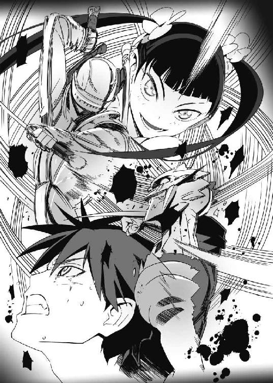
「はい、次！」
と、チーは謙吾の右肩口に、左手の柳葉刀を突き刺した。装甲を貫き、深々と突き刺さって、その先端は骨まで達した。動きが止まった謙吾の胸に、チーはエンリルの長い足を振り回して強烈な後ろ回し蹴りを打ち込む。合金の激突音とともに、謙吾の体が吹き飛ぶ。
「ぐッ！」
蹴りでへこんだＧＥＮＥＺ装甲に胸部が締めつけられて、息苦しい。謙吾の胸骨や肋骨がミシリ、と悲鳴をあげる。それでも吹き飛ばされながら、なんとか空中で姿勢を制御して、一回転しながら四つん這いに着地する。ＧＥＮＥＺの両手両足関節部分から、一斉に不調を示す火花が散る。
「勝負あったね！ ＧＥＮＥＺ！」
歓声をあげるチーに、
「それは違うぞ」
と、謙吾は冷水を浴びせるように言った。
「──ん？」
「間合いをとるために、わざと今の後ろ回し蹴りをくらった」
謙吾は痛みに耐えて苦い笑いを浮かべる。
「向こうに、仲間が見えたからな」
「──ッ!?」
スクアロドン型ＧＥＮＥＺ、バットヘッド３──布施七湖。
グリークスが独自開発した水陸両用の最新型アサルトライフル「ブラダマンテ」を装備している。口径五・五六ミリ、長さ四〇ミリというケースレスの特殊ニードル状ライフル弾を、電気発火で射出する。
七湖のＧＥＮＥＺは、分隊支援と地域制圧を得意とする重装タイプ。その両肩には「メタルストーム」という兵器が装着されている。何百本という細いバレルから、重金属弾を一斉に散弾銃のように撃ちだし、広範囲にダメージを与える強力な武器だ。
半分で折れたオスプレイから放り出された七湖は、一度完全にはぐれてしまったが、ヘルメット内のディスプレイに表示されたＧＰＳ対応地図の指示に従って、チーと戦う謙吾のもとに駆けつけてきた。
謙吾がチーに吹き飛ばされた直後、七湖はメタルストームを発射した。
重金属弾の雨が、チーに降りかかる。流れ弾で、基地を舗装していたアスファルトが柱のように盛り上がる。
ガガガガッ！ と火花が散って、さすがのエンリルも無傷とはいかなかった。
──今のうちだ。
謙吾はヘルメットを脱いだ。
七湖が時間を稼いでくれた。
（ギルガメシュ化──不死身になって、決着をつける）
「ユキナ！」
謙吾は叫んだ。ユキナもオスプレイの外に出て、戦いに参加しようとアサルトライフルを構えていた。もちろん、七・六二ミリ口径のライフル弾なんてエンリルには通じない。謙吾が欲しているのは、ナイチンゲールの力だ。
謙吾はユキナに近づいて、彼女を片腕で抱き寄せる。
その瞬間──ユキナの脳裏に例の写真が浮かんだ。
「──っ！」
そして、反射的に謙吾から顔をそむけてしまう。
唇を重ねなければ、ギルガメシュ化は発動しない。
しかしユキナは、それをためらった。
謙吾が「あっ」と驚いた直後、
「仲間割れなのかな？」
チーが再び肉迫してきた。
「ギルガメシュとナイチンゲールがそれじゃだめじゃーん」
エンリルは七湖のメタルストームをくらって傷ついていたが、戦闘続行が不可能なほどではなかった。チーの柳葉刀が、謙吾の背中を斬った。操剣術で宙に浮いた二本が、ユキナの腹を引き裂き、右腕を切断した。
「謙吾......！」
「ゆき、なッ！」
謙吾は倒れた。ＧＥＮＥＺの中身はすでに出血で溢れ返っている。
ユキナは、自分の傷から内臓がこぼれださないように両腕で押さえようとして、右腕がなくなっていることに愕然とした。ぼとりと地面に落ちた自分の腕を見るのは、想像以上にショッキングな光景だった。
ここで、ようやく──ポセイドン・アカデミーのガンズ・オブ・ナヴァロンがやってきた。彼らのオスプレイも墜落していたが、乗員は全員無傷に近かった。ただ、落ちた場所が悪くて参戦に時間がかかったのだ。
レオンハルトのウーリー・マンモス型ＧＥＮＥＺが、チーに機関砲の猛連射を浴びせる。
彩離とセルジュの救援には、シーラのプロトタイプ・ティラノが向かっている。
「数が増えたなあ......！」
チーは舌打ちした。彼女の耳に、デュボアから無線連絡が入る。
『チー、時間切れだ』
「もう少し！」
『ここまでだ。今日はここまででいい』
デュボアの言う通りだ。今日は「最後まで殺し合う」予定ではなかった。十分に目的は果たした。イエニ・チェリが世界最強のチームだとグリークスの連中に示すことができた。チーとデュボアはそれぞれ大量の煙幕弾をばらまいて、戦場からの離脱を開始した。グリークス側に、二人を追いかけるだけの余裕は残っていなかった。
第六章 バビロン・メディスン、ユニット１
１
「林も張鐘も、何を考えているのやら......」
梓馬亜佑美が、少し苦い顔で言った。民間機に擬装したグリークスの輸送機内だ。その客席で、亜佑美の隣には大牙涼羽がいる。輸送機は、ギリシャのエレフテリオス・ヴェニゼロス国際空港に向かっている。そこで海神学園の情報部が密かに現地で調達した民間のヘリコプターに乗り換えて、ポセイドン・アカデミーに短期留学中の謙吾たちに会いに行く。
「こんな可愛い女の子を事件に巻き込むなんて、反対だなあ」
亜佑美は長身で肉感的なボディの持ち主。腰まであるロングの黒髪に、いつも潤んでいるような大きな瞳。嫌でも他人の視線を集めてしまう少女だ。
授業中は制服を着ているが、それ以外はほとんどメイド服で過ごしている。メイド服は極端なミニスカートで、膝上のニーソックスにはリボンがついている。
「可愛い、と言っていただけるのは嬉しいですけど......」
と、涼羽は頰を赤らめて、しかし少し怒って頰を膨らませる。
「兄が危険なら、妹の私が動くのは当然だと思います。林さんや張鐘さんは、もうマークされている。怪しいのが『本社』なら、正規のルートや人員を使うことはできない。通信はブロックされているし、盗聴の可能性もある。──でも、私が『こども学長に、研究の進展について話がある』という名目でギリシャに向かうのなら、まったく不自然ではない」
「もちろん、わかってますよ。他にあまりいい手がないことも」亜佑美は窓から雲海の果てを眺めつつ言う。「ただ、消去法でこの作戦が採用されただけで、安全とは言い難い」
「それは、まあ......」
亜佑美の意見にうなずきつつ、でも、と涼羽は言葉をつなぐ。
「ある程度の危険は覚悟していますし......」
「もしも私が謙吾を狙撃した『犯人』なら、その妹さんが動けば見逃しませんよ」
「............」
「あらあら、ごめんなさいね......不安がらせちゃって」
涼羽の表情が暗く沈んできて、亜佑美は反省して少し舌を出した。そして、涼羽をぐいと抱き寄せて豊かな胸で頭を挟むようにする。
「お姉さんが守ってあげる」
「あ、亜佑美さん......！」
「用心に用心を重ねているから、大丈夫」
彼女の胸で窒息しかけて、涼羽は顔を真っ赤にして「すぽん！」と顔を離した。
「武装メイドの誇りにかけて。涼羽様を無事にお兄さまのもとへ送り届けてみせます」
亜佑美は、急に畏まった口調で言った。そして涼しげに微笑み、軽く頭を下げる。
２
バビロン・メディスンの精鋭イエニ・チェリとの初対決は、グリークスの精鋭ビーバス＆バットヘッドの惨敗に終わった。ポセイドン・アカデミーのガンズ・オブ・ナヴァロンが駆けつけてこなければ、皆殺しにされていたかもしれなかった。しかも、イエニ・チェリは四人のうちの二人しか来ていなかったのだ。敵がもしも四人全員そろっていたら──。想像するだけで、肝が冷える。
ユキナの負傷は、すぐに完治した。ナイチンゲールは何もしなくても不死身だ。しかし、ギルガメシュになれなかった謙吾は、すぐに医療用ヘリでポセイドン・アカデミーの敷地内にある付属病院に搬送された。肩を脱臼した彩離、足の骨を折った大迫も一緒にだ。
ユキナが、謙吾を不死身にしなかった──。これが、敗因の一つであるのは明らかだった。
ポセイドン・アカデミーの学生寮に帰還後、ユキナはこども学長・厳島アイナの部屋に呼び出された。
「......どういうことですか？」
ソファに座ったこども学長は険しい顔つきで腕を組んでいた。ユキナはその前に立って、ひどい失敗をやらかした優等生のように「気をつけ」の姿勢をとっている。
「なぜ、謙吾を助けなかったんですか？」
「理由は......」
言いかけて、ユキナは唇を嚙んだ。本当のことを口にすれば、自分がどんどん惨めになっていくような気がした。謙吾と七湖がイチャついていたから、腹が立って助けなかった──なんて話、自分でも信じられないほど情けない。こんなに自分自身に絶望し、イヤになったのは生まれて初めてかもしれない。
「......言いたくありません」
「みなの命がかかっているのに、個人的な感情を優先するつもりですか？」
「......それは、その......」
もちろんユキナだって、仲間が死ぬところなんて見たくはない。
──それでも、あのときは、体が勝手に拒んでしまった。
しかし、こども学長の言い方にユキナは新たな苛立ちを覚えた。
「私は......謙吾を不死身にするための『道具』ですか？」
「──っ」
ユキナの反論に、こども学長は目を丸くした。
「ギルガメシュのためなら、私の『個人的な感情』はまったく無視するんですか？」
「それは......」
こども学長がうつむいて、「しまった」という顔つきになった。
「反省はしています。二度と同じことが起きないように気をつけます」
鋭くそう言って、ユキナは踵を返した。こども学長は呼び止めることもできない。
「失礼します」
苛立ちと自己嫌悪に挟まれて胸が押しつぶされそうになる感覚に苦しみながら、ユキナは自分の部屋に戻った。
──こども学長に苛立ちをぶつけてしまった。
本当は、自分にも非があることがわかっている。
ユキナは、謙吾に対して腹を立てている。その怒り自体はどうしようもない。ある程度、正当な怒りだと思っている。
だが、謙吾を殺しかけたという罪の意識がそれを上回っていた。
──もう、謙吾たちに顔を合わせられない。
ドアをノックする音が聞こえた。誰だろう？ と怪訝に思ってユキナはインターホンのモニタに向かう。こども学長だろうか？ それとも謙吾？ ユキナは、どちらにも会いたくない気分だった。
「いいか」
インターホン越しに話しかけてきたのは、ポセイドン・アカデミーのメリナ教官だった。ユキナは慌ててドアを開けた。「どうも......メリナ教官」ユキナは一礼しつつ、戸惑いを隠せなかった。意外な来客だった。
「岩清水ユキナ──ナイチンゲールだな？」メリナ教官は、いきなり本題を切り出した。「単刀直入に言う。ウチにこないか？」
ユキナは一瞬意味がわからず首を傾げる。「......はい？」
「ポセイドン・アカデミーに、転校してこないか、という話だ。聞けば、今日の敗北はチームワークの不調が一因だったそうだな」
「............」
チームワークの不調、と言えば聞こえはいいが、実態は謙吾のだらしなさであり、ユキナの子供っぽい嫉妬とわがままだ。こんなことでチームに亀裂が入ってしまって、もう逃げ出したい気分なのだ。
──転校。
急な話だ。ピンとこない。だが、その言葉はユキナの弱った心の隙間にするすると入りこんできた。ユキナが居心地の悪い場所から逃げ出すための口実が、絶妙のタイミングで目の前にぶらさがったのだ。ニンジンを突きつけられた馬ではないのですぐには飛びつかないが、一考する余地はある申し出だと思えた。
メリナ教官は続けて言う。
「何か辛いことがあるなら、私のチーム......ガンズ・オブ・ナヴァロンの連中が相談に乗る。返事は急がなくていい。ただ、考えておいてくれ。──どこが自分の居場所なのか。どこにいるべきなのか」
３
亜佑美と涼羽を乗せた飛行機が、ギリシャのエレフテリオス・ヴェニゼロス国際空港に到着した。国際線到着ターミナル、シェンゲン協定非加盟国用Ａエリアの搭乗券チェックポイントを抜けて、手荷物受取所に寄ってから税関をすませる。
ちなみに、亜佑美は手荷物受取所で大きなスーツケースを回収していた。それは、海神学園特進クラス用の擬装武器運搬ケースだった。二重底になっている上に、Ｘ線で透視してもごく普通の衣類しか確認できないように特殊なフィルターがはられているのだ。このケースを使えば、ほとんどの国に危険な銃器類を持ちこめる。
交通案内所や旅行会社カウンターの前に、ちょっとした喫茶店のような待ち合わせ用のポイントがあった。そこで、先に現地入りした海神学園特進クラス情報部と合流し、乗り継ぎカウンターで手続きを済ませて民間のヘリコプターに乗り換える予定だ。
情報漏れを防ぐために、ポセイドン・アカデミーにはまだなんの連絡も入れていない。スパルタに入って、そこで初めて涼羽の到着を告げれば、相手が何を企んでいても手を打つ時間はないだろう──そういう計算だ。
「学長厳島アイナに緊急報告」という建前なら、訪問を許可しないわけにもいかない。今のところ──少なくとも表向きには──ポセイドンと海神は「友好的」な関係なのだから。
それにしても、と亜佑美は眉を軽くひきしめた。ファンタスティック・スリーから「狙撃犯はポセイドン・アカデミーの人間が怪しい」と言われて、その証拠も見せてもらったが、なぜ本社の姉妹校がそんなことをしたのかさっぱり理由がわからない。謙吾を撃ち、しかもそのあと短期留学生として招待しているのだ。何が安全で、誰が味方で、何が危険なのか──亜佑美でさえ混乱しかけている。
「待ち合わせ相手、遅いですね」
周囲をきょろきょろと見回してから、涼羽が言った。
亜佑美も視線を左右に走らせた。
「ここで、情報部の人間が待っているはずなんですが......」
「こないよ、そいつは」
「！」
いきなり二人に声をかけてきたのは、金髪でハンサムな青年だった。
「......ポセイドン・アカデミーの生徒さんが、なぜ？」
と、亜佑美は訊いた。すぐにポセイドンだとわかったのは、彼が制服を着ていたからだ。
「わかっているはずだ。とぼけないほうがいい、美しいメイドさん」
「俺はポセイドン・アカデミーの戦術チーム──ガンズ・オブ・ナヴァロンのグスタフ・ヴァイスマンだ。暗号名マンマ・ミーア２」
「『こない』とはどういう意味でしょう？」
亜佑美はニコニコと営業スマイルだ。
「きみたちの動きは筒抜けで、もう殺しちゃったってことさ」
「──え？」
涼羽が戸惑う。「殺しちゃった」というシンプルな言葉が理解できていない。いくら多少の修羅場はくぐったとはいえ、涼羽の感覚は限りなく一般の人間に近い。それとは対照的に亜佑美は、すでに戦う人間の目つきに変わっている。擬装武器運搬ケースのロックをさりげなく外しておく。
「今日はいい『星』の加護がありそうだ」
そう言って、グスタフはいきなり服を脱いだ。その背中には、見事な西洋風ドラゴンのタトゥーが入っている。ただのタトゥーではなく、皮膚に直接光り輝くプラチナのピアスが埋め込まれていて、彼の言葉通りまさに星のようだった。
「占星術によれば俺を守護するのは『りゅう座』。ドラゴンは俺のシンボルだ。俺の骨格はすべて、中世から保管されていた『ドラゴンの牙』に交換されている」
「ド......ドラゴン？」
涼羽が目を白黒させた。
「まさか、架空の生物だと思ってるんじゃないだろうな？」グスタフは、余裕たっぷりに微笑する。「竜の牙で、俺にはこんな芸当ができる」
グスタフが腕を振ると、その指先から小さな物体が飛び出した。
骨のかけらだ。
よく見れば、彼の人差し指と中指の先端には、傷のように裂け目が開いていた。それは、骨を射出するための銃口だった。
「危ない！」
亜佑美は咄嗟に涼羽をかばった。グスタフが発した骨が、弾丸のような勢いだったからだ。亜佑美が突き飛ばしたおかげで、骨はすべて空港の床に突き刺さる。
「ここから、本番だ」
グスタフはパチン！ と指を鳴らした。
彼が放った骨が、たちまち膨らみ、人の形になっていく。
人体の骨格標本が、そのまま歩きだしたように見える。
「竜の牙の骸骨戦士の秘術」と、グスタフがつぶやく。
居合わせた空港の利用客たちが悲鳴をあげた。
骸骨戦士の数は、八体。正確な人体の骨格ではなく、すべてのパーツが攻撃的に尖っている。指の骨にいたっては、ほとんど獣の爪だ。そんな骸骨戦士たちが、一斉に亜佑美と涼羽に襲いかかる。
「──ごめんあそばせ！」
と言って、亜佑美は擬装武器運搬ケースを思い切り蹴った。ロックは解除されていたので、二重底まで一気に開く。そこに隠されていたのは、二丁の拳銃、二丁のサブマシンガン、一丁のアサルトライフル、そして手榴弾、閃光手榴弾、煙幕弾が数個ずつという充実した武器類だ。
彼女はただのメイドではない。武装メイドなのだ。
亜佑美は開けたケースから、照準用のドットサイトがついたイスラエル製のブルパップ・アサルトライフル「タボール」を取り出し、両手で構えて指きりの短連射を繰り返す。
アサルトライフルを全自動で引き金を引き続けると、あっという間に弾切れを起こしてしまう。そこで、連射を三、四発ずつに区切り、そのたびに標的を切り替えて、効果的な射撃を行っているのだ。ダダダダンッ！ と激しい銃声のあと、空薬莢が散らばる。
グスタフが作りあげた骸骨戦士は、弾丸を跳ね返すほどの強度は有していなかった。弾丸が骨をへし折り、打ち砕く。しかし骸骨戦士は、腕を失い、頭蓋骨に穴が開いたくらいでは前進をやめない。
そこで亜佑美は、狙いを骸骨戦士たちの足の骨や股関節、腰椎のあたりに切り替えた。とりあえず、近寄ってこなければいいのだ。たちまち数体の骸骨戦士が崩れ落ちて、床と激突する。
「動くな！」
と、空港警備の警察官たちが駆けつけてきて、拳銃を構えた。グスタフは慌てず騒がず、腕を振って骨のかけらを飛ばし、さらに一〇体近く骸骨戦士を増やす。
「！」
骸骨戦士たちが警察官に飛びかかって、その喉笛や腹部を、鋭い指の爪で引き裂いていく。鮮血がピュッ、ピュッと噴き出す。内臓を乱暴に引きずり出す。
「動く骸骨に、大量の死体......まるでスプラッタ映画のワンシーンですね」
タボールを撃ちながら、亜佑美は落ち着いた声で言った。
「そんな冷静な......！」
と、涼羽は半ば悲鳴のような声をあげる。
タボールの弾丸が切れた。すかさず亜佑美は飛び込み前転で擬装武器運搬ケースに近寄り、タボールを置いてかわりにサブマシンガンを手に取った。左右の手に一丁ずつだ。銃種はロシア製ＳＲ２Ｍ「ＶＥＲＥＳＫ」。拳銃を一回り大きくしただけのコンパクトなサブマシンガンだが、薄い防弾ベストなら簡単に貫通する九ミリ×二一の特殊弾を使用する。
亜佑美は、二丁のサブマシンガンを振り回し、大量の破壊力をばらまいた。骸骨戦士たちをなぎ倒し、そのままグスタフ本人にも何発も弾丸を叩きこむ。
「俺の骨に弾丸は通じないよ」
グスタフは平然としていた。
骸骨戦士たちは、彼の骨が膨張したもので、強度は「薄まった」状態である。だから、弾丸で破壊することができる。しかし、そのおおもとであるグスタフの骨格は「竜の牙」本来の強度を保っている。
グスタフは、亜佑美に向かって大胆に踏み込んだ。
「！」
亜佑美は、左右のサブマシンガンをグスタフに突きつけて、至近距離で連射した。発射炎が瞬き、彼の制服が焦げる。残弾すべて彼の上半身に撃ち込むが、頭蓋骨や胸骨を貫通したものは一発もなかった。
咄嗟に亜佑美はサブマシンガンを放り捨てて、後ろ回し蹴りを繰り出した。彼女には、躰道の心得がある。一回転した亜佑美の蹴りが、グスタフの頭部に炸裂する。
「......くっ！」
亜佑美の足が、じいんと痺れた。まるで鉄柱を蹴ったような感触だった。
それでも亜佑美は諦めず、グスタフの手首をつかんでひねりあげようとした。骨が頑丈だというなら、関節を外してしまえばいい。両手両足の関節を外す。それで終わりだ。
亜佑美はグスタフの右腕をつかんだまま、ジャンプした。飛びついて、両足で挟んで、腕ひしぎをかけていく。
ところが──。
「いや、それは甘いよ。メイドさん」
グスタフの関節は、まるで溶接したかのようにびくともしなかった。骨だけではない、筋肉も常人よりはるかにたくましい。グスタフは飛びついてきた亜佑美の全体重を、右腕一本だけで軽々と支えてしまう。
グスタフは、右腕の亜佑美を思い切り床に叩きつけた。
「亜佑美さん！」と、涼羽が絶叫。
「ぐ、かはッ......！」
床のパネルにひびが入るほどの衝撃に、亜佑美の口から苦悶のうめき声が漏れる。
終わったかと思われたが、亜佑美の目はまだ闘志に溢れていた。
さっきサブマシンガンを取り出した際、亜佑美は手品師のような早業で、一丁の拳銃を太腿に巻いたホルスターにさしこんでいた。護身用のＳＩＧ・Ｐ２３０拳銃だ。亜佑美はその拳銃を抜いて、仰向けの姿勢で両手で構えて、グスタフの眼球を狙って引き金を絞った。ダンダンダンダン！ と凄まじい勢いで、二秒間で一気に八発。弾丸切れのＰ２３０はホールドオープン。一発がグスタフの右目に直撃した。
「......なっ！」
グスタフの体が後方によろめく。
どんなに頭蓋骨が頑丈でも、眼球からなら脳まで届くはずだ。
やった、と亜佑美は思わず笑みをこぼす。
そのままグスタフが倒れるのを期待したが──。
「......なんて往生際が悪いメイドさんだ」
そうはならなかった。
「そんな......！」
「俺の頭蓋骨は戦闘用にデザインされていて、普通の人間とは形が違うんだ。外から見てもわからないとは思うが、目の部分に開いている穴もとても小さい。弾丸は通過できんよ」
と言って、グスタフは亜佑美の胸を踏みつけた。
「！ ひあッ！」
足の裏で、ぐいぐいと圧迫する。万力で締めつけられているようになって、亜佑美は四肢を痙攣させた。
「や、やめてッ！」
勇気を振り絞って、涼羽がグスタフにしがみついた。必死に、亜佑美の上から彼の足をどけようとする。
「どんな才媛でも、人の楽しみを邪魔するものではありませんよ」
グスタフは涼羽の頰を平手で打った。拳で殴ったわけではないが、グスタフは骨が重く筋力が常人離れしているので、涼羽にとってはバットで殴られたようなものだった。涼羽は脳震盪に近い状態になり、尻餅をつくともう立てなかった。
「なんで、こんな......同じグリークスなのに......」
踏まれながら、亜佑美は訊ねた。
「同じグリークス、か......」と、意味ありげにグスタフは笑う。「はたして日本支部の厳島一族はそう考えているのかな？」
「！ それは、いったい......」
「まあ、ここでそんな話をしても意味がない」
グスタフは亜佑美から足を離したが、かわりに右手で髪の毛をつかんで持ち上げた。強引に引っ張られる激痛で、亜佑美は自然と涙目になってしまう。
「命乞いしたほうがいい」グスタフは言った。
亜佑美は震えていたが、それでも意地をはって微笑してみせる。
「ふざけるな......バカヤロウ......ですわ」
次の瞬間、ズドン！ とグスタフの左拳が亜佑美の腹部に打ち込まれた。
ごみを捨てるように、グスタフは意識を失った亜佑美の髪の毛から手を離した。どさりと音を立てて、亜佑美は床に転がされる。
「二人とも、俺と一緒に来てもらう」
グスタフは、まだ平手打ちのダメージから回復できていない涼羽に歩み寄る。涼羽は逃げようとしたが、恐怖や焦りもあって足に力が入らない。立ち上がることすらできない。床を蹴ろうとする足が空回りする。
──助けて。
──助けて、お兄ちゃん。
そのときだった。床を踏み抜くような強烈な足音が聞こえてくる。
強化外骨格が全力で走るときの音だ。
涼羽とグスタフの間に、黒い鎧が床を削るスライディングで割って入った。
「女の子にひどいことするんだな、きみは」
最初涼羽は、願いが通じて兄──謙吾がやってきたのかと思った。だが、違った。ヘルメットの拡声器から発せられたその声は、女性のものだった。高く澄んだ、凛々しい声。
「その強化外骨格......『エレキシュガル』だな」
グスタフがつぶやく。
「『ニムロッド』がこんなところに何の用だか」
「弱きを助けるのに理由なんていらないだろう？」
と、黒い鎧──エレキシュガル──で全身を包んだ女性が言った。
バビロン・メディスンの試作実験戦分隊──ニムロッド。
その「ユニット１」だ。
ニムロッドの「ユニット２」は、武田爪兵とアンナトゥリーというコンビだ。その二人の存在は、涼羽も謙吾やこども学長から聞いて知っていた。だが、ユニット１──やはりギルガメシュとナイチンゲールのコンビらしいが、詳しいことはグリークスの情報部もまだつかんでいなかった。
しかし、なぜ──？ 涼羽は、事態がつかめずに混乱していた。味方のはずであるグリークス本社の人間が襲ってきて、それを止めたのが敵であるバビロン・メディスンの人間だというのでは、まるであべこべだ。
「大丈夫か」
いつの間にか、涼羽の隣に少女が立っていた。
デニム素材のジャンパーにミニスカートという服装で、背が低く、眉毛が太く凛々しい。威圧的に腕を組み、口を「へ」の字にきりりとかたく結んでいる。
「あなたは......？」
「あいつの相棒。ナイチンゲールだ」
ジージャンの少女が言った。
４
エレキシュガルは、ニューロン・コンピュータと新開発の強力な原子力電池を搭載している。エレナ・ヴェガと戦った際、このエレキシュガルを勝手に持ち出したニムロッド２──武田爪兵──は、原子力電池の安全装置をオフにしていなかったために無様な敗北を喫した。
彼女──ニムロッド１はすでにこのスーツのことを熟知している。エレキシュガルの実験と改良は彼女の仕事なのだ。そんな初歩的なミスはありえなかった。
「ふん......！」
グスタフは、みたび骨のかけらを投じて骸骨戦士の数を増やす。
ニムロッド１は、背負ってきたレーザー・ライフルを構えた。二酸化炭素、窒素、ヘリウムの混合ガスを使い、ポロニウム２１０という熱源物質から発せられるレーザーを増幅して敵に撃ち込む。エレキシュガルの標準装備だ。
安全装置を解除し、チャージ終了後、ニムロッド１は引き金を絞る。モーターの駆動音のような、一風変わった銃声が響く。二枚のミラーを通過し、増幅された強力なレーザーがレンズから発射される。
ニムロッド１のレーザーは、たちまち骸骨戦士たちを「ジュッ」と薙ぎ払い、さらにグスタフの右腕を切断した。恐ろしく頑丈な竜の牙を移植した特殊な骨格も、最新鋭のレーザー・ライフルの前ではほぼ無力だった。
彼女は、レーザー・ライフルを捨てた。二発目を撃つためのチャージと冷却のため、三分近い時間がかかるのを嫌がったのだ。
「レーザーは品切れか!?」
と、グスタフは喜んで叫んだ。
「もちろん、かわりの武器はある」
ニムロッド１は、腰の背中側に装備していた、接近戦用の糸ノコギリを取り出した。遠目には手斧のように見えるその武器は、鋸刃の部分がレーザーになっていた。
「！」
グスタフは、残った左腕でニムロッド１につかみかかった。右腕の切断面からのぞく白い竜の骨が変形し、鋭い槍の穂先のように尖る。
グスタフが突きだした「骨の槍」を紙一重でかわし、ニムロッド１はレーザー・コーピング・ソウを逆袈裟に振るった。その一撃で、彼の左脇から右肩まで引き裂く。定規をあててカッターで紙を切ったような、見事な切り口がそこに生じる。
相手を切断したあとも、ニムロッド１は油断せずに、グスタフをレーザーで何度も何度も切り刻んだ。
──圧倒的な強さだった。
「............」
涼羽は啞然としていた。亜佑美も、意識を取り戻したあと、今度は言葉を失っていた。
「どういうこと......？ 涼羽ちゃん......」
「えと......その......私にも何がなんだか......」
グスタフを完全に「解体」したニムロッド１が、涼羽たちのほうに向きなおった。
「輸送ヘリがある。スパルタまで運んでやろう。そのために、君たちはここまできたんだろう」
「なぜ、助けてくれるんですか？」
亜佑美に近寄りつつ、涼羽は訊ねた。
「あなたたちは、グリークスの人間ではありませんよね......？」
「さっきも言ったろう。弱きを助けるのに理由はいらない」
と、少々演技がかった口調でニムロッド１は言った。まるで歌劇団の女優スタアだ。
ナイチンゲールだと言ったジージャンの少女が「調子に乗るな」と鋭くつぶやく。
「相変わらず手厳しいな、ベイビー」
「......いいか、ニムロッド１」
少女はため息をついてから、目つきを険しくした。
「今度ボクのことを『ベイビー』って呼んだら殺す」
「おー、こわ！」
「バビロン・メディスンは私を襲ったことがあります......！」
涼羽は声を荒らげた。
亜佑美はすでに息も絶え絶えだったが、ニムロッド１を警戒して地面に転がっていたアサルトライフルを手繰り寄せ、弾倉を交換する。無駄だとわかっていても、どんな敵が相手でも最後まで戦うのが海神学園武装メイド部の流儀だ。
「バビロン・メディスンも、内部事情は複雑なんだよ。私は『反社長派』なんだ」
そう言って、ニムロッド１はヘルメットを脱いだ。
「......彼のために働いているように見せかけて、しかし実は密かに、この会社を『本来の持ち主』に返すために戦っているんだ」
中性的な美貌の持ち主だ。柔らかそうなブラウンの髪をショートボブにしている。目元が涼しく、口が大きいので微笑すると独特の愛嬌が漂う。鼻が高く、首が長く──たぶんイタリア人だ、と涼羽は思った。
第七章 グリークス内戦
１
「なんで涼羽がここに!?」
謙吾は戸惑って大声をあげた。
「しかも、武装メイド部の亜佑美部長まで......？」
「なんでケガしてんねん！」
「誰にやられた！」
「どうしてもっと早く学長であるこの私に連絡を......」
「ああッ！ もう！ 一斉に質問してこないでください！ 私は聖徳太子か！」
「............」
珍しい涼羽の「たとえツッコミ」に驚いて、一同がシーンと静まり返る。それが急に恥ずかしくなって、涼羽は思わずうつむいてしまう。
ユニット１──ニムロッド１とそのナイチンゲール──は、本当に涼羽と亜佑美を輸送ヘリでスパルタまで送ってくれた。操縦したのはナイチンゲールの少女で、地上三メートルを時速二六〇キロで超低空飛行という、幼い外見には不似合いな、レーダーにつかまりにくい高等技術を披露してみせた。そして涼羽たちは、スパルタでユニット１と別れた。
スパルタで、日本の在ギリシャ大使館を経由してポセイドン・アカデミーに「海神学園高等部学長厳島アイナに緊急の報告がある」と連絡を入れた。すでに敵対しているのは明白だったが、ポセイドンのすぐ近くまで到達した涼羽と亜佑美を拒む正当な理由を示すことができず、敷地内の学生寮でようやく兄妹は再び顔をあわせることができた。涼羽も亜佑美も、謙吾も彩離も負傷していたが、とりあえず動けないほどではなかった。
そして涼羽は、林、張鐘、ファンタスティック・スリーが調べ上げた狙撃事件の真相を謙吾たちに説明した。
「本社の人間に、情報を書き換えられていた......と、いう話で」
涼羽は続ける。
「民間や米軍の衛星を使って事件を調べなおしたら、この写真が出てきたんです」涼羽は預かってきた証拠写真をこども学長に渡した。そこに写っているのは──ポセイドン・アカデミー、ガンズ・オブ・ナヴァロンのレオンハルトと阿香音だ。
「ポセイドン・アカデミーの人間が、狙撃の前日、日本に密入国していたんです。在日ギリシャ大使館経由で、狙撃システムも持ちこんでいました。
狙撃時に、海神学園上空を所属不明の無人機が飛んでいたのも発見。無人機は、お兄ちゃん......兄さんが撃たれたときの様子を監視していた。そして、短期留学のためポセイドン・アカデミーに向かったビーバス＆バットヘッドは、衛星通信や電話がピンポイントでブロックされて、気づかないうちに孤立していたんです。林さん、張鐘さん、ファンタスティック・スリーには尾行や電子的なマークがついてしまっていたので、こうして私と亜佑美さんが直接ギリシャに出向いて......」
「空港で襲撃された」
と謙吾が苦々しくつぶやく。涼羽はその言葉にうなずいた。
「わけがわからん」とセルジュ。「襲ってきたのは、グリークス本社、ポセイドン・アカデミーのグスタフ。助けてくれたのが、敵であるバビロン・メディスンのニムロッド......」
「一つはっきりしていることがあります......」沈痛な面持ちのこども学長が、事務的な口調で言う。「私たちは、一刻も早くギリシャを脱出しなければ危険です......」
「どうやって逃げますか？」
と、不安げな声で七湖。
「スパルタ郊外に、私たちが乗ってきた軍用ヘリが」亜佑美が答える。「ニムロッドが残していきました。燃料はまだ入っているし、キーは私が持っているし......武装も」
「それを使いましょう」作戦立案担当で骨折中の大迫が、ようやくらしいところをみせる。「ギリシャをヘリで脱出。キプロスを経由し、トルコへ。移動中、在トルコ日本大使館に連絡。軍用機で日本に帰国、という」
グリークス本社はギリシャ政府とのつながりが強い。空港であんな暴挙に出たのも、いくらでももみ消す自信があったからだ。その分、ギリシャ政府と仲が悪い国とはつながりが薄くなる。ギリシャとトルコの関係は、戦争状態ではないが良好とは言えない。
しかし、トルコは世界有数の親日国の一つだ。よって、トルコとグリークス日本支部にはつながりがある。そんな外交的な複雑さを利用した計画を、大迫は一瞬で組み立てたのだ。普段は謙吾たちフォワードの陰に隠れている大迫だが、彼もかつては優秀な軍人だった。
２
それぞれが銃器を装備し、大急ぎで海神学園から屋内訓練場に持ち込んだＧＥＮＥＺ運搬用のコンテナに向かう。
ポセイドン・アカデミーも、自分たちの企みが露見したことに気づいていた。屋内訓練場の周囲には、通常の警備にくわえて、さらに車載機関銃をいつでも撃てる状態の装甲車やボディアーマーで完全武装の兵士たちが配置されていた。
「俺の出番や」
ＧＥＮＥＺも武器もなくとも、セルジュの戦闘能力は変わらない。彼そのものが優れた兵器なのだ。手榴弾を超える威力を有した火球を放ち、拳を打ち込んで装甲車をへこませる。機関銃の連射程度で、セルジュの体はびくともしない。制服が穴だらけになるだけだ。
セルジュが突破口を切り開いて、謙吾たちはコンテナにたどり着いた。このコンテナはチタン合金とセラミック材料でアラミド繊維の層を挟みこんだ複合材で、一度ドアに鍵をかければ完全に破壊するつもりでないと手を出しにくい。海神学園から同行してきた警備の兵士たちはすでにポセイドン側に拉致されていたが、中にたてこもっていた四人の整備スタッフは無事だった。
謙吾の剣歯虎型。
彩離の恐鳥型。
七湖のスクアロドン型。
それぞれがＧＥＮＥＺを着こみ、武器を用意し、戦闘準備を整える。予備のパーツがあったので、模擬戦でダメージを受けた謙吾と彩離のＧＥＮＥＺはすでに修復されていた。問題は、中身だ。彩離は左肩を負傷──脱臼している。関節は元に戻したものの、痛みや違和感はまだ残っている。謙吾も、イエニ・チェリ、イップ・チーの柳葉刀で左肩と背中を斬られていた。ギルガメシュ化できなかったので、普通に針で縫って止血ガーゼと包帯が巻いてある。
「全力全開とはいかないけど......」と彩離。
「涼羽に手を出すような連中との戦いを、避けるわけにはいかん」と謙吾。
「ちょっとは私のことも気にしてほしいな」
と、亜佑美が皮肉っぽい微笑を浮かべて言った。
「いや、もちろん亜佑美先輩がひどい目にあわされたことにも怒ってますよ！」
慌てて弁明する謙吾。
謙吾は、対戦車ライフルを改造した超硬合金バヨネットつきＳＯＰＭＯＤ－ラハティで武装。
彩離は、強化外骨格歩兵携行用一二・七ミリ機関銃と、Ｍ72ロケット・ランチャーＬＡＷで武装した。ＬＡＷとは軽量対戦車兵器の略。使い捨てで、総重量わずか二・五キロだが、六六ミリＨＥＡＴ弾が撃てる。専用のフックでＧＥＮＥＺに引っかけて、彩離はＬＡＷを四つもぶらさげていく。
「車を奪おう」
そう言った大迫は、アルミ製の松葉杖をついている。
屋内訓練場の駐車場に移動した。そこには、兵器や装備を運搬するための装甲トラックが停まっていた。鍵は誰も持っていなかったが、電子錠だったので七湖がＧＥＮＥＺのＤＮＡコンピュータ経由で簡単に解除することができた。
「学長、涼羽、大迫先生はトラックで」
ここで謙吾は言葉に詰まる。
「え、あと、その......ユキナは......」
「わ、私は」
アサルトスーツにタクティカルベストを着こみ、ＨＫ４１７を装備したユキナもどぎまぎしている。
「わ、私も、戦う。不死身だし」
二人が話すと、気まずい空気が流れた。それに気付いたこども学長が「む」と眉を引き締める。謙吾は空気を変えるために、やや強い口調で「セルジュが、学長や涼羽、大迫先生、そして亜佑美さんを守ってくれ」と言った。
「トラックの護衛だ。敵の主力はＧＥＮＥＺ三台で引きつける」
「俺が護衛役？」
「他に、任せられる誰かがいるか？」
謙吾にこう言われたら、セルジュもうなずくしかなかった。
「......わかった」
──行動開始、だ。
こども学長や涼羽を後部にのせた装甲トラックが、セルジュの運転で中庭を突っ切り、校門の正面突破を目指す。助手席には応急手当てを受けて包帯だらけになった亜佑美が座っていて、走行を邪魔してくる敵を排除するために、グレネード発射器を装着したＭ４Ａ１カービンを構えて射撃用の小窓から銃口を出している。
ポセイドン・アカデミーが、今まで隠していた牙をむき出しにした。緊急警報を鳴り響かせて、ロケット弾ポッドを吊り下げたＥＣ６６５ティーガー戦闘ヘリや三五ミリ機関砲を搭載した八輪装甲車ボクサーが出撃したのだ。いきなり撃ちまくってくる。
「完全にこっちを逃がさないつもりだな！」
トラックに並走しつつ、謙吾が叫ぶ。
「っていうか、少なくとも抵抗する人間は殺す気だよ！ 向こうは！」
彩離が怒鳴るように答えた。
装甲トラックとはいえ、ロケット弾や三五ミリ機関砲の直撃をくらえばひとたまりもない。そこで、謙吾、彩離、七湖の出番となる。
ティーガー戦闘ヘリを狙って、謙吾が地上からＳＯＰＭＯＤ－ラハティ対戦車ライフルを発砲した。メインローターやテイルローターのハブ部分を確実に破壊して、たちまち二機撃墜。弾倉を交換して、また別のヘリを狙う。
高速で飛翔する彩離は、八輪装甲車の相手をした。機関銃やＭ72ロケット・ランチャーＬＡＷを使うまでもなかった。超硬合金の足の爪で、機関砲の砲身を切断するだけでいい。隼や百舌の狩りのように、飛び上がり、急降下して、すれ違いざまに一撃をくわえる。
足の爪が一閃し、耳障りな金属音のあと、切断された機関砲の砲身が地面に落ちてガランッと乾いた音を立てた。
第三世代戦車──レオポルド２主力戦車が三台も出てきたが、これも彩離が対処した。戦車の弱点、基本中の基本、その構造上どうしても「上面装甲」は薄くなる。つまり、真上からの攻撃に弱い。
三次元の機動で戦う彩離は、簡単に戦車の真上をとり、しかも至近距離からＭ72ロケット・ランチャーＬＡＷを撃ち込んだ。ガンッ！ という音がして、戦車の装甲に大穴が開き、内側から膨らむように大爆発する。使い捨てのＬＡＷ三本で、三台。確実に仕留めていく。
そのとき、砲声が轟いた。
縦横無尽に飛び回る彩離の間近で、近接信管の砲弾が炸裂した。
「！」
直撃ではなかったが、彩離は大量の破片を浴びる。ジェットパックが火を噴き、伸縮式の翼は引き裂かれた。
撃ったのは──敵のＧＥＮＥＺだった。
レオンハルトのウーリー・マンモス型ＧＥＮＥＺと、シーラのプロトタイプ・ティラノＧＥＮＥＺだ。ウーリー・マンモス型は、フリゲート艦や護衛艦が装備しているような、強力な改造速射砲を腰だめに構えていた。前に持っていた二五ミリ口径のチェーンガンよりも、はるかに強力そうな武器だ。
レオンハルトの傍らには、カコヤニス阿香音がいた。彼女はＧＥＮＥＺは着用していなかったが、レザーのボディスーツにタクティカルベストを組み合わせて、見たこともないデザインのスナイパーライフルを背負っている。
そのライフルを見て、謙吾は張鐘の言葉を思い出した。
『口径二〇ミリ。機関砲弾だよ。薬莢の長さは一三〇ミリ。使用弾種は徹甲弾。ライフリングは四条右回り』
阿香音が持っているライフルの銃身や弾倉を見る限り、狙撃犯の条件にぴったり当てはまっているように思える。
普通なら、スナイパーは後方からフォワードを支援するものだ。しかし彼女は、こうして前に出てきている。
レオンハルトの近くにいなければいけない、理由があるのだ。
陽が落ちかけている。ギリシャの夕間暮れ。黄昏どきの戦場に、薄くなった影は長く伸びてやがて闇と混ざり合う。
中世の城郭に似たポセイドン・アカデミーの堅牢な校舎に囲まれた中庭で、民間軍事会社の騎士鎧をまとった少年少女たちが対峙する。
「結局は、こうなるさだめだったわけです」
レオンハルトが言った。
「グスタフを殺すなんて......！」
と言って、阿香音が唇を嚙む。
「俺たちがやったんじゃないし......涼羽に手をあげたんなら、俺が相手してやりたかったが」
謙吾は本気だった。家族や仲間を傷つける人間は許さない。そして、装甲トラックの運転席にいるセルジュに向かって言う。
「......俺たちが『始めたら』、お前はいけ。車を飛ばせ」
「ええんか？」
「非戦闘員を危険にさらすな！」
「わかった。そうする。すぐに追いついてこい」
「もちろんだ」
海神学園ビーバス＆バットヘッド──謙吾、彩離、ユキナ、七湖。
ポセイドン・アカデミーガンズ・オブ・ナヴァロン──レオンハルト、シーラ、阿香音。
戦力では謙吾たちのほうが勝っているが──。
「そっちはケガ人と素人がいる。しかも、ギルガメシュとナイチンゲールはなんだかケンカ中らしいしな」
阿香音が痛いところをついてきた。
「仲良くなれるかと思ったのに......」
彩離が落胆を押し殺した声で言った。
「......僕も、こうなるのは残念でなりません」
とレオンハルト。口から出まかせではなかった。やりたくない気持ちは同じなのだ。
「私に声をかけてきたのは、私を利用するためだったのか」
ユキナは阿香音を睨みつけた。
「凄く怒ってるね、いいね、そういうの」阿香音は楽しげに手招きして挑発する。「あたしもレオンハルトもまともな世界を知らない。あたしたちにとって、世界がまともだったことなんて一度もない。ここは、戦いの星なんだよ。殺し合ったり憎み合ったりするのが当たり前。人間と人間は決して理解し合うことはできない。常に相手から奪うことを企み、奪われることを恐れている。お前らを利用したり騙したりするのは楽しかったよ。そういう世界のほうが、居心地がいいんだ。
なあ──。
お前らだって、そうなんだろ？」
３
撃墜された彩離にとどめをさすために、シーラがまず仕掛けた。
すでに彩離は、飛ぶ力を失っている。地上で格闘戦となる。彩離は機関銃を捨てた。ＧＥＮＥＺに通じないのは、撃たなくともわかっていた。
謙吾の剣歯虎型のように、シーラのプロトタイプ・ティラノＧＥＮＥＺの腕にも「牙」がついている。その牙で、彩離の急所を狙う。首筋、腹部、太腿──太い血管がある場所を切り裂こうとしている。
彩離は、左腕を全力で使うことができない。必然的に、シーラの攻撃に足技で抵抗することになった。
「アタシは政治とか陰謀の話はキライ。ワクワクしない」
シーラは、彩離に向かって踏み込み、左右の牙を振るいながら言う。
「ワクワクするのは、痛かったり、傷つけたりスルコト。ねえ──あなたもデショ？」
ヘルメット越しでも、シーラが楽しそうに満面の笑顔を浮かべているのがわかる。彼女の牙を、彩離は膝のスナップをきかせた軽い蹴りで弾いていく。
「アタシとアナタ」言いながら、シーラは右の牙を突き出す。
「阿香音とユキナ」言いながら、シーラは左の牙を突き出す。
「レオンハルトと謙吾──」言いながら、シーラは下段蹴りで彩離を牽制する。
「コウイウノ、日本語でナンテ言うんだっけ──」
「............」
「『共食い』？」
「......ッ！」
その言葉を聞いた瞬間、彩離の頭の奥で「スイッチ」が入る音がした。カチン、と火打石を鳴らすような音が鳴って、ＯＦＦからＯＮへ。ヘルメットの内側で、彩離の顔から表情が消える。シーラはまだその変化に気づいていない。
「ピーチクパーチクうるせえな」
「──ッ」
「小鳥かお前は......少し静かに戦え」
アドレナリン全開で、体中の痛みが消えていく。
機械のように冷静でも、筋肉や血管は燃えている。
強制的に植えつけられた野蛮な獣性の血が騒ぐ。
彩離は普段、左足を前に出して構えている。オーソドックスだ。軽く跳んで、その足を前後入れ替えて、サウスポーにスイッチする。そこから、左の中段蹴り──を放つと見せかけて、それはフェイントだ。素早いスイッチと中段蹴りへの反応でシーラの気を散らして、再びオーソドックスに戻し、右の上段横蹴りを繰り出す。
「!?」
彩離の蹴りが、ようやくシーラの胸部に炸裂した。
そして謙吾対レオンハルト。ユキナと阿香音。
「撃ったのはどっちだ？ レオンハルトか、阿香音か」
始める前に、謙吾は一応訊いた。
「撃ったのはあたし！」えへん、と胸をはる阿香音。「狙撃、超得意なのよね」
「なぜ俺を撃った？」
「勘違いしないでほしいんですけど......必要なのは、岩清水ユキナのデータだったんです」
ウーリー・マンモス型ＧＥＮＥＺが放つ殺気は本物だったが、レオンハルトの口調はいつも通り穏やかなものだった。
「私......？」
ユキナが目を丸くした。
「ユキナさんのナイチンゲールとしてのデータは、日本支部もひた隠しにしていた。ユキナさんが大牙謙吾を蘇生させる瞬間を、無人機でモニタリングするための狙撃です」
「そして、短期留学の招待か」
「仲間割れを起こして、ユキナを引き抜く予定でした。失敗しましたが」
「私に薬を盛ったのも、お前らか......！」
七湖が鋭い口調で言った。
「そういうことです」
「............」
今の会話で、ユキナは自分が重大な誤解をしていたことに気づいた。
──七湖が薬を盛られた？ 私を引き抜こうとしていた？
ということは、あの隠し撮りの写真もポセイドン・アカデミーの陰謀の一端だと考えるのが自然だろう。落ち着いて考えてみれば、あの写真をわざわざユキナに見せるという行為には、悪意や陰謀が絡んでいなければおかしいのだ。
七湖が薬を盛られて大変なことになって、謙吾がそれをかばっていたのだとしたら──。
まんまとユキナは騙されて、動揺して、謙吾との間に溝を作ってしまった。涼羽たちの行動とポセイドン・アカデミーの攻撃がなかったら、メリナ教官からの引き抜きにも、色々と考えた末に応じていたかもしれない。
──ばかだった。
騙された末に、イエニ・チェリとの戦いで謙吾を危険な目にあわせてしまい──。
ユキナの膝が震えた。崩れ落ちて、双眸から涙が溢れそうだった。
──やってしまった。謙吾と七湖に謝らなければいけない。
「そこまでして、ユキナが欲しいのか」と謙吾。「本社が、彼女を喉から手が出るほど欲している。しかし、日本支部が手放そうとしない。ただそれだけの理由で、こんな回りくどいやり方で......俺たちを敵に回そうって言うのか」
「はい」とレオンハルト。「彼女は特別なナイチンゲールなので」
「......もしかして」
阿香音が、眉間にしわを寄せて口を開く。
「知らないのか？ 厳島一族が何をやっているのか？」
その質問に虚をつかれた謙吾は、「......え？」と気の抜けた声を返してしまった。
「その様子だと。本当に知らないんだな」阿香音は半ば呆れたように、小さくため息をつく。「あの可愛らしい高等部の学長さんだって、一族の連中に何をされているかわかったもんじゃないんだぞ？」
「こんな乱暴なやり方をしたのは、厳島一族への警告という意味もあったんですよ」
そう言ったレオンハルトが、いくら重装甲ＧＥＮＥＺ用だとしても、あまりにも大きすぎる速射砲の砲身を「ぐい」と持ち上げた。
七六ミリ六二口径速射砲。
それを見て、最も素早く反応したのは──。
意外にも、スクアロドン型ＧＥＮＥＺの七湖だった。
彼女の「メタルストーム」は、先制攻撃にぴったりの兵器だ。大急ぎで狙いをつけて、攻撃範囲が広いからとにかく撃てば当たる。大量の重金属弾を、レオンハルトと阿香音の頭上に降らせる。
「！」
咄嗟に、レオンハルトはＧＥＮＥＺの巨体で阿香音をかばった。反対側を向いて、彼女に覆いかぶさったのだ。ウーリー・マンモス型の重装甲に、メタルストームが通じないことは七湖も承知の上だ。時間稼ぎが目的だったし、確かめたいことがあった。
落ちてきた金属弾の雨のほとんどを、レオンハルトのＧＥＮＥＺがはね返した。それでも何発かは防ぎきれず、破片が阿香音の二の腕を切り裂き、足の指を吹き飛ばす。
ところが──。
「あたしを守る必要なんてないんだよ！ このスカタン！ バカ、アホ！ 短小○×！」
「ご、ごめん......！」
阿香音は平然としていた。それどころか、かなり大きな傷だったにもかかわらず、ほんの一瞬で見る見るうちにふさがっていく。
──まあ、予想通りといえば、予想通りか。
しかし、今のメタルストームで確信できた。
カコヤニス阿香音が、ナイチンゲール。
そしてレオンハルトはギルガメシュ。
わざわざスナイパーである彼女が前に出てきたのは、レオンハルトを不死化するためだ。
４
レオンハルトに重大な隙が生じた。セルジュが運転する装甲トラックが走り出す。トラックを援護するために、謙吾はＳＯＰＭＯＤ－ラハティ対戦車ライフルを撃つ。重装甲のウーリー・マンモス型にダメージを与えるには、普通の場所を狙っても駄目だ。頭部、指、そして関節のつなぎ目に集弾する。サイズが大きければ大きいほど、関節にかかっている負荷も大きくなるのだ。精確無比な射撃に、ギンギンギン！ と火花が散って、レオンハルトのＧＥＮＥＺが悲鳴のような音をあげる。
「くっ！」
レオンハルトは七六ミリ六二口径速射砲を構え直した。そして、発砲する。狙いは、撃ちながら修正していく。これだけ大きなサイズの砲弾だと、近接信管を使い、至近距離で爆発させるだけで効果がある。
謙吾の二〇ミリと、レオンハルトの七六ミリ。
多少謙吾のリードで始まったとはいえ、まともに撃ち合っては勝負にならない。
そこに──。
「すみません！」
傷ついた武装メイド──亜佑美──が「置き土産」を残していった。逃げる装甲トラックの車窓から、Ｍ４カービンの下部に取り付けたグレネードランチャーを撃ったのだ。
「なッ!!」
四〇ミリ榴弾が足下で爆発して、さすがのウーリー・マンモス型ＧＥＮＥＺの巨体もよろめく。そのまま装甲トラックは走り去っていき、亜佑美は謙吾とユキナに投げキッス。
謙吾が放った二〇ミリの特製高速徹甲弾が、レオンハルトの装甲の最も薄い部分を貫いた。まず、ウーリー・マンモス型ＧＥＮＥＺの右手の指が千切れ飛んだ。ウーリー・マンモス型は人間よりも二回りは大きいので、千切れたのは機械の部分のみであり、中に入っているレオンハルトの指は無事だったが、速射砲を構えるのはもう不可能だった。
謙吾は、一人だけ早送りのように無駄のない動きで弾倉交換して、ラハティの射撃を続行。そして、次は頭部だった。謙吾は、レオンハルトがかぶっているヘルメットの眼球──センサー・カメラ──の同じ場所に何発も当てていた。弾丸の貫通は許さなかったものの、ヘルメットの一部が砕け散り、破片がレオンハルトの右目に突き刺さり、さらに額も切れて大量に出血している。
「レオンハルト！」
阿香音が、焦った悲鳴をあげた。
「仕方ない、こっちも全力で行こう！」
そう言って、レオンハルトはウーリー・マンモス型ＧＥＮＥＺの背中に装備された煙幕弾六発を一斉に発射した。謙吾とレオンハルトの間をへだてて、濃厚な白煙の壁が突如出現する。謙吾と七湖は慌ててＧＥＮＥＺのディスプレイを熱源探知モードに切り替えるが、もう遅かった。レオンハルトはヘルメットを外し、まだ壊れていない左腕で赤面した阿香音をぐいと抱き寄せ──唇を重ねた。
レオンハルトの、ギルガメシュ化だ。
「ありがとう、阿香音」
たちまち傷が再生していくレオンハルト。
「う、うるせー！ これは仕事キスだ！」
と、自分の唇を手の甲で大袈裟にぬぐう阿香音。
レオンハルトはヘルメットをかぶり直し、謙吾に肉弾戦を挑んだ。
すでに彼は一時的だが「不死」状態となっている。もう、ラハティでどこを撃たれようが恐れることはない。大胆に間合いを詰めて、謙吾の胸部に鋭い蹴りを打ち込む。後方に吹き飛んで、ラハティから手を離してしまう謙吾。
「謙吾！」
七湖が仕掛けた。メタルストームは、弾数が多く再装塡に時間がかかるため、一回の戦いで一回しか使えない。専用のライフル「ブラダマンテ」を一応装備しているものの、火力不足だ。困り果てて、最後に残った選択肢が単純な体当たりだった。
「素人の出る幕じゃありませんよ」
レオンハルトは冷静に七湖の体当たりをかわし、彼女の右腕をつかんで、一気にへし折った。
左腕で固定して、関節に右肘を打ち込んだのだ。
「ぎッ！」
そして、七湖を投げる。ウーリー・マンモス型ＧＥＮＥＺほどではないにしても、スクアロドン型も重装甲だ。投げるのは簡単ではなかったが、レオンハルトは上手かった。くるりと自分が回転し、それに相手を巻き込むような、レスリングの一本背負いに似たパンクラチオンの投げだ。七湖は強烈に叩きつけられて、半ば地面に埋まり、内部まで伝わってきた衝撃で息も絶え絶えだ。
「七湖！」
謙吾が、両腕の牙を伸ばしてレオンハルトに猛然と突っ込む。
「剣歯虎型！ ケリをつけましょうか！」
「ああ、ウーリー・マンモス！ 勝負だ！」
目の前で七湖の腕の骨を折られて、謙吾の闘志に火がついていた。レオンハルトのギルガメシュ化がどの程度の時間もつのかはわからないが、切れるのをのんびりと待っているわけにはいかない。
全力以上の力を発揮し始めた謙吾が、レオンハルトよりはるかに高速で動いた。超硬合金の牙で突き刺す。反撃してきたレオンハルトの拳をかわし、腹に突き刺す。レオンハルトのダブル・エルボーをかわし、脇腹に突き刺す。タックルのフェイントを見抜いて、胸板に突き刺す──いくらＧＥＮＥＺを着用しているとはいえ、内部のレオンハルトは血まみれだが、傷はただちに再生していく。
「ごめんなさい、無駄ですよ」
レオンハルトは牙を突き刺されたまま、謙吾の胴を両腕でつかんだ。軽々と抱えあげて、投げて叩きつける。パンクラチオンのボディスラムだ。
「ぐッ、がッ！」
ＧＥＮＥＺだけでは衝撃を完全に吸収することはできなかった。謙吾は、自分の腹部に信じられないほどの激痛を感じた。腹部が急激に膨らむような感覚のあと、頭から血の気が引いて気を失いそうになった。ボディスラムで、脾臓が破裂したのだ。放っておけばもちろん致命傷となる。恐らく、骨もあちこちひびが入っている。
──これ以上戦うには、自分も不死になるしかない！
大怪我をしているが、ＧＥＮＥＺのおかげで謙吾はまだ動くことができた。
「ユキナ！」
「謙吾！」
ユキナは、タクティカルベストに装備していた閃光手榴弾を投げた。「！」閃光と大音量で、ヘルメットが破損していたレオンハルトの動きが止まる。
謙吾のヘルメットはまだ無事だったので、対閃光・対大音響防御が働き、目がくらむことも音で耳がおかしくなることもなかった。しかし距離が近すぎたので、投げたユキナがふらついていた。しっかりと目を閉じていたが、耳せんはつけていなかったのだ。
謙吾は手を伸ばし、ユキナをつかもうとする。
ユキナも手を伸ばしていた。
はっきりと、謙吾を求めている。
深かった溝は埋まっていた。ようは、誤解だったのだ。
だが──。
「さーせない」
阿香音が、狙撃を行った。
レオンハルトをギルガメシュ化したあと、彼が謙吾と戦っているうちに、阿香音はできる限り後方にさがっていたのだ。謙吾が撃墜した戦闘ヘリの残骸の陰に寝そべって、伏射の姿勢をとっていた。
銃声、そしてユキナの胸部に大穴が開く。
彼女はナイチンゲールなので再生が始まるが、キスどころではない。
「もう一発」
今度はユキナの頭を狙う阿香音。
ギルガメシュ化を防ぐには、唇をなくすのが手っ取り早い。再生するのに時間がかかる。その間に、レオンハルトが決着をつけてしまえばいい。
いきなり頭を撃つことができなかったのは、謙吾が伸ばした手が邪魔だったからだ。ＧＥＮＥＺがあるから、二〇ミリで貫通させるのは不可能。そこでまずは狙える場所を撃ち、倒れるところで頭を撃つつもりだった。
彼女の特殊対物狙撃銃はボルトアクションだ。自分の手でボルトハンドルを操作し、排莢と次弾装塡を行う。
「しまッ──」
謙吾はユキナをかばおうとする。
「邪魔だ、この○×野郎！」
口汚い罵声。そして阿香音の狙撃。
ヘルメットに二〇ミリが直撃。ガインッと不気味な打撃音。飛び散る火花。
中身は無事だが、衝撃で謙吾がよろめく。
「く！」
「いただき──」
距離は五〇メートルといったところか。阿香音が持っている特殊対物狙撃銃なら、まず外さない距離だ。ボルトアクションで排莢、次弾装塡。
ユキナの唇に狙いを定める。
銃声が響く。
「！」
ただし、阿香音の狙撃ではない。
七湖が、折れた腕とは反対の腕で、ブラダマンテ・ライフルを連射したのだ。七湖の射撃はお世辞にも上手いほうではなかったが、スクアロドン型ＧＥＮＥＺのヘッドアップ・ディスプレイが指示する射撃指揮が優秀だったので、大量の弾丸が阿香音をハチの巣にした。
「阿香音！」
「バカ！ だからあたしを気にするなって！」
阿香音の狙撃を止めた七湖は、謙吾とユキナを見て、
（──やってらんないよ）
と胸のうちでつぶやいた。
二人はこれからキスをするのだ。七湖はその手伝いをした。
（まあ......いいか）
とにかく、これで謙吾が不死身になる。好きな男の子が死んでしまうよりは、自分以外の女の子とキスをしてでも生き延びてほしい。
骨を折られた痛みに耐えられず、七湖はＧＥＮＥＺ用のスキンスーツに仕込まれている鎮静剤を自分自身に静脈注射した。かなり強力な鎮静剤なので、ほんの数秒で意識がぼんやりしてくる。──あとは、仲間たちがなんとかしてくれるだろう。なにより、いくら大事な「儀式」だとしても、「あの二人」のキスシーンなんて何度も見たくはない。
自分から望んで、ゆっくりと意識を失った。
七湖が稼いだ時間を使って、謙吾は今度こそユキナを抱き寄せる。
「ユキナ、すまなかった！」
「わ、私も......！」
阿香音の狙撃を受けているうちに、謙吾は自分がユキナに何を言ったのか思い出していた。
銃声を聞いてよみがえった、あの言葉──。
「大好きだ、ユキナ！」
「！ 私も、大好きだ！」
驚き、目を丸くして、顔を真っ赤にして──双眸を潤ませるユキナ。
互いの遺伝子を確かめ合うかのように、キス。
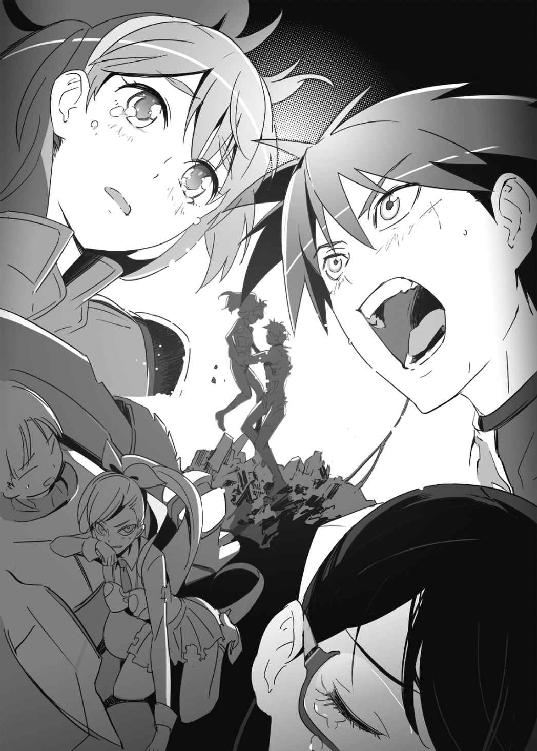
５
謙吾とレオンハルト。二人のギルガメシュ。不死身同士となって、戦闘を再開する。
レオンハルトは、左手で謙吾の手首をつかみにいく。
七湖の骨を折ったように、右肘を叩きこむつもりだ。
謙吾はその手をかわして、空中で後ろ回し蹴り。ユキナのおかげで不死になったぶん、動きが大胆になっている。鋭い蹴りが一閃。レオンハルトの首の骨が折れる。
しかし、それは彼の計算だ。
首の骨でも、ギルガメシュならば骨折ぐらいすぐに再生する。
再生中にレオンハルトは左手で謙吾の足をつかんだ。
「なッ！」
「ギルガメシュ同士の戦闘で......」
振り回し、謙吾を地面に叩きつける。
「首の骨狙っても駄目ですよ！ バットヘッド１！」
つかまれて、強引に振り回されたせいで、謙吾の足首の関節が外れた。これもすぐに再生。そして叩きつけられた衝撃で背骨の骨が折れている。
問題は、ＧＥＮＥＺだった。
レオンハルトの狙いは、投げでＧＥＮＥＺの内部機構を破壊し、謙吾から一切の戦闘能力を奪うことだ。謙吾のヘルメット内部のヘッドアップ・ディスプレイに次々と故障を知らせる文字情報が並ぶ。運動機能四〇％低下、筋力強化機能三五％低下、左肩部メイン・アクチュエーター破損、熱源探知モード使用不可、射撃指揮装置使用不可、生命維持機能低下──。
（よくはない。よくない状況だが──）
謙吾は、つかまれているのとは反対側の足でレオンハルトを蹴り、間合いを取った。シラットは倒れてからの動きが滑らかなのが特徴だ。
（まだ俺のＧＥＮＥＺは動く。ギリギリ、戦える）
立ち上がった謙吾に、すかさずレオンハルトが得意の蹴りを打ち込んだ。
「これで、終わりにしましょうよ！」
ピンボールを弾くフリッパーのような、パンクラチオンの強烈な中段前蹴りを、謙吾はまともにくらってしまう。この蹴りで吹き飛ばされるのは、もう何度目か。このまま落下したら、あとはレオンハルトにとどめをさされるだけだ。
そんな謙吾の視界に、さっき落としたＳＯＰＭＯＤ－ラハティ対戦車ライフルが入った。
空中で体をひねり、姿勢を制御し、なんとかラハティを拾う。
このラハティは──超硬合金の銃剣つきだ。
吹き飛ぶ最中にラハティを拾い、着地と同時に謙吾はそれを投げた。
オリンピックのやり投げ選手のように力強く大地を蹴り、自分とＧＥＮＥＺに残った力を振り絞って、命をかけて投げた。
「！」
謙吾の予想通り、レオンハルトは謙吾を追いかけてきていた。
彼の胸のど真ん中に、バヨネットが突き刺さる。
その刃が、レオンハルトとそのＧＥＮＥＺを貫通していた。そのまま砲弾のようなラハティの勢いに引きずられて、彼の体が後退する。串刺しになったバヨネットの先端が地面に突き刺さる。ギルガメシュなので死にはしないが、もう動きがとれない。
レオンハルトは地面に縫いつけられた。
「......俺の勝ちだ」
謙吾は荒い息をつきながら言った。
「そっちのギルガメシュ有効時間がわからん。とどめをさす余裕はなさそうだ」
「......あーあ......」
レオンハルトはぐったりしていた。バヨネットが心臓の一部を貫いたまま、昆虫標本のようになっているので、まったく手足に力が入らない状態だ。超硬合金の刃が、心臓の完全な再生を邪魔している。
「......こっちの不死身は、一時間三六分五二秒」
レオンハルトが言った。その言葉に、謙吾は目を見開く。
「なに......？」
ユキナのギルガメシュ化は七分三二秒。
バビロン・メディスンのアンナトゥリーは、七分二九秒。
レオンハルトの言葉が噓でなければ、とてつもない新記録だ。
「やっぱり知らないんですね......時間を伸ばす方法を」
ギルガメシュ化有効時間のことは気になったが、ここは敵地だ。勝負がついたら、長居する理由はなかった。
「あなたは何も知らないんだ。よくそれで命をかけて戦えるものだ」
とレオンハルト。負け惜しみ、という感じはしなかった。
「............」
いや──本当は長居する理由はある。彼らに訊きたいことが山ほどある。
ただ、今はそれが許されない状況なのだ。
謙吾は気絶した七湖を背負い、ユキナとともにポセイドン・アカデミーから脱出した。
エピローグ
１
彩離とシーラは引き分けに近かった。
ただ、ＧＥＮＥＺに性能差があった。謙吾がレオンハルトを倒すと、彩離もすぐに戦場を離脱した。シーラのプロトタイプ・ティラノは限界が近く、追跡するのは不可能だった。事実上負けたのだ。ガンズ・オブ・ナヴァロンは。海神学園に。
「......チクショー」
シーラは、彩離のことが「怖かった」。最初は自分に似ているかと思ったが、根っこのところが全然違うような気がした。ある瞬間、まるでスイッチが切り替わったように彩離の動きがよくなった。──あれは狂戦士だ。一番危ないタイプだと肌で感じた。何をどうやったらあんな人間が「作れる」のか......シーラは彼女の過去にむしろ同情してしまった。
「よう......どんな感じ？」
七湖にハチの巣にされた阿香音が、ようやく再生を終えて串刺しのレオンハルトに歩み寄った。彼のヘルメットを外すと、ぐしゃぐしゃの泣き顔が現れる。痛みが理由で流れる涙ではない。ただ単に、敗北が悔しいのだ。
「ごめんなさい......阿香音」
「いいよ、もう......お前は頑張った」
阿香音は、レオンハルトの体からバヨネットつき対戦車ライフルを抜こうとしたが、びくともしなかった。「ふんぬッ！」と力を込めて踏ん張っても無駄だった。疲れ果てた阿香音は「ああ、もう！」と苛立った声をあげる。
「やっぱ、あとでお仕置きだ。面倒くさいやられかたしやがって、この○×！」
「うええ......」
２
涼羽の道案内で装甲トラックを運転し、セルジュたちは脱出用のヘリコプターにたどりついた。ニムロッド１が置いていったのは、ＭＨ－53Ｊペイヴロウ特殊作戦用ヘリコプターだった。全天候対応、夜間飛行対応。赤外線前方監視装置と地形追随レーダーを装備しているので、曲芸のような超低空飛行が可能だ。そして身を守るために、レーダー妨害装置とフレア発射器も積んである。
伊達に長生きしているわけではないセルジュが、装甲トラックに続いて操縦席に座った。副操縦士は大迫。亜佑美が航空機関士を務める。
ガンズ・オブ・ナヴァロンを打ち破った謙吾たちを回収し、超低空飛行でギリシャを脱出。地中海上空で厳島一族所有のＭＣ－１３０Ｐコンバット・シャドーから空中給油を受け、トルコ領空に入って日本大使館に連絡し一安心となった。
七湖はまだ気絶中で、こども学長に応急処置を受けている。あまり現場に出ることのないこども学長だが、骨折に添え木を当てて包帯を巻く手つきは慣れたものだった。
謙吾とユキナは、ヘリの貨物スペースで硬いベンチに並んで座っている。大怪我からの再生の連続でさすがに疲れ果てたらしく、ユキナは揺れる機内で眠りに落ちて、可愛い寝息を立てて謙吾の肩に寄りかかっていた。謙吾も疲れているし眠りたいが、まだヘルメットを外しただけで、ＧＥＮＥＺも脱いでいない状態だ。
ユキナの息が謙吾の耳にかかった。くすぐったくて、愛おしさが増す。とうとう告げてしまった。今度はもう、忘れない。
大好きだ、と──。
しかし、幸せな気分に浸ることはできない。
『知らないのか？ 厳島一族が何をやっているのか？』
レオンハルトと阿香音の言葉が、鋭い棘のように謙吾の胸の奥に引っかかっている。
『あの可愛らしい高等部の学長さんだって、一族の連中に何をされているかわかったもんじゃないんだぞ？』
『こんな乱暴なやり方をしたのは、厳島一族への警告という意味もあったんですよ』
目の前に暗雲がたちこめるような気分だった。謙吾たちも知らないうちに、本社と日本支部が対立している。厳島一族に何かがあるらしい。そしてユキナは、ありとあらゆる組織にとって「特別な」ナイチンゲールらしい──。
気になることは他にもある。涼羽が襲撃された件だ。林や張鐘、そして亜佑美だけでこっそりやっていたのに、どこからか情報が漏れていた。これはまだ推測にすぎないが、恐らく特進クラスの内部に裏切り者がいるのだ。
考え出すと、キリがない。
「......ふう」
ユキナの頭を優しく撫でて、謙吾は決意を新たにした。
──何があろうと、誰が敵になろうと、俺は彼女を守る。
３
東京都練馬区、海神学園近くのとある高級ホテルの一室──。
美しいが、荒んだ目つきの少女がいる。
長い濡羽色の黒髪、くっきり通った鼻筋、細いあご。
常時皮肉っぽく歪んでいるような、それでいて艶めかしい唇。
ナイチンゲール──岩清水ニキだ。ソファに腰を深々と沈めて優雅に足を組んでいる。
ニキは、白い肌を大胆に露出させた、ほとんど紐のようなブラックレザーの衣装でその無駄のない肢体を包んでいた。すらりとした足の魅力を高めるために、室内であるにもかかわらず厳ついブーツをはいている。もともと高圧的なニキの容貌もあいまって、まさに完全無欠のＳＭ女王様スタイルだった。
ニキは、一人の少女をいたぶっている。
足下で四つん這いになってニキのブーツをぺろぺろとなめているのは、海神学園の生徒だった。ファンタスティック・スリーの一人である鞠歌──国木田鞠歌だ。
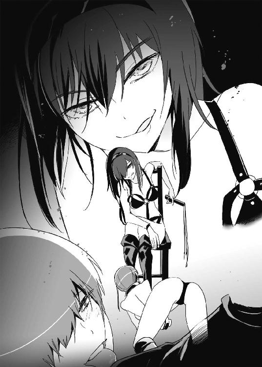
「ああ......ニキさま......」
鞠歌はすでにニキの虜だった。
正体を隠して偶然を装ってニキのほうから近づき、今ではこの通りの関係だ。
鞠歌は首輪をつけ、様々な卑猥な仕掛けが施された拘束衣姿だった。
若い体を持て余し、パソコンを相手に欲求不満の日々を送っていた鞠歌の心の隙間に、ニキはするすると入り込んで支配していった。ファンタスティック・スリーの他の二人や、特進クラスの学生傭兵たち、そしてグリークスの情報部に気づかれないように、ニキは細心の注意を払って冬の間に鞠歌と密会を重ね、じっくりと調教した。もともと鞠歌は美しい女主人に仕えるのが夢だったし、ニキの手練手管は巧みだった。
一番大事なのは、愛することだ。ニキは鞠歌を利用するつもりで近づいたが、好意を抱いたのは本当だった。マゾヒストは、ただいたぶられればそれでいいというものではない。サディストの愛情には敏感なのだ。その点に関して、ニキは噓をつかなかった。鞠歌にも美学がある。愛されたいという願望がある。ニキはその思いを尊重したうえでいたぶる。
時間をかけたおかげで、今では鞠歌はニキの言いなり。
情報は筒抜けだ。
今も鞠歌は、ニキの愛と責めに飢えている。ニキはその飢餓感をギリギリまで煽って、それまで性について幼かった少女に発狂寸前の快楽を与える。
「さあて、次は海神学園が戦場になる番ね......」
謙吾の父親──大牙厳一の下で暗躍するニキ。
涼羽の情報をポセイドン・アカデミーに流したのは彼女の仕業。
そのことをバビロン・メディスンのユニット１に教えたのも、彼女の仕業。
厳一の目的は、彼女もまだ知らない。が、それはどうでもいいことだ。厳一はニキを助けてくれたし、ニキの目的にも理解を示してくれている。
──ニキの目的。
ナイチンゲールの力を悪用しようとする、すべての組織の崩壊だ。
〈ＧＥＮＥＺ－６ 了〉
あとがき
今回のあとがきは趣向を変えて、ツイッターでお題を募集して、それに答えていく形式というのを試してみました！
募集後、すぐに反応してくださったのが、知り合いの漫画家袴田めら先生。「○×について書いてください」とお題をいただいたのですが......かなりの無茶ぶりだったので何も書けないですね（笑）。申し訳ないです！ うむう。『最後の制服』の新装版も単行本買いますよ！
で、ガガガ文庫の『武林クロスロード』で挿絵を描いてくれた友人のＲｅｂｉｓさんから「けいおん復活についてとか」っていうゆるいお題が。
そうそう、僕は『けいおん』が熱烈に好きなんですよもう。原作が復活するとかしないとか。この本が出るころには詳細が発表されてるんでしょうね。劇場版も楽しみだなあ。一番好きなキャラは唯、次が和です。
ツイッターＩＤ、damedeath123さんからのお題。
「最近起こった衝撃的な事件」
事件というか、今年に入って格闘技を始めたら右の拳をちょいと痛めました。しばらく小説が書けなくて、映画ばっかり観てるという。何の格闘技を始めたかはまだ秘密です。ヒントはオープンフィンガーグローブ。
ツイッターＩＤ、Kasena11451さんからのお題。
「女の子が作ってくれるとテンションがあがる料理」
女の子が作ってくれればなんでもご褒美だと思うんですがいかがでしょう（笑）。個人的には肉だと嬉しいです。肉料理を作って「上手に焼けましたー」とか言ってくれるとアイルーみたいで可愛くないですかどうですか。
ペンネーム佐藤奇水さんからのお題。
「独身時代の貧乏料理」
料理とはいえませんが、サバの味噌煮やさんまの蒲焼きの缶詰を開けて、直接割りばしで食べてました。ビールと、絹ごし豆腐にニンニク醬油かけただけの夕食とか。
ツイッターＩＤ、kanzyaさんからのお題。
「銃を撃った話」
僕はよく、グアムに実銃を撃ちに行きます。最初に銃の撃ち方を丁寧に教えてくれたのは、なんとあの押井守監督。昼間は射撃場で銃を撃ちまくり、夜はホテルで押井監督から映画やアニメの話を聞くという素晴らしい体験ができました。監督の銃や格闘技に対するこだわりには、凄く影響を受けています。
ツイッターＩＤ、calmlikeさんからのお題。
「深見先生のお子さんについて」
親バカなところをあとがきでさらしてもなあ......。そろそろ息子が三歳になります。最近よく思うのは「妻や子供がいてもダメ人間は続けられる」ということ。漫画もアニメもゲームも、結婚する前と変わらず楽しんでいます。ギャルゲー（ＸＢＯＸ３６０の『ぎゃる☆がん』とか）をプレイしているところを嫁さんに見られたらかなり恥ずかしいですが、それだけです！
ツイッターＩＤ、yurusanstarさんからのお題。
「は吹替版を買ったらいいか字幕版を買ったらいいか」
両方！ と言いたいところですが、僕が持ってるのは字幕版だけですね（笑）。吹替版も気になってます。『コール・オブ・デューティ：ブラックオプス』は、ゲーム好きだけでなく、映画ファン、ミリタリーファンにも絶対オススメの超傑作でした。
ツイッターＩＤ、kujiranukoさんからのお題。
「自分がよく読む雑誌や、今年の目標とか？」
今年の目標......もう二月なんですよね（笑）。自分、あんまり一年の目標って立てたことがないし......。健康に、家族を大事にして、仕事もたくさんする......そんなところでしょうか。よく読む雑誌はミリタリー系か『百合姫』です。
というわけで、あっという間にあとがきのページ数が埋まりました！ ツイッターでお題を提供してくださったみなさん、ありがとうございました！
最後にＧＥＮＥＺ本編の話も。いよいよ主要登場人物はほぼすべて登場しました。これから謙吾たちは、誰が本当の味方で、誰が本当の敵なのか見極めていくことになります。謙吾の選択と宿命の戦いを、読者さんにも楽しんでいただければ幸いです。よろしくお願いします。
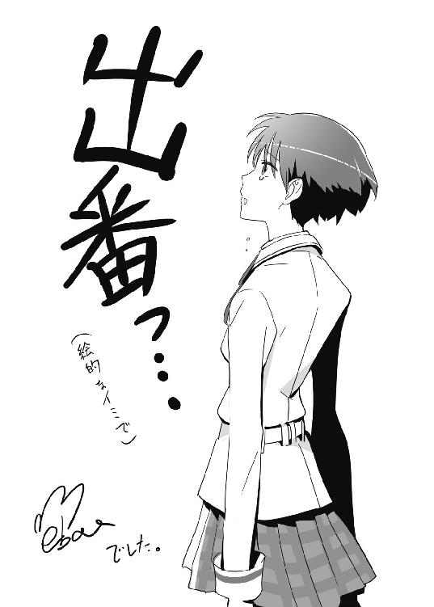
初 出
プロローグ 書き下ろし
第一章 戦うお正月
ドラゴンマガジン２０１１年３月号
第二章～第七章
書き下ろし
エピローグ 書き下ろし
ＧＥＮＥＺ－６
ジーンズ
深見 真

平成23年3月25日 発行
発行者 山下直久
発行所 株式会社富士見書房
〒102-8144 東京都千代田区富士見1-12-14
http://www.fujimishobo.co.jp/
"(C)2011 Makoto Fukami, mebae/Fujimishobo